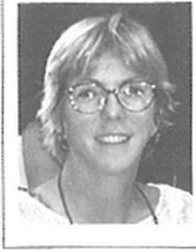

^ n> >o
O "

A*
n . % 1 „ *c'ol/-v *
V* * \
360v*
Reflections
^ n> >o
O "
A*
n . % 1 „ *c'ol/-v *
V* * \
360v*
ontheDevel°'Mnent<>
.sSjSted Rep0^
,f ComPuter
Additional copies of this booklet may be purchased for $5 each by contacting The Poynter Institute, 801 Third Street South, St. Petersburg, FL 33701 Phone: 1-888-POYNTER (769-6837), Fax: (727) 821-0901

Copyright 1999 © by The Poynter Institute for Media Studies
801 Third Street South, St. Petersburg, Florida 33701
Except for appropriate use in critical reviews or works of scholarship, the reproduction of this work in any form or by any electronic, mechanical, or means now known or hereafter invented, including photocopying and recording, and any information storage and retrieval system is forbidden without written permission of the publisher.
Acknowledgments
This book of readings is dedicated to all the journalists in newsrooms who have struggled and strived to use the computer’s power in the powerful reporting. The stories told here reflect - and honor - your stories. It is by your example that the promise of computer assisted reporting will be realized in newsrooms everywhere.
In addition, I’d like to thank Publications Manager Billie Keirstead and copy editor Vicki Krueger for their excellent editing work, under an intense deadline. They were able to take these different voices and create a beautiful chorus.
Reflections on the Development of Computer Assisted Reporting
Nora Paul: Assessing 10 Years of Computer Assisted Reporting .....................................1
Philip Meyer: The Future of CAR: Declare Victory and Get Out! ...................................4
Brant Houston: Changes in Attitudes, Changes in Latitudes........................................6
James W. Brown: A Beginning Educational Effort..................................................8
Elliott Parker: The View from the Backshop.......................................................10
Paul Adrian: Put Your Career in the Fast Lane with CAR...........................................12
Michael J. Berens: The Myth of the Machine.....................................................14
Sarah Cohen: Using People, Not Numbers, to Tell the Story .......................................16
Stephen K. Doig: It’s Time to Drive CAR Concepts Flome ........................................19
Rich Gordon: Reflections of a One-Eyed Man ......................................................21
Jim Heaney: The Education of a Computer Assisted Reporter.....................................23
Jennifer LaFleur: Evangelizing for CAR...........................................................25
George Landau: Objects in Mirror Are Closer Than They Appear ...............................28
Teresa Leonard: The State of CAR as Seen from Tire News & Observer..........................31
Stephen C. Miller: Journalists: Turn Around......................................................33
Dwight Morris: Driving Defensively Through Data’s Dangers.....................................35
Bob Port: Tire Contraption..........................................................................37
Pedro Enrique Armendares: Yes, There is CAR in Latin America .............................40
Nils Mulvad: Stories Are the Proof.................................................................43
Peter J. Verwey: On the Road to Digital Journalism...............................................45
Randy Reddick: FIDO Net Made Me Do It ........................................................47
Ann Saul: Active and Interactive Training ..........................................................49
Debbie Wolfe: Viva the Evolution!..................................................................51
By Nora Paul
1989 was a watershed year for journalism. During the 1980s. the power of personal computers increased and the cost dropped. More and more government records were being shifted from paper to electronic fonnat. The message of Phil Meyer’s classic text. Precision Journalism, reached an audience of talented journalists who wanted to incorporate its promise of enterprise journalism and analysis into their reporting. These threads came together in 1989 with the establishment of two different organizations, organizations that would change many journalists’ perceptions from the computer as a word processor to the computer as a partner on their reporting team.
In Indianapolis, Pulitzer Prize-winning journalist Andy Schneider joined the faculty of Indiana University School of Journalism and soon found a kindred spirit in Jim Brown. Together they conceived a way to begin spreading the word more broadly about the techniques of computer use in reporting. They named it the National Institute for Advanced Reporting (NIAR) and began making plans for the first conference to teach and discuss these techniques. (See Jim Brown's essay on page 8 for more details about the foundation of NIAR and the first conference.)
At the University of Missouri, Elliot Jaspin created the Missouri Institute for Computer Assisted Reporting (MICAR), which held computer “boot camps” for journalists who wanted to be indoctrinated in the techniques of computer use in reporting. (See Brant Houston’s essay on page 6 for more details about the foundation of MICAR and its evolution to the National Institute for Computer Assisted Reporting, orNICAR.)
One of the key developments that brought the potential of data analysis to reporters also was rolled out that year by Jaspin. With project partner Dan Woods, Jaspin created 9-Track Express, a way to use personal computers to manage the huge data files government agencies put onto 9-track tapes that previously had required mainframe computers to process.
Through these training initiatives, grassroots industry buzz about CAR, and some high-profile, prize-winning stories that relied on computer analysis techniques, the dawn of the computer age in newsrooms seemed sunny and assured.
But 10 years later, just what is the state of computer assisted reporting in newsrooms in the United States and around the world? According to a gathering at Poynter in January 1999. there is some good news and some bad news. Gains in the equipment (case of use, lowered cost, better software) have been weighed down by over-extended journalists who see using this suite of skills as a burden, rather than as a reporting opportunity. While it is true that CAR over the past 10 years has come to be seen as a way to do stories that couldn’t be done otherwise and helps fulfill the journalist's watchdog role, it is also true that these techniques can be hard work (from data acquisition to analysis), that they arc currently underutilized, and that many reporters still want to do things the “easy” way.
What can be done to help promote the use of computer analysis of data to reveal new stories, to verity (or nullify) popular
Nora Paul is a faculty member at The Poynter Institute for Media Studies and conducts seminars in the areas of news research and news library management. computer assisted reporting. and leadership in new media newsrooms. She came to Poynter in 1991 after 1? years at The Miami Herald. She is a frequent speaker at journalism conferences and cofxlucts newsroom workshops and Internet training courses.
conceptions, and to provide the information checks and balances in an increasingly data-based world? The Poynter Institute, NTAR, and N1CAR wanted to know.
Together we decided to convene a group of 22 pioneers and practitioners of CAR techniques. They came to Poynter and, for two and a half days, discussed how CAR has changed the face of journalism and how it hasn’t. After establishing the continuum of CAR techniques - from use of e-mail, to searching online archives, to using the Internet, to use of spreadsheets, to developing databases, to social science research techniques - we all agreed that the battle line for CAR use was drawn at the level of spreadsheet use and above. E-mail, online archive use, and the Internet were, for a majority of journalists, a standard set of tools they used. It was these other tools of computer use in reporting that we wanted to assess.
We asked the group to help us identify the issues that continue to challenge journalists interested in using these techniques in their reporting and newsgathering. We had them advise us on the kinds of research projects we should undertake that could help the industry understand the impact of CAR work on journalism. Wc challenged them to identify the tools, resources, or guidelines journalists still need that can help them use these techniques with more confidence and ease. Here are some of the highlights:
Issues
The issue areas identified by the group fell into five broad categories with specific concerns under each:
Skills/professionalization
■ Deciding whether CAR/numeracy should be a job requirement for journalists and at what level.
■ Establishing our identity as a profession.
■ Putting CAR skills/numeracy on entry-level skills tests and regular performance reviews.
■ Defining what wc do in terms of objectives instead of tools, clarifying the vision of CAR, and figuring out how to brand and sell it.
■ Promoting social science principles into the daily practice of journalism.
■ Creating a well-described set of skills for doing CAR and developing industry standards regarding technology skills and knowledge.
■ Developing a full tool box of reporting skills that integrate CAR with other skills (social science, traditional reporting, civic
journalism, etc.).
■ Retrofitting beats to incorporate CAR skills and developing a model for all to use.
■ Integrating CAR into daily journalism, helping journalists realize it’s not just for big project reporting.
■ Removing the false choice in the newsroom between storytelling and CAR.
Organizational infrastructure/support
■ Getting buy-in for CAR from top editors, moving them from acceptance to active participation.
■ Getting help from assignment and line editors (who often don’t understand CAR techniques), so they can provide more effective editing backup to CAR stories.
■ Developing strategies and benchmarks that get management to raise the bar for reporters and editors.
■ Restructuring newsrooms to promote CAR use (personnel, technology, organization).
■ Overcoming cultural lag in the newsroom.
Product/content: “Doing well by doing good”
■ Inculcating belief among newspaper owners/managers that good journalism is profitable journalism.
■ Determining whether CAR informs the public better. Does it enhance the public’s knowledge?
■ Determining the mission of the organization. If it is to produce the best possible content, CAR and good journalism happen.
■ Helping journalists in TV newsrooms learn and use CAR techniques in the fast-paced environment and provide a system for producing quality CAR stories.
■ Getting CAR into news organizations’ vision and goals, getting management support/buy-in.
■ Developing opportunities for cross-company collaboration on CAR projects.
Access
■ Technology integration: creating a structure/organization to collect and analyze data and share it with reporters.
■ Technological barriers: overcoming problems with incompatible systems, insufficient equipment.
■ Making the use of CAR tools easier in order to facilitate access and use by reporters.
■ Determining the level of support needed: equipment, people, time.
■ Improving collaboration with systems editors, helping them understand the needs of the CAR reporter.
■ Understanding globalization of information through better access to international resources, resulting in more globalized reporting.
■ Taking advantage of the multiple media opportunities for distribution of CAR stories (print, broadcast, online).
■ Answering concerns about protection of privacy with the greater access to information, clarifying journalistic demands and ethics, reconciling public access to public records vs. privacy.
■ Ensuring journalists’ and news consumers’ understanding of the relevance of data revealed in CAR analysis.
■ Achieving better interaction with online news, getting online folks more interested in working with CAR projects.
■ Monitoring electronic FOIA and public records access.
■ Anticipating growing privatization of government services (i.e.: prison system) resulting in growing number of private, rather than public, records.
■ Anticipating and helping design European law for public records access.
Teaching/training
■ Re-thinking journalism education - what should we expect from new journalists?
■ Integrating CAR into J-school curricula, particularly for undergraduates.
■ Improving journalism education to incorporate “advanced reporting” techniques and getting faculty interested in CAR.
■ Teaching math skills to journalists and integrating number crunching with the teaching of good storytelling.
■ Developing approaches for training journalists in CAR techniques, recognizing computer phobia/time-related excuses and real constraints.
■ Ensuring necessary budget and time support for training journalists.
■ Teaching conceptualization, application of “scientific” logic, and reasoning to data analysis.
■ Improving the use of public documents in reporting - electronic or paper.
■ Figuring out how to conduct continuing training - journalism is a continuing-education profession.
■ Training for editors to produce CAR-competent editors to backstop reporters.
■ Training for management on how to evaluate CAR skills.
In the discussions that followed from this inventory of issues, six priority projects were proposed. These were:
Help the assigning/line editors help us: The most essential person to journalists working on CAR projects is their editor, but too often the editor doesn’t know much about these techniques. An editor can help reporters who are using traditional reporting techniques; an editor knows how to question a journalist who had interviewed a person, but not one who has interviewed data. Editors need some help.
IDEA: Write a handbook, “What Every Editor Needs to Know About CAR,” focusing not on the technical aspects but the practical questions they should know to ask.
Catalog the resources: Data access is the make or break point for CAR work. Negotiating the acquisition of records, understanding the pitfalls of using the records, developing ideas for reporting from the records, and making access to the information in the records available to other journalists are the challenges. In newsrooms all around the country, journalists have negotiated for records and figured out how to make it easier for others to use them. We’d like to gather information on those records, how much they cost, what was involved in getting them, and how they are being used.
IDEA: Create a database of databases to which individual newsrooms can contribute. This could be an internal record-
keeping resource as well as a network of information about data being used in newsrooms.
Help the J-schools: Integrating CAR skills into traditional journalism training has been a challenge. Should journalism educators have elements of it in all classes, or give one class and hope the students apply those skills in other reporting/writing courses? Journalism educators have tried various approaches. What is working? What suggestions might there be for educators?
IDEA: Develop some sample syllabi for journalism courses that incorporate CAR skills within the journalism curriculum. Also, canvass the journalism schools and find out their current CAR curriculum approaches as a way to provide some ideas and contacts to others.
Elevate numeracy: Numbers and understanding what they mean are the crux of CAR work. Too many journalists are math-phobic and uncertain in their interpretation of the significance of numerical data or how to do certain types of calculations. We need to help improve their competence and confidence in this critical area of journalistic work.
IDEA: Create a math/spreadsheet competency self-test (along with a pre-test tutorial and clear explanation sheet for how to work the problems for self-evaluation).
Skills assessment: Just what comprises the suite of CAR skills? What techniques are involved? What processes are required for different techniques? How can journalists’ skill levels be evaluated, and how can they set their own learning goals? We need a skills assessment inventory.
IDEA: Develop a list of CAR competencies that naturally build on each other and develop tests that can help determine skill levels reached after appropriate training.
Who’s doing what we should be doing and how did they do it? Various models and approaches have been taken for the use of CAR in newsrooms, from the “geek in the comer” to the “arm everyone who can shoot.” What approaches have been effective in newsrooms wanting to move CAR use forward, and why have they been effective?
IDEA: Analyze the CAR operations in a variety of newsrooms to discover approaches taken, attitudes and perceptions held, and support given. These case studies can be used to help other newsrooms develop approaches to improving the access to and use of CAR techniques in their reporting.
The continuing efforts of the conference participants and, we hope, others will bring each of these projects to life.
This book of readings, a set of CAR autobiographies, is the work of the participants in the January conference. They were asked to write about their place in the evolution of CAR in their organizations and in their work as journalists. In this collection you will find their definitions of CAR, reminiscences of their discovery of CAR, recollections of favorite “How I got ’em” CAR stories, and hard-earned advice to beginners and seasoned journalists venturing into the use of these ways of reporting.
We start the essays with an appropriate chronicler of where CAR has been and where it is going - appropriate because, in many ways, CAR started with him. Phil Meyer, author of Precision Journalism and champion of the use of social science research techniques in reporting, begins the set of readings with a typically provocative essay, “The Future of CAR: Declare Victory and Get Out!”
Next come essays by the people most involved in three of the foundations of CAR training and discussion: Brant Houston on NIC AR, Jim Brown on NIAR, and Elliot Parker on CARR-L.
These are followed by personal histories by CAR pioneers and current practitioners who attended the conference. Essays from our three international participants, representing the CAR perspectives in Mexico, Denmark, and the Netherlands are next. Wrapping up are a trio of essays focusing on the CAR education and training needs of the past, present, and future.
We hope these essays will give you a sense of where CAR has been, how it got to where it is, and what it needs to keep it going. We’d like you to join us in this effort to better understand and promote the techniques of computer assisted reporting into daily and project journalism. Join the CARR-L or NICAR-L list-servs to be part of the discussion. Attend NICAR and IRE conferences. We will be presenting the ideas and issues that came out of this conference in a variety of ways and asking for your input.
In 1991 Larry Sanders, then CAR editor at USA Today, said, “It won’t be long before some government agencies will not be keeping paper data anymore. If newspapers are going to maintain their ‘watchdog-of-the-govemment’ role, they are going to eventually have to have access to electronic data as well as paper data.” That day has come.
3
An popular axiom about CAR is that it makes a good reporter better but it won’t make a bad reporter good. It’s not a magic bullet; it’s hard work. But it is work that can find and tell stories that you couldn’t find and tell otherwise.
By Philip Meyer
The time has come to abandon “computer assisted reporting” - CAR. It’s an obsolete concept that is starting to get in the way of our understanding of the real battles that we need to fight and win if we are to save the soul of journalism.
CAR is an embarrassing reminder that we are entering the 21st century as the only profession in which computer users feel the need to call attention to themselves. All of the other professions take computers for granted.
For example:
My cousin Bob Meyer is a retired accountant, and he uses a computer to audit the books of his boat club, the Marco Island Sail and Power Squadron. He doesn’t call himself a computer assisted accountant.
My daughter Melissa Meyer is an environmental designer in Coral Gables, Fla. She does her creative work on a computer. She doesn’t call herself a computer assisted designer.
My cousins Max and Richard Benne are farmers in St. Joseph County, Mich. They use computers to calculate depreciation on their equipment and to calibrate the fertilizer applications for their corn and soybean fields. They don’t call themselves computer assisted farmers.
Let’s forget about the computer and start talking about, and organizing around, what we really want to do. Here’s what I think that is:
Journalism today is in a battle for survival against the forces that would merge it with entertainment, advertising, and public relations. The information age has created such a confusing buzz of voices that it tempts us all to sacrifice almost anything for attention - including truth.
What the practitioners of CAR have been after - whether consciously or not - is a higher standard of truthtelling. Our response to the information age has been to learn to manage larger bodies of information with increasingly powerful analytic tools, leading to a more exact definition of truth. As it happens, a computer is helpful in doing that. But the computer itself is not the goal, nor does it define what we are trying to do. We are trying to push journalism toward science. Almost everybody else, it seems on most days, is trying to push it toward ait.
Pushing journalism toward art can justify or mask the merger of reporting and advocacy. It can facilitate the entertainment function of journalism - and we should never deny that entertainment is one of our functions. It can lead to a subjective form of truth in the postmodernist, phenomenological sense. But it will not, in the long run, lead to the building of credibility and trust that journalism needs if it is to survive as an independent information specialty.
One response to information overload has been the elevation of spin. When attention-getting is more important than discovering and imparting the truth, the marketplace rewards those who are skilled at creating appearances. Our goal needs to be to find a way to help that marketplace reward the truth-tellers. The demand is a given. With so much effort devoted to crafty distor
tion, the market value of truth has to rise as a function of its scarce supply. All a media company has to do is find a way to brand it and sell it.
Our little piece of this action should be the application of scientific method to the practice of journalism. We need to focus on the time-tested methods of overcoming wishful thinking, superstition, selective perception, and the other human frailties that hinder the acquisition of knowledge. We need to build a force in journalism that rewards critical thinking and the skeptical testing of conventional wisdom. Yes, the computer is a tool that can help us do that. But that’s all it is. Focus on the goal, and then we can take the computer for granted, as the farmers and accountants and designers already do.
My first computer encounter was with the IBM 7090 at the Harvard Computation Center in 1966. Having failed miserably at two successive attempts to predict Ohio election outcomes for the Akron Beacon Journal, I was using my Nieman year to study social science research methods. I started with a course for sophomores in which each student was allotted two minutes of the 7090’s CPU time. My 120 seconds produced several cross tabs and significance tests from a survey of junior college students, using Harvard Data-Text, a higher-level programming language that was the harbinger of Statistical Package for the Social Sciences (SPSS).
For the second semester, I did advanced work in a graduate course after negotiating a deal with Dwight Sargent, curator of the Nieman Foundation. He gave me $100 to buy computer time in exchange for writing an article for Nieman Reports.
I was back on the job in the Knight Newspapers Washington bureau only a few weeks when the Detroit riot broke out, and I was dispatched to help the staff of the Free Press. The call came at noon, and that night I was riding with the National Guard amid the burning buildings and sniper fire of 12th Street. When the shooting ended and the fires were out, I proposed a survey of the riot neighborhoods to discover the riot’s underlying causes, applying the principles I had just learned at Harvard.
Of course we used a computer to analyze the results. I recruited University of Michigan professors John Robinson and Nathan Caplan and computer programmer Judith Goldberg to help with the design and analysis. Goldberg did the crosstabs with Filter Tau, a program more primitive than Harvard’s but good enough. It ran on an IBM 360/40.
4

Phil Meyer teaches two courses each semester while coordinating the master's program in journalism at the University of North Carolina at Chapel Hill. He currently produces an occasional column of media criticism for USA Today and researches current trends in newspaper journalism.
The response to that project inspired a long-term commitment by me and my management to this new form of journalism -
defined not by the computer, but by the application of social science research methods to reporting. Executive editor Lee Hills later wrote to me that the survey was an important factor in the decision of the Pulitzer jury to give the 1968 prize for general local reporting to the staff of the Free Press. The Kemer Commission called the survey one of the few “brilliant exceptions” to the generally dismal performance of the news media in covering riots.
While based in Washington, I became a roving local reporter, helping members of Knight’s then-small group of newspapers with stories, mostly relating to the civil rights and anti-war movements, that needed bigger investigative power than conventional methods could muster.
The first description of this as computer reporting that I can remember was when a Newsweek profile in 1968 called me “a computer reporter.” The application of social science research methods was too complicated a frame. Computers were familiar, in concept if not in general use, and so that became the popular definition of what I was doing.
By this time, I was writing my own programs in Data-Text. Harvard had produced the software on a government grant and placed it in the public domain. I bought it for $10, the price of the 7-track tape. And I located several computer centers that offered 7090 or 7094 time at cut rates while the 360 generation of machines was capturing market share. My statistical skills increased. For a 1968 study of black attitudes in Miami, I used factor analysis to sort out the varieties of black militancy with guidance from CNN’s Bill Schneider, then a Harvard graduate student.
In the 1969-1970 academic year, I took a leave of absence from Knight to write Precision Journalism with money from and under the watchful eye of The Russell Sage Foundation. The book covered polls, field experiments, and analysis of public records. The title was suggested by Everett Dennis, who had coined the expression to contrast with “the new journalism” being practiced by those who applied fiction techniques to reporting.
That led to another error in framing. Because my most visible work had been with various forms of survey research, precision journalism became identified primarily with polls. While more accurate than the computer frame, it still did not capture the broad sweep of the concept as described in the first chapter of the first edition of Precision Journalism. Polls, when done correctly, are part of scientific method, but the concept is meant to
cover all applicable forms of scientific method, including public records and experiments.
My first public records application came in 1972 when I took time out from election coverage to help Donald L. Barlett and James B. Steele with their criminal justice investigation. The Philadelphia Inquirer was by then a Knight newspaper, and I worked out a coding scheme and rudimentary sample design, then wrote the analysis program in Data-Text. By that time, IBM 7090 cost was down to $75 per hour - by the wall clock, not CPU time - and the three of us did the analytic work at a private computer center in suburban Maryland. In the tabloid reprint of their story (although not in the newspaper), Barlett and Steele included a sidebar crediting me with a “sophisticated computer analysis.” The criteria for distinguishing it from an unsophisticated computer analysis was not defined, but, once again, the computer was used to define the work. My field experiments came much later, after I switched to journalism education. At the University of North Carolina in Chapel Hill, I have sent student reporters into the field to measure the courtesy of motorists, the racial prejudice of pedestrians, underage alcohol sales, and the knowledge of pharmacists about the AIDS protection capabilities of different brands of condoms. In each case, we used computers without feeling the need to mention it.
To emphasize that what I was doing was social science as well as journalism, I did two things. I archived data, starting with the Detroit riot survey, with the Institute for Research in Social Science at Chapel Hill to make it available for secondary analysis by scholars and graduate students. And I found opportunities for my own scholarly publishing, starting with a reworking of my Miami civil rights stories for Public Opinion Quarterly (33:2 1969).
After three decades, the time has come to move away from the CAR frame and toward a social science frame. I don’t know what label to substitute for CAR. “Precision journalism” sounds dated. We need something that captures the notion in a fresh way. As reporters, we seek to draw generalizations that have more power than anecdotes or casual interviewing. “Scientific journalism,” which is how one French translation of “precision journalism” comes out, sounds too pretentious.
5
Whatever the new term, let’s give up on CAR. Computers are used in so many different ways, even in the newsroom, that it no longer defines us, if it ever did. The time has come to declare CAR victorious and move on to a fresher, more ambitious concept. We need it, and so does the world.
By Brant Houston
Computer assisted reporting (CAR) has been more of an evolution than a revolution. In the 10 years since the first CAR conference was held and two CAR institutes were started, there have been significant, but sometimes hard to see, changes. Among those changes:
■ The acceptance of CAR as a integral part not only of projects reporting, but also of daily and beat reporting.
■ A stunning increase in the demand for training seminars.
■ A substantial growth in the number of journalists using these techniques.
■ The development of a generally accepted curriculum and syllabus.
■ The spread of CAR to other countries, particularly in Scandinavia and Central and South America.
While there continue to be doubts and fears among veteran journalists about the use of CAR, the resistance is weakening to software that allows a journalist to give depth and context to daily, beat, and project stories. Furthermore, the speed of reporting has increased with the advent of the World Wide Web, software that’s easier to use, and the availability of more databases online.
But rather than dwell on generalities, I will use the National Institute for Computer Assisted Reporting (NICAR) as an example and mirror of the overall changes.
The Missouri School of Journalism and CAR pioneer Elliot Jaspin created the institute in 1989. At that time, the institute was named the Missouri Institute for Computer Assisted Reporting (MICAR).
Jaspin had built a national reputation for himself while at the Providence Journal-Bulletin by learning to download and analyze information on computer tapes. Although he had won a Pulitzer Prize while he worked for a Pennsylvania daily years earlier, Jaspin had won no major awards for his CAR work. Yet magazine articles about the stories he culled from his data analysis attracted the attention of other investigative journalists.
Although Jaspin did not use traditional social science research methods (unlike another database reporting pioneer, Philip Meyer), his counting, summing, and comparing of information in databases resulted in hard-hitting exposes.
In addition to showing by example, Jaspin made a critical contribution while on a Freedom Forum Fellowship. On leave from the Providence paper, Jaspin teamed with a computer programmer, Daniel Woods, to develop software called 9-Track Express, which was a major technical breakthrough because it gave journalists an easier way to get information off computer tapes.
That innovation freed journalists from learning the more complex programming language required by mainframe computers and from having to find time and space on mainframes that were being primarily used at newspapers for payroll, advertising, marketing, and circulation.
When Jaspin arrived at the University of Missouri, he quickly
put together a series of one-week seminars for journalists eager to learn how to download data and analyze databases. Most of the journalists who came to Missouri were veteran investigative reporters who had been doing databases in hard copy - that is, creating and sorting index cards, looking for connections between campaign contributions and government contracts, searching through libraries and documents for patterns of waste, fraud, or racial disparity.
Jaspin also began teaching a class in computer assisted reporting at Missouri and had graduate students write a newsletter, called Uplink, and create a database library that collected and distributed useful government databases.
The seminars, known as “boot camps,” generally had eight to 12 journalists or system administrators. The boot camps included lessons and lectures on computer tape downloading, database analysis using Structured Query Language, and understanding the roots of data, including how 0’s and 1 ’s combined to create the characters and numbers on a computer screen.
The boot camps were intellectually tough and sometimes frustrating for journalists who had little or no training in computer programming. But many of those who attended became the second wave of CAR pioneers. The successful boot campers returned to newsrooms, argued for hardware and software, produced in-depth stories, and set up training programs.
Because Investigative Reporters and Editors Inc., a professional organization begun in 1975, had its offices just down the hall and because many new CAR journalists were IRE members, a natural association formed between MICAR and IRE. And when Jaspin left Missouri in 1992 because of a serious illness in his family, it was not surprising that the IRE executive director, Andy Scott, and other volunteers kept the seminars going while Missouri searched for a replacement.
Meanwhile, IRE board member Bill Dedman set out to obtain a grant for computer assisted reporting that would permit the seminars given at Missouri to be taken to other locations. In 1993, Dedman won a $225,000 grant for IRE from the Freedom Forum to take the seminars on the road. At the same time, IRE and the Missouri School of Journalism worked out an agreement that would make the institute a joint program of the school and IRE.
Brant Houston is executive director of IRE and an assistant professor at the University of Missouri School of Journalism. He was previously managing director of NICAR. A daily journalist for 17 years, he worked at The Hartford Courant, The Kansas City Star, and several news organizations in the Boston area.
In late 1993, IRE hired me as the managing director of the yet-unnamed institute, and in early 1994 several pieces of the program came together. After I arrived, I persuaded everyone to call the institute the National Institute for Computer Assisted Reporting (NICAR), so we could have a letterhead and have
something to call the program. I also hired an on-the-road trainer, Jennifer LaFleur, who was working part-time in the newsroom and part- time in the marketing department at the San Jose Mercury News. LaFleur was a Missouri alum, had worked with Jaspin, had been my partner at a 1990 boot camp, and majored both in journalism and computer science. Meanwhile, Richard Mullins, a self-taught computer expert who had worked at newspapers and the National Library of Money and Politics, was hired in early 1994 by the school of journalism to teach the classes that Jaspin had taught and to work with NICAR.
Joining us were Matt Reavy, a doctoral candidate at the school who had taught some of the seminars, and Drew Sullivan, a journalism graduate student with a background in engineering and computers. While rejuvenating the database library and newsletter, we began reshaping the syllabus for CAR. We also began collaborating with Phil Meyer at the University of North Carolina and James Brown at Indiana University, two main leaders in CAR in the academic world.
Richard, Jennifer, and I realized that the syllabus for CAR in Missouri needed to be revamped and become more inclusive. Software had become easier to use, and different groups supporting one kind of software or another had popped up. (There actually were panels at an IRE conference that pitted spreadsheets against database managers, as though you could use only one kind of software.) More data were available on diskettes or online, and the online world was about to explode because of the World Wide Web.
Five years of experience also demonstrated that CAR could effectively be used for daily and beat stories if a journalist was well-trained and prepared. We also knew that CAR training needed to have a kinder and friendlier reputation if we were going to spread the word.
After reviewing all the different methods of training at CAR conferences and programs, we basically stood the syllabus on its head. We decided to first show stories produced by CAR, so journalists could see it was worth learning new skills. Then we had cleaned and prepared data sets so journalists could learn software without being distracted by too many records. Then we talked about how to find databases, negotiate for them, and download or import them. And we showed them how to build a database if it didn’t exist.
Eventually, we realized we needed two versions of the syllabus - one for weeklong seminars, and one for shorter, on-the-road Raining. The second NICAR on-the-road trainer, Neil Reisner, helped expand our focused Internet training and bring more attention to daily- and beat-reporting uses of CAR.
Our third NICAR trainer, Sarah Cohen, brought a level of sophistication to practical uses of statistical methods that we had not had before.
But no matter how we changed, each syllabus emphasized learning the three basic tools of CAR: online resources, spreadsheets, and database managers. Since then, we have developed a syllabus for database design and database cleaning, database administration, mapping, and, with Phil Meyer, statistical methods.
Some journalists told us when we began that there would be little demand for training, and the market would be saturated
quickly. They also said that newsrooms, both in print and broadcast, would not pay enough to keep the institute going. Instead, we have been conducting 40 to 50 seminars a year in Missouri and the rest of the United States since 1994, most frequently for $1,000 a day plus expenses. The overall syllabus and level of the seminars has increased in sophistication. With grants from the Freedom Forum and the Knight Foundation, we have increased our training for minority journalists, who recognized in 1994 that they were being left out of the technological loop.
With a grant from the Joyce Foundation, we have gathered campaign finance databases and started a training program in that area. With a grant from the Robert M. McCormick Tribune Foundation, we have initiated a major training effort in Central and South America.
We also have put together joint seminars with the University of North Carolina, the Medill School of Journalism at Northwestern University, Columbia University, and the New York University, and we have held joint conferences with Jim Brown at Indiana University. Our seminars also have drawn journalists from Scandinavia, Central and South America, and other parts of Europe. We have been invited to conduct more training in Finland, Sweden, and Denmark. (Danish journalists formed their own NICAR-like organization last year.)
During the past five years, I have written two editions of my textbook, Computer Assisted Reporting: A Practical Guide, that gathered together what many of us had learned about training and provided at least one road map for classes in newsrooms and journalism schools.
We estimate that more than 12,000journalists have been to our 300 conferences and seminars. Our database library does work for more than 130 news organizations a year. The number of students taking CAR at Missouri has grown from fewer than 10 to 30. The number of graduate students at NICAR has increased from two to 10.
Yet none of this means that the work is close to done.
We know we need to provide training to editors and news directors so they can better understand and direct reporting that uses CAR and/or social science research techniques. We need to better tailor our training to the three tiers of journalists in a newsroom: end-users, who need quick answers based on searches of databases; power users, who want to do their own data analysis; and data crunchers, who not only do analysis but also download and clean more complicated databases.
Perhaps the most important lesson we trainers have learned is to keep focusing on the critical thinking that the use of the software demands. And perhaps this is the revolutionary realization of CAR that creates trepidation and resistance.
7
Journalists need more sophisticated skills to report in the 21st century. Stenography won’t do. Stories based only on shallow and ill-documented disputes and conflicts won’t do. Careless use of statistics and numbers won’t do. And refusal to provide training in these skills won’t do. Without the training, journalists will not be able to distinguish themselves from information brokers, Internet pamphleteers, or casual purveyors of idle, vicious gossip and rumor.
By James W. Brown
The 1980s were characterized by a maturing of the desktop micro-computer. The Apple computer of the late 1970s, with the sloping front that looked like an amphibious landing vehicle, when paired with VisiCalc, the first spreadsheet, made inroads in the business world - especially small businesses. IBM, finally taking notice of micro-computing, introduced its first desktop model. That machine was my first personal computer. Buying hardware and software in the early 1980s was like being set afloat in the north woods of Canada in a leaky canoe, with broken paddles, and no food, matches, map, or GPS unit. You had to survive with your own wit and resources. If you were able to actually do something with a computer, you were deemed a “guru” or “nerd” by all who knew you. Computer stores were populated by salespeople who did not know anything about what they were selling. If you needed a connecting cable, you often had to make it. Software manuals were often mimeographed and were poorly written by the software designers and programmers.
That state of affairs was not all bad. Struggling through adversity teaches self-reliance. The poor quality of documentation led to a third-party industry of computer books. The success of the third-party book publishers encouraged more people to learn about computers, and so on. Early adopters were eager to help and support others seeking to learn. New “online communities” emerged. Networks of computer bulletin boards became popular venues for sharing knowledge and “shareware” software.
In 1989, Andy Schneider became the Indiana University School of Journalism’s first occupant of the Riley Chair, a rotating chair that brings distinguished professionals to IU for shortterm appointments. Unlike his successors, Schneider decided to work on the Indianapolis campus rather than on the larger and older campus in Bloomington. That gave a tremendous boost to our young program and put the two of us in a direct working relationship.
The partnership was good for both of us. Our skills and interests complemented one another. In 1986 and 1987, Schneider was the lead reporter in projects that won back-to-back Pulitzer Prizes for public service and specialized reporting. He is a terrific journalist, but dealing with software and hardware problems was frustrating to him. Even though Schneider had used computers in more than half the stories he reported between 1986 and 1990, he wrote, “I don’t really like computers. In fact, there are times when I absolutely hate the things.”
While a candidate for a master’s degree in business administration at Indiana University, I learned every nuance of the 80-column Hollerith punch card - which was based on technology used to tabulate the 1890 U.S. census. I could punch, sort, and submit them to the mainframe computers.1 Rapid turnaround in those days was 30 minutes. You unfolded the printout only to learn that you had made a typographical or programming logic
error. You stood in line for the next available card punch machine, corrected the necessary cards, and resubmitted the deck. I spent too many hours punching those damn cards. Most of my programs were written in FORTRAN, and most everything I needed to do required an original program.
The computer problems that made smoke rise from Schneider’s ears were interesting problems to me. We were super-additive troublemakers. We both knew computers were, even then, powerful tools. We noted that not many reporters
were using computers after the early success of Barlett and
2
Steele, with Phil Meyer’s assistance, and others that followed. We decided to try to do something to educate journalists about this new tool. We formed the National Institute for Advanced Reporting (NIAR) and scheduled our first national conference for the spring of 1990 on the Indianapolis campus. About 400 reporters and editors from across the nation and four foreign countries came to the “Conference on Advanced Investigative Methods for Journalists,” which apparently was the first for working journalists.
Investigative Reporters and Editors (IRE) were co-sponsors of the first two conferences. IRE president Rick Tulsky wrote to introduce the 1990 conference, “The use of computers in research is an area that too few of us have mastered; hopefully, we will leave this weekend with more of us inclined to make use of the computer as a journalistic tool.”
Ideas from that conference became models for professional training later used by the IRE National Institute for Computer Assisted Reporting.
It was common for editors to believe that computers for newsgathering would be much more expensive than they actually were. Some editors estimated that they would have to spend $10,000 or more to get a computer suitable for a reporter to use. Even in 1990, this was not the case. David Ashenfelter, of the Detroit Free Press, did complex projects on an almost obsolete 10-year-old Kaypro.
In 1990, journalists in software training sessions did not know where the computer’s power switch was. Four years later, some of those same journalists were asking for sessions on Statistical
'a room-sized mainframe would use 64K memory for an SPSS run.

James W. Brown, Ph.D., is a professor and associate dean of the Indiana School of Journalism at Indianapolis. He has published research in Public Opinion Quarterly and pictures in National Geographic. With Andy Schneider, he formed the National Institute for Advanced Reporting in 1989 and offered the first professional education conferences on computer analysis as a reporting tool.
A survey we conduted in September 1989 indicated fewer than 60 of the nation’s newsrooms were actively involved in using computers to gather and evaluate data for news stories.
Package for the Social Sciences (SPSS). Mike Berens, of the Chicago Tribune, is an example of the positive influence of the conferences. He progressed from learner to trainer, leading practitioner, main session speaker, and international trainer. (See Berens’s essay on page 14.)
In the spring of 1990, Schneider and I offered Indiana University’s first course in computer assisted reporting. Two-thirds of the students were working TV and newspaper reporters. Each week we were astounded at the new applications those students found for newsgathering. One project on medical malpractice that grew out of the course won the Pulitzer Prize for Joe Halli-nan and Susan Heddon of The Indianapolis Star. That wasn’t bad for the first offering of a new course.
After the 1990 conference, Schneider went back to the world of journalism. The NIAR staff continued to host five more conferences, which put an increasing dent in the small academic budget of the School of Journalism at Indianapolis. In the meantime, Brant Houston had built an excellent infrastructure and staff at NICAR. They offered boot camps of weeklong immersion compared with our two and half days of basic introduction. While something of a competitive nature emerged between NIAR and NICAR in the early days, we evolved into a cooperative and supportive venture. Indeed, Houston and his staff were very helpful to us in conducting our last several conferences.
The work and worry associated with preparation for a technology-rich conference is immense. The small NIAR staff was exhausted after the six conferences. Faced with the certain resignation of 100 percent of my staff if I proposed to host a seventh conference, I decided six was enough.
Newspapers: I have not, over the years, noticed any great concern on the part of newspaper management to further the intellectual development of their employees. This may sound harsh, but I know of too many examples that give evidence to the contrary. Many reporters attending our conference not only paid their own way but had to take vacation time as well. I find this situation outrageous. It seems reporters are treated much more as production line workers than educated professionals. But even that analogy fails because I know that coiporations spend a great deal of money training production line workers.
Newspaper management needs a paradigm shift or a swift kick in the pants. News organizations need to start encouraging professional education. Reporter education and support is an investment to ensure continued importance of newsgathering in our democracy.
Television: Newton Minnow really did peg the industry correctly in the 1960s when he termed television a vast wasteland. Very few reporters of substance exist in television. Television, as an industry, does not provide paid student internships, nor does the industry supply college scholarships. They get what they pay for. While there are exceptions, not much of substance has been done with computers as a reporting tool. Stations are more likely to spend money on double Doppler radar than on support for reporting. While weather forecasting has improved, the quality of
reporting has declined since the early days of television.
TV managers need to think seriously about whether they have the will to produce anything beyond entertainment. Television used to inform us about important issues. What happened and what can they do with the time Seinfeld has vacated?
Higher education: Curricula do not change rapidly. Political processes and factions on many faculties rival that of Congress in an impeachment trial. A convincing case for change is not made overnight. As journalism schools have evolved from having trade-school reputations that were not respected by other faculty in the university, there has been a growing slight of tool skills in favor of courses that fit more squarely into the university fabric. Faculty reward structures do not typically reinforce learning new skills and teaching them. Most faculty were practicing journalists when CAR was something you drive. Faculty don’t teach what they don’t know. And so it goes.
I hope that CAR training will become a required experience for all journalism students everywhere. It may take awhile to get there, although clearly progress has been made. I have noticed that basic training in spreadsheets and relational databases is very commonly available in other majors. Thus, journalism students are likely to be exposed to basic tool skills somewhere in their education, if not in the journalism major.
But training in the journalism major can bring many elements together so they make sense. Software training is not sufficient. Formulating the problem is much more important. Teaching the mechanical basics of SPSS is trivial and doesn’t take much time. Knowing which statistic to use with a particular data set is the real problem. SPSS is useless without a background in statistics.
I consulted with a journalist on a problem that had become worrisome to him. He was concerned with a 90-year-old truck driver who was considerably older than the other drivers in the sample. He wondered whether the age had been incorrectly entered in the database he had obtained. He was worried that this “outlier” would skew the mean age of the sample. I asked how big the sample was. He said 105,000 drivers. He had not yet reasoned the effect of one person on the mean age in a sample of 105,000 persons is very, very insignificant. In other words, a little knowledge can be dangerous - or at least worrisome.
Statistics, taught with journalism examples and integrated with CAR techniques, is best done in journalism school. CAR is no less important a skill than interviewing, writing, layout, design, visual communication and so on. We don’t need to eliminate core courses. CAR can be effectively integrated in almost any course.
The important link is for the faculty to recognize its importance and to acquire the experience to teach it. These are basic tools to try to make sense of things. I will always be perplexed that journalism schools did not provide leadership in integrating analysis techniques into the curriculum. Business schools did. And they grew from “trade-school” reputations as well.
9
IRE/NICAR continues the professional education effort. I expect no drop in the need for education in the next decade. Thinking about numbers and what they mean should become as much a part of journalists minds as concern for words and what they mean. It is an achievable goal.
The View from the Backshop
By Elliott Parker
The “virtual newsroom” for journalists, the electronic mail list for Computer Assisted Reporting and Research (CARR-L), went online in October 1992. The seeds of an idea of a cyberplace like CARR-L had been planted four years before at a Gannett Technology Seminar in New York.
Participants were asked to develop an idea for some sort of journalistic, technological project. At the time, the idea of computer-based communication was still new. My introduction to computers, in the undergraduate world of the 1950s, consisted of learning how to set switches on the console and load card readers. Engineering students were still walking around with slide rules. After working for several years in Vietnam as a photo-joumalist for daily newspapers and UPI, I returned to school. I did the grad student/junior faculty thing and used computers for content-analytical studies and as a database for a book on Asian journalism.
By 1985,1 discovered some journalists were already congregating on The WELL (Whole Earth ’Lectronic Link), in San Francisco, but this meant a long-distance call to connect with a UNIX-based system interface that even then was not very easy to use. A few journalists were also using sections on commercial services such as The Source and CompuServe.
My idea for the Gannett seminar was for some sort of electronic bulletin board system (BBS) where the journalists in the trenches could get help and support in this arcane new medium. At the time, few, if any, newspapers or stations had any outside network connection. A few universities and research organizations were connected through Bitnet, but any broad connection between self-contained networks was still in the dreaming stage. The BBS seemed to be the way to go.
At NIAR in 1992,1 met many journalists using computers for many different purposes who individually felt they were working in a vacuum. The conference itself was mainly devoted to number-crunching. Aside from a mention of Delphi, The Source, Peacenet/IGC, and some BBSs in a handout, computer communication, in general, was still minimally used.
Bitnet was a network started by a consortium of universities to expand communication between faculty and researchers. One of the concepts the consortium developed was the idea of a “list server.”
The list server would handle all the computer administration tasks of a given group of people. People would “subscribe” to a specific “list” of people with a common interest on a machine and the handling of the subscription would be taken care of by the computer. Given the scarcity of network resources, the program was optimized to run over a network of IBM mainframe computers, which most universities used at the time.
Eric Thomas, a student in Paris, wrote the code for the first version of Revised Listserv that forms the basis of the current commercial Listserv program. Other mail list management programs such as Majordomo and ListProc would later copy the idea.
For four years, I assumed somebody would see what a good idea it might be to connect journalists.
Finally, after some online discussion, CARR-L went online in October 1992. It was to be a “virtual newsroom” where journalists could hang out, ask questions, and get up to speed on the “new” technology. Casting about for an organization to host the new list, Jim Cocks, the senior academic consultant at the University of Louisville, offered to set up the list there. After some discussion, the list was named CARR-L.
Just CAR-L was felt to be too limiting. At the time, most journalists first thought of number-crunching when computer assisted reporting was mentioned; but the list was seen as a place for all sorts of journalistic concerns with computers, whether data crunching or communication. Librarians and researchers also were becoming more directly involved with the news operation, so the idea of “research” was included.
CAJ-L was suggested, but Nora Paul at The Poynter Institute thought it might be pronounced too much like “cackle”; so CARR-L was chosen to reinforce the idea of “reporting and research.”
Several foci were emphasized. First, CARR-L would be for working journalists; JOURNET (now JOURNET-L) was already online for journalism educators. This was not to denigrate educators and students, but to focus on the different concerns of the working journalist. During the working day, journalists generally have little time for peripheral chitchat and extended philosophical discussion. As an early message said, “We’ve got a paper to get out tomorrow.”
On the other hand, the list is “open” so anybody can subscribe, recognizing that some “working journalists” may be taking classes and some students may be turning out a lot of copy for publication. But CARR-L was never seen as a general discussion list for the state of journalism or a general discussion place for students working on term papers.
Discussion on CARR-L tends to focus on solving particular questions. Recently the questions have ranged from:
■ How do I convert a PDF file to something I can use in a spreadsheet?
■ Where can I find current data on child poverty?
■ What are the best news sites?
■ How do I FTP sound files?
■ How do I check my ZIP drive for the “click of death”?
■ What are some good CAR sites in Europe?
Elliott Parker is an associate professor of journalism at Central Michigan University and has taught at the National University of Malaysia on a Fulbright professorship and Temple University. Parker started the e-mail list Computer Assisted Reporting and Research (CARR-L) in 1992. He also ''owns" the e-mail list for Southeast Asian studies (SEASIA-L), and the national press photographers (NPPA-L).
■ Where can I find online shopping statistics?
Announcements range from job openings and a site for online hoaxes to Department of Justice reports on substance abuse and Asian corporate information.
In typical Internet fashion, good statistics are difficult to obtain, but it is probably safe to say CARR-L has several thousand journalists and editors from at least 54 countries. Although Canada and the United States represent about 75 percent of the subscribers, others come from Iran, Singapore, and Australia. The number of journalists from Europe is increasing steadily. Several writers have used subscribers in other countries as sources for story backgrounds.
One of the major advantages of an e-mail list like CARR-L, compared with a World Wide Web interface, is the ability of anybody in the world with some kind of network connection to subscribe to the list. E-mail is the lowest common denominator on the Internet, requiring minimal network and computer resources.
CARR-L seems to have matured. It has evolved from the enthusiastic first stages of a list, through the confusion of just what the list is “about,” to a certain stability.
It has remained a place where journalists can get answers to questions and try out story ideas and techniques. A sense of community has evolved among the subscribers, along with a feeling of ownership of “my” list. Generally, when a topic or discussion strays too far afield, subscribers let the offender know. It remains heavily populated by working journalists and news librarians with an admixture of public relations practitioners. CARR-L remains a support group for those who are not in locations with physical connections with other journalists.
Sitting on the academic side, and using the computer resources of an academic institution to support CARR-L, it remains surprising that, with the installed electronic, networking, and academic infrastructure, schools and departments of journalism have been so slow and reluctant to move into new technology. Even within the academy, where journalism might be expected to embrace new technology as a means of communication, other disciplines are leading the way.
Computer assisted reporting education at the university level has a spotty and variable history.
In the 1980s, following the lead of most newspapers, most departments and schools of journalism were reluctant to commit resources to this new method of communication. Many remembered the experiments of the previous decade, such as Viewtron, and decided to “wait it out and see what happens.”
As it became more obvious the world was undergoing not a computer revolution (that had already happened), but a communication revolution, some universities began to develop courses, not just for data analysis, but for online acquisition and analysis of information. Computer assisted reporting remains, however, very unevenly distributed across the academic landscape for a variety of reasons.
In general, there is a considerable sense of inertia. Senior faculty, who tend to have the leadership role, see little reason to change, and those who do perceive some advantage run up against lack of support from other faculty and administrators. Many just do not have the time to learn a continually changing subject, even though many do have at least one statistics course in their background. And, of course, many suffer from number-and computer-phobia.
Junior faculty, who might be expected to bring in new ideas, are unwilling to devote time or effort to a project or subject that will not count toward tenure or promotion decisions. Tom Johnson characterized this as the “fraud of journalism education” (“The Unconscious Fraud of Journalism Education,” Quill, June 1992).
There is also a feeling that students just entering the journalism education pipeline will come with a knowledge of “computers.” Unfortunately, computer games and good hand-eye coordination are not much of a basis for computer assisted reporting.
Ideally, CAR would be integrated into all classes in a journalism curriculum so CAR becomes just another journalistic tool. In practice, the complexity of today’s computers means a few specific classes taught by interested faculty will integrate computer use. The majority of students will have a separate course, as more universities see the need for trained students, perhaps through the prism of CARR-L.
11
Hopefully, even though the emphasis will remain on the needs of the practicing professional, CARR-L will remain a virtual newsroom where academics and working journalists can discuss how to use computers to “commit better journalism.”
By Paul Adrian
I found out about computer assisted reporting (CAR) after being a reporter for half a decade. At the time, I thought I knew a lot about how to do my job, but that changed in 1993 when I learned there was an important reporting skill that I knew next to nothing about. I discovered this at the National Institute of Computer Assisted Reporting’s (NICAR) fust national computer conference in Raleigh, N.C. This may sound like a cliche, but that weekend changed my life.
When I left the conference, I didn’t know exactly how to use a computer for research, but I got a taste of what CAR could add to my reporting. It felt like I had done all my reporting in a 10-by-10-foot room, and then someone walked to a window that I hadn’t noticed, opened it, and said, “You know, you can do stories out here also.” I looked out to find a world I had missed, a world full of stories CAR would help me find.
What did I learn? Well, let’s start with what I already knew. Every government agency collects information all the time. That’s no big mystery, because every reporter uses information collected and stored by government agencies. We get the information one record at a time, as we need it for stories. With computer assisted reporting, you no longer ask for one record, you ask for every record. “Put it all on a disk,” you can tell an agency, “so I can look at it on my own computer at my own speed.” This gives the reporter the power to do his own research. No longer does he depend on the agency he’s investigating to do the work for him. How many times in your career have you discovered something and wondered, “Is this just a fluke or a widespread problem?” CAR helps you answer that question. It also helps you hold officials’ feet to the fire. When they dismiss your question by saying, “That one just fell through the cracks,” you can come back at them and say, “Actually, we looked at the records and found 46 more examples of the same thing.”
OK, I can hear some of you saying, “Cut the hyperbole. You’re sounding like one of those get-rich-quick guys on an infomercial.” I apologize if I sound that way, but the truth is that computer assisted reporting has been a boon to me. Since starting my computer training, I’ve accepted two full-time investigative reporting jobs, my salary has more than doubled, and most importantly, I’ve produced the best stories of my life.
For me, deciding whether I should learn how to use computers to research stories was a no-brainer. I felt you had to do it. It seemed clear that developing even rudimentary skills would allow a reporter to begin to produce significant stories he couldn’t find in any other way. So, why on earth are there so few television journalists who effectively use computers in their reporting? Here are the reasons I hear all the time, and my response for those of you who may be struggling with these issues in your newsroom.
■ Computer-generated stories don’t make good television stories. I want to do stories about people, not numbers. My
response: Don’t blame the computer for bad writing. If you focus on sterile aspects of a story, you’ll get a sterile story. Use the numbers generated by your analysis to build a foundation for your story, but don’t focus on the numbers exclusively.
A lot of times I will boil a mountain of research down to a line or two in the script, but that one line forms the backbone of my story. Then, just like with any other story, I concentrate on storytelling, which means finding people. Since I have thousands of records at my fingertips, I find dramatic examples that I wouldn’t have found without the computer’s help. For instance, I once got pictures of an emergency medical technician with five drunken driving convictions on his record who was driving an ambulance. His employer didn’t know about the driving record that the computer allowed me to find. I found a principal and a teacher working in Ohio schools who had both been previously jailed for sexual assaults on students. I discovered them because the computer could quickly sort through half a million records. For another story, I found a man who got a $300,000 loan from the city even though he owed local government more than $40,000 in property taxes.
■ Using a computer to research stories takes too long. I have to turn a story today. True, doing a computer assisted project can take a long time. But I urge news directors to realize investing time on the front end can mean many payoffs in the long run. I collect data for almost all of the time-consuming projects I work on, but then I keep the data and make it available to the newsroom as a reference tool for quick-turn stories. For example, I once obtained a database of crime reports from the Columbus police department to use on a project. For months after my story aired, we used the database to add context to daily crime stories that the station covered. When a murder happened, we could look at the data and say it happened in a very dangerous neighborhood, much worse than the typical Columbus neighborhood. That way we didn’t needlessly scare viewers with the idea that the whole city was crime infested.

Paul Adrian is an investigative reporter at WTNH-TV in Hartford/New Haven. Previously Paul spent two and a half years as an investigative reporter at WBNS-TV in Columbus, Ohio, where he used computer assisted reporting to build the foundation for numerous stories.
■ You have to purchase a lot of equipment to do a computer assisted story, and I can’t get my boss to buy me a new pack of pencils, much less a high-powered computer. With the price of computer equipment dropping, cost is not an excuse. You can get a computer for $2,000 today that CAR reporters could only dream about five years ago. So even if you have to buy your own equipment (and initially a lot of CAR reporters did just that), that’s not a good enough excuse to avoid learning these skills. However, any news director who doesn’t equip his
staff with good computers should be ashamed. When every photographer carries around $50,000 to $60,000 in camera gear, it’s not too much to ask administrators to spend a few thousand dollars on each reporter’s computer.
■ You have to do a lot of training to use a computer, and I’m too old to learn new tricks. I compare the fear of learning how to use computers to the fear of learning a foreign language. Fear keeps you from doing it. If you go to a foreign country for a couple of weeks, pretty quickly you’ll pick up enough of the language to communicate. Likewise, I highly recommend that reporters go to NICAR’s total immersion computer boot camp. You won’t know everything about computers after going, but you will develop the confidence you need to begin working on stories. It’s important to know that you don’t need to have some advanced data analysis degree to research a story. If you learn a few basic skills, you can start working on stories immediately. As you use those skills to turn stories, you’ll find yourself picking up many new skills.
■ I can hire a computer expert to do the analysis for me. There’s no reason for me to learn how to do this. How often have you actually ended up with the same story you started out with? I start with a general idea for a story, but as I do my research, I often find that it changes and I end up with something quite different. If you give the work to someone else, he’ll do exactly what you asked him to do, but he won’t look at the information with a reporter’s eye. As a result, you might miss out on finding the story.
For example, I once did a story on certified medics with crimes on their records. One day, as I was studying the EMT database, I stumbled across a medic who listed a prison as his address. When I researched it, I found that this guy was in prison because of sexual assaults on two boys. Upon arriving at prison, he filled out a change of address form and sent it to the division of EMS. They dutifully changed his address but didn’t revoke his license. They assumed he worked at the prison and never considered the fact that he might be an inmate. I most likely would have missed finding him if someone else had been doing my data analysis.
■ The Internet is untrustworthy. It’s not a good place for a reporter to find information for a story. Although I have mainly been discussing using the computer for data analysis, the Internet is another powerful tool used by computer assisted reporters. Unfortunately, at almost every conference I attend, I hear someone say he wouldn’t trust the Internet as a source for information. The Internet is like any other source a reporter uses. The reporter should make sure he knows where the information is coming from and should never part with his protective cynicism. That being said, I would sure hate to handicap myself by throwing away the Internet. In so doing, I would also be throwing away thousands of official government websites (such as the Ohio site that puts every state law at your fingertips) and millions of print stories done by hundreds of papers across the country. The Internet contains fact and fiction, just as books do; it’s our job as reporters to determine which is which.
It is with trepidation that I cite reasons why journalists should learn about computer assisted reporting. Citing reasons implies there is a choice. I don’t think there is a choice. Television
journalists who refuse to start picking up the skills of computer assisted reporting will one day find themselves left far behind, and not just by other reporters.
Our industry is changing before our eyes. For a moment. I’m going to step away from computer research and talk about the distribution of our product. Most reporters (and managers) in the television industry have given little thought to how our product is distributed. They take for granted that broadcast television will be around forever.
Before your eyes glaze over with this topic, ask yourself what you would be doing if local television suddenly ceased to exist. While that may not happen completely, television will almost certainly change dramatically in the next few years, and it may not change the way we want it to. After the November 1998 ratings period, the number one question at stations across the country wasn’t, “Who’s number one?” It was, “Where are our viewers going?” They’re leaving broadcast television, which means advertising budgets likely will begin to dwindle. If that happens, you can bet news budgets will be cut.
We know why our viewers are leaving us. They’re going to cable and to the Internet. But we haven’t decided how we’re going to adjust our skills and product so we can continue to exist in this new media environment.
That brings us back to computer assisted reporting.
Using this skill allows us to generate unique and hard-hitting content for daily stories as well as for in-depth projects. If there’s a bad rap on television, it’s that we’re shallow. We’re great at live shots and fast-paced stories, but we’re often murky on the details. When news consumers of the future are deciding where to go to for credible information, carrying the label “shallow” will kill us. What we need more than anything else is great content that consumers will trust. Computer assisted reporting will help us develop that content and credibility.
For daily stories, we can survey the resources of the Internet and the millions of print stories that exist there to help find context for our stories. We can also use in-house databases to make us better and quicker at doing our jobs. For instance, a state payroll database might lead us to an employee involved in a scandal on the day the scandal breaks - when people in his office won’t even talk to us. For big stories, data analysis projects give us depth normally unseen on television. Finally, the more stories we do based on research of databases, the more interactive information we can offer to our viewers on the Internet, which will help us build credibility in a medium other than television.
13
So how do we get there? I believe news organizations need to make commitments to begin training eveiy content-producing employee in basic computer assisted reporting. That only sounds scary because we think of computer assisted reporters as specialists with a great deal of computer knowledge. We need to get past that attitude and start thinking about CAR as a tool all reporters should have on their tool belt. It’s a skill, like interviewing or researching or writing, that can help any good reporter become a better reporter. We shouldn’t all become specialists, but we should all understand the basics of using a computer to help research our stories.
By Michael J. Berens
It was the darkest of nights in a windowless room when the source, perched on my desk, quietly delivered a stunning revelation: City police officers owned crack houses. Years later, the source imparted another gem: A serial killer was trolling truck stops in five states for female victims. Most recently, and still going strong after a facelift, my confidant divulged that Chicago nursing homes were secret dumping grounds for violent state psychiatric patients.
For the last decade, there has been no other exhilarating and exasperating source as my computer, a modern-day Siren whose seductive call leads to journalistic ecstasy - or certain ruin for the unwary.
We call it computer assisted reporting, CAR for short. There are impressive self-help books and manuals wrapped with sample disks, training classes touting chi squares to regression analysis, self-described gurus who’ve become data gods, and reporters who possess more electronic equipment than common sense. Obscured behind the techno-babble is a simple truth: The best computer assisted reporting is bom from the heart, not the machine.
Critics often charge that CAR represents a barrier to good storytelling. There are no shortages of examples to confirm this fear. Of course, the telephone has been used for bad stories, too; skeptics are not shunning that journalism tool. The best computer assisted reporting is invisible within the narrative, a hidden backbone that authoritatively supports the story. A random sample of this country’s best journalism will, more often than not, reveal the role of computer assisted research.
It helps to envision the computer as a person, someone with frailties and faults, a woefully naive child who only repeats what it has been told, but possessing an innocence that can spot simple truths. Stories are unlocked by penetrating questions, not by the capacity of the Pentium chip. Vision, intuition, and imagination should combine bits and bytes into words that cause the reader to bolt into anger or shed a tear.
More than a decade ago, I owned nothing more than a boxy Macintosh Plus and a piece of accounting software, Microsoft Excel. The resulting stories still stand tall today. Vice squad officers who got drunk on duty, juvenile prisoners raped by state guards, police informants who framed innocent citizens - these stories resulted from filling in blanks of little Excel squares, resembling blank graph paper on the screen. It was a valuable lesson: Start simple.
All I had to do was fill in the blanks. This was something I could understand. And the computer could reorganize the information in ways that seemed, well, magical. I would stare at the information for hours. I looked for patterns and anomalies, sorting and re-sorting to my every whim. Later came the realization that I was interviewing the data just as I would any other source.
Do most nursing homes mix young psychiatric patients with elderly residents? Is it normal for police cruisers to crash in half
of all high-speed pursuits? How many fugitives are secretly released because police don’t want to pay for extradition?
Following analysis of a court database, I determined that 90 percent of domestic violence cases were eventually dismissed. Some might jump at this lead, trumpet the computer findings, snag a few prosecutor quotes, touch base with victim advocates, and mix it all into an instant story. This would be a CAR failure.
Why were there so many dismissals? Again, ask the computer for clues. Dismissals were typically granted during arraignment hearings, computer analysis showed. Arraignment hearings are held with 24 hours of the crime. What the heck was going on? A visit to the hearings provided the answers: Cases were automatically dismissed if victims could not make it to the hearing, even if they had no transportation or had been hospitalized just hours before. If victims did show, they were required to stand just feet away from their attacker, an intimidating requirement for some women who fled in tears. Some male judges unmercifully grilled female victims who asked for protection orders. Traditional reporting skills still create the outer covering, the contour, and the texture. The resulting human stories were a CAR success.
The myth of the machine hit home in the early 1990s when a Cable News Network crew visited the newsroom to film a segment on how I documented the existence of a possible serial killer. Using a spreadsheet program, I tracked the unsolved deaths of women whose bodies were found along highways. The computer was a significant tool, but breakthroughs occurred through interviews and leaked law enforcement documents.
“How did you do the story?” the producer asked. My answers stressed old-fashioned legwork coupled with the power of the computer. My answer was unsatisfactory. Surely I discovered some sort of technological alchemy; perhaps a complex mathematical formula was employed, no? The producer was sure that I was trying to be modest. “Come on,” she said. “You can tell us how you really did it.”
Later, the FBI invited me to Quantico, Va., to explain how my trusty Macintosh outmatched the bureau’s mainframes, which were programmed to spot pattern crimes. It’s not the size of the computer, but the human behind it that matters most, I told a crowd of homicide detectives. “Sounds like it was blind luck,” one agent quipped.

Michael J. Berens is a project reporter for the Chicago Tribune. He has been a frequent speaker and trainer for IRE. Computer assisted projects include a secretive state plan to warehouse young psychiatric patients in geriatric nursing homes: a possible serial killer trolling truck stops nationally; the deadly toll of police chases and federal government underreporting; and cops who owned crack houses.
Indeed, luck is part of the quotient. For example, I computerized search warrants on a spreadsheet to analyze the success of the crack war. One of the fields - reluctantly included following an editor’s suggestion - designated the time and day of the raid. I
was looking for corruption, not a feature story. But the computer findings surprised us: No raids were ever conducted on a weekend. My partner and I ran out to some crack neighborhoods. One dealer smiled as he told us, “Sure, we know about that. That’s why we are open only on weekends.”
To this day, I adhere to three basic philosophies:
■ Begin small.
■ Think simple.
■ No detail is unimportant.
It’s not necessary to learn how to write programming language. Learn what is necessary to accomplish the job. The computer should serve you. With each story comes more skill. Before you know it, you’ll find yourself knee-high in magnetic tapes and relational database programs.
Some industry observers say that journalists have arrived at a
technological crossroad. The advent of the Internet has dramatically altered how we accumulate information, and given rise to reader expectations. We already have multimedia newsrooms as print reporters double as television hosts, and assist in web page design. The birth of virtual reality will further transform the journalistic landscape.
Sadly, newsrooms have been slow to react. And the majority of reporters remain modern-day illiterates - unable to read a world of computerized information. Newsroom training remains one of the most inexcusable deficiencies. For most, the crossroads are still many miles away.
15
The secret is not to follow the machine. Instead, follow your passion for the story; use the computer to track your ideas and test those hunches. When that happens, you will have a lifetime source like no other.
By Sarah Cohen
In inviting speakers to an annual conference on computer assisted reporting last year, I began to hear a new complaint: “That wasn’t computer assisted reporting,” at least a couple of reporters said. “There weren’t any numbers in it.”
That objection - a false one, in my view - is a telling detail in the state of computer assisted reporting in the United States. And it’s one that shapes much of my view of where the specialty is and what we might do to further its development.
Maybe my concern over misconceptions that frame computer assisted reporting as reporting on numbers comes from my unusual background.
As an economist for a decade before becoming a reporter, I felt that trade focused too much on figures and not enough on people and their problems. Economists, it seemed, had forgotten that the field is much more a human story than a quantitative one.
Soon before I made my career change, a colleague armed with a doctorate in the field solidified the decision.
He was considering the purchase of a townhouse in a pricey Washington suburb. He complained that a house he preferred down the street was exactly the same, but the sellers were asking “more than the market price.” This economist went on to describe the reasons he preferred the too-expensive one. They ranged from the color of the carpets to the sunshine that poured into the kitchen on cold winter mornings.
I couldn’t get him to understand that the “market price” he sought was just a series of decisions by buyers like him on the value of the color of the caipets and a southern exposure in the kitchen. This, mind you, was someone who’d spent seven years in college studying microeconomics - the field that focuses on how prices are set.
So came the decision to move to journalism, where reporters and their editors understood that human decisions describe what happens in the national and international economy better than numbers do. And, yes, I was lucky enough to later cover economics and frame the beat in my own words - making and spending money.
But I was ill-prepared for the surprise I was about to encounter. It never dawned on me that journalists had managed to ignore the tools that had become a mainstay in virtually every other line of work, from economics to cash register design. The information revolution caused partly by the micro-computer and its applications had passed by the very craft that makes its living harnessing information.
Computer assisted reporting was clearly in my future.
For the past two years, though, I’ve been traveling the country helping others learn to use spreadsheets, databases, and other “computer assisted” tools in the newsroom.
There’s probably been more progress during these two years than any other. And it has nothing to do with me.
As the Internet makes its way onto reporters’ desktops, as personal computers find their way into newsrooms, and as
reporters watch how harnessing public records electronically can lead them to great stories, there are terrific examples of successful daily and project work around the country. A few worth noting:
■ Kathy Rizzo, a beat reporter for The Associated Press in Washington, regularly downloads the text of bills into her computer. She transfers lists into a spreadsheet to find examples of pork making their way to her areas.
■ The Lima News in Ohio acquired a database of pet licenses shortly after my visit there in 1997. Reporters, who knew it was available in their newsroom, searched it for dog owners when Taco Bell began a popular ad campaign featuring Chihuahuas.
* Dan Keating at The Miami Herald was instrumental in a too-rare partnership among editors and beat reporters to document voter fraud. There were few numbers in the ensuing project. Instead, the newspaper documented cases of voter fraud that helped overturn an election and prompted legislative change.
I highlight these stories because they’re the kinds of stories that should be more common. Working together to find newsworthy cases, using resources already acquired, and harnessing your desktop for one-minute sorting jobs are the key to using public records electronically.
I think these are rare for a number of reasons.
Unfortunately, many managers and reporters alike have set up a false choice in the newsroom - one that’s illustrated by the speakers’ objection that a story isn’t worthy of a computer assisted reporting panel if it doesn’t include numbers.
The choice is between statistics and people in stories, or between social scientists and master storytellers in the newsroom.
Instead, the promise of computer assisted reporting has never changed. It remains one of the best ways available to check tips, generate news sources, and help ensure that the moving human stories we tell reflect a larger truth.
Reporters and their editors are, by nature, impatient. Otherwise a newscast would never hit the airwaves or a newspaper would never hit the sidewalk. But this impatience gets in the way of reporters learning new skills.

Sarah Cohen is database editor at The Washington Post. She previously was training director for IRE, spending most of her time in newsrooms around the country helping reporters learn computer assisted reporting. She also has covered economics, workplace issues, and health care for Florida newspapers, including the St. Petersburg Times. She spent a decade working as an economist in Washington before becoming a reporter.
Few reporters cut then teeth on big projects. They learned, through practice, how to steer a telling interview, how to write a
lead, and how to find a detail in a police report. They learned these skills on routine stories, covering small city budgets, flower shows, and Saturday cops shifts.
In fact, many journalists struggle with writing, interviewing, documents reporting, and news judgment their entire careers. These skills, which form the backbone of what many of us call journalism, take a lifetime of work. Experience counts.
But we seem to think we can add a skill - the effective use of electronic records - in a few days. And if the training doesn’t result in a major project produced more quickly than with traditional tools of the trade, it’s been a waste.
This seems to me to be the opposite of the way it ought to be viewed, and I think computer assisted reporting specialists can help make that transition.
Instead, we ought to warn editors and reporters, reminding them how many times they had to call back a source to get a detail they’d forgotten - an age, an address, or a make of a car-before it became second nature to ask the first time.
We can do more to build computer assisted reporting into routine work, as well. When I go on the road, I recommend that many reporters - particularly the most talented ones, who are most anxious about the payoff - use a spreadsheet or database to help them with work they’re already doing. They might type notes of a long court case into the spreadsheet, and let it generate the chronology they need to help tell the story. Or at least acquire a database that contains more words than numbers, or more anecdotes than data.
That way, they’ll have the skills, and understand the risks, when it comes time to work on the project.
Clearly, the explosion of material on the Internet, and the growth of other online tools, has helped spread the understanding of the power of databases in reporting. These are nothing but large, sometimes unstructured, databases.
There’s also a downside to the Internet explosion. Many reporters continue to believe that every fact or anecdote they need is on the Internet, and there’s no need to learn other skills. And others are framing the Internet as the “news” tool, with spreadsheets, databases, and even mapping programs as the “extras.”
Many participants in IRE workshops are shocked to find out that their local payroll isn’t on the Internet. Or that they can’t fully background a person for free using the World Wide Web. Or that the search engines on government websites often miss the most useful material. Or that searching databases on the Internet usually produces a report to print, not a data set to mine even deeper.
The confusion between online tools and other tools is leading a generation of reporters to think there is nothing left to learn. They’re wrong, and their reporting will reflect that mistaken view.
Of course, threats to paper public records are emerging everywhere, and privatization of government tasks is making this more difficult. Some states remain easier than others. And as a
handful of tests around the nation shows, public officials often ignore the open records laws already on the books.
But obtaining electronic records adds a level of complexity, and a wait, that many reporters and their editors find unacceptable.
This is where CAR experts can help the most.
But overcoming the public records threat requires they become fully integrated into newsroom rites they have so far avoided - story planning sessions, budget meetings, and even editor conferences. It also requires that editors and other newsroom managers understand that they may not get records tomorrow. But they may have them next time the story emerges.
These four factors have not just hindered the integration of computer assisted reporting in the newsroom. Some managers believe that, in fact, it’s as integrated as it ought to be.
But I believe these managers have set up another false choice
- one that computer assisted reporting experts have more power to change than any other. That is, the choice between becoming immersed in data and immersed in journalism.
First, though, the promise. Years ago, many observers claimed there would come a day when computer assisted reporting experts no longer existed. Instead of the expert in the comer, they argued, everyone would share in the skills and use them as needed for stories.
Very soon, in fact, reporters ought to have no excuse for an inability to download a report from the Internet and sort it to help find news. And very soon, reporters ought to be able to search a database of public records for the telling tip or the perfect interview subject. They ought to seek out databases that will help them with routine daily stories along with new projects. In fact, I would argue that in many newsrooms, there is no excuse now.
But knowing what other databases exist, hacking through the bureaucratic doublespeak that still surrounds most local and state public records databases, and getting them into useful shape is a task that most reporters will rarely need. These skills are also the most difficult. There’s no reason that everyone need go through that pain.
I do think computer assisted reporting experts must define then- own roles more carefully. I think there are two hats these experts can wear, sometimes in the same job.
The first is that of a reporter - either alone or as part of a team
- who shepherds a story through the reporting process, harnessing every resource and conducting original research. This is documents reporting at perhaps its highest level, the precision journalism that Phil Meyer describes. It adheres to the strictest of journalistic standards. And it follows precepts in reporting outlined by such traditional editors as Bob Greene of Newsday and John Ullman, author of The Reporter’s Handbook.
17
The second is one of an editor. In fact, I believe this role is closer to a writing coach or a projects editor who scans the newsroom for the stories with the greatest potential. Make no mistake, though: This is a management job, and reporters who choose this role on a story oughtn’t be concerned with bylines. Their editors aren’t. They ought to be concerned with helping reporters get the most out of their own stories, not writing stories or doing the research for them.
Through self-preservation, though, some of these experts have leaned toward managing and maintaining databases for the newsroom, only to find that their job resembles a systems or library role rather than a reporting or editing role. I believe they need to back off that task, or shift their jobs into those departments. That’s because they’re setting up a support operation in the newsroom - one that’s needed and rewarding, but one that’s not reporting or editing.
I realize their management may expect them to do these functions. I realize many experts become byte-heads out of self-preservation. And I realize they want to stay on the cutting edge. But running an intranet is not what anyone went into reporting to do. Putting databases on the web is a production job, not a journalistic job.
If it’s what these experts do want to do, then they ought to realize that they’re no longer journalists in the sense that many
people define the word. Pretending it is reporting or editing risks diluting the journalistic functions they do perform.
Part of the solution comes from more informed management. And there’s evidence that a new generation of managers - not all of them young - will help smooth this transition. From Pat Stith in Raleigh, N.C., to Shawn McIntosh in Jackson, Miss., former computer assisted reporting experts are infiltrating the ranks of line management. That’s a partial solution.
The rest of the solution comes from within our own community - to better define what we do to more traditional managers, to educate our own editors.
18
We should let go of functions that belong elsewhere in the newsroom, or move with them. And we should free the reporters in our newsrooms or ourselves to get back to the jobs we love the most - telling stories, understanding documents in any form, and following the story.
By Stephen K. Doig
I like to think of myself as living proof that if you’re bright enough to be a good reporter, you’re bright enough to leam to do computer assisted reporting.
Looking back, I now realize I was interested in computer assisted reporting even before I knew I was going to be a reporter. My freshman calculus professor at Dartmouth College in 1966 was John Kemeny, the co-inventor of the BASIC computer language. Kemeny’s novel idea was that computers, which still were Big Iron in those distant days, could and should be used even by us non-techie liberal arts types. I remember almost nothing of calculus today, but the experience of fooling around with BASIC programs stuck with me as I wandered from one major to the next during my on-again, off-again college career.
Arguably, my first CAR effort was in 1974 for a senior-year government paper analyzing the emerging Republican presence in Florida, using the statistics functions built into Dartmouth’s computer system. By that time, during a three-year hiatus from college at the dean’s insistence, the U.S. Army had taught me the rudiments of being a reporter. But it was eight years later before I started doing CAR as a real journalist.
In 1982, I was in The Miami Herald’s Tallahassee bureau covering state government. At home, I had been reading a lot about hobby computers like the Altair and Apple. Finally, to my wife’s horror, I spent a couple thousand dollars to buy an Atari 800 system (loaded with 16K of RAM!), and enjoyed relearning BASIC by writing little programs to teach my kids addition and how to tell time. However, the more I played with the Atari at home, the more I kept realizing how a computer might help me do things as work, such as calculating state budget changes or tracking campaign contribution reports.
A few months later, the bureau added a reporter and we needed another writing terminal. I persuaded the Herald instead to buy one of the new IBM PCs (64K RAM, a 360K floppy, green monochrome screen and a screamin’ 4MHz!). Along with the word processor XyWrite, I bought the PC flavor of VisiCalc, the first spreadsheet, and started using it for budget analyses and other stories. My first real CAR application, though, was a BASIC program I wrote to analyze legislative roll-call votes on deadline. It would take the yeas and nays and churn out crosstabs on the split not just by party, but also by region, gender, race, special interest contributions, leadership vs. rank-and-file, et al. I even made it write out the “How they Voted” agate. (Of course, today such an application can be built in minutes with an off-the-shelf database.)
About the same time, I discovered Phil Meyer and Precision Journalism. During his years with Knight Ridder, Meyer was the first in a string of reporters at the Herald to use such social science methods as polling and statistical analysis on reporting problems. In about 1983, the Herald training depaxtment had brought Meyer, by then a professor at the University of North Carolina, to talk up his precision vision to a handful of math-adept Herald reporters such as Richard Morin (now director of
polling for The Washington Post) and myself. I got a copy of the book, and decided I wanted to be Phil Meyer when I grew up.
I transferred back to the Herald’s main office in 1984, covering courts and then science. But I also missed my Tallahassee IBM, so I spent another couple grand on a PC-XT (with a spacious 10 megabyte hard drive and speedy 1200 baud modem!). In Miami, the same pattern occurred: The more cool things I learned to do on my hobby computer at home, the more I kept seeing ways it could be used at work.
And not just for my own work. It seemed like every day I’d be walking past the desk of some reporter or other, and see him or her doing something like adding up a long column of numbers using a cheap calculator or digging through a thick stack of project notes looking for a particular quote. More and more, I found myself stopping to say, “Hey, I’ve got a way to help you with that.”
Before long, I was spending one or two days a week at home, working on other reporters’ projects with my personal computer. (I’m grateful that my editors let me get away with this apparent dereliction of my own work.) After a while, desktop computers started showing up in the Herald newsroom - though only on the desks of executive secretaries. So I started sneaking onto one of those computers when the desk’s occupant was out to lunch or had gone home. My contributions to others’ stories, and some projects of my own, finally became visible enough that when the secretaries’ machines were upgraded, I was given one of the hand-me-downs. My career as CAR specialist was semiofficial!
My leap into high-end CAR came in 1990 when the Herald started a project on money-laundering in South Florida. The project reporters came to me and said they could get all sorts of data on 9-track magnetic tape, but they didn’t know how to work with the stuff. Neither did I, but I nodded sagely and said I’d figure something out. As it happened, the Herald’s business side had just hired a new vice president to oversee the company’s data processing department. I met her as she was touring the building and mentioned our project. Without missing a beat, she said she’d check into it.

Stephen K. Doig is Knight Chair in Journalism, specializing in computer assisted reporting, at Arizona State University. Before Joining ASU in 1996, he was research editor of The Miami Herald, where he worked for 19 years. Computer assisted projects on which he worked at the Herald have won the Pulitzer Prize, the IRE Grand Prize, the Goldsmith Prize for Investigative Reporting, and other awards.
Next thing I knew, I was given free and complete access to the Herald’s IBM mainframe and enough instruction from the real programmers there to soon be writing my own SAS programs and job control language. I realize that some CAR veterans, such as Elliot Jaspin, insist that the newsroom should develop its own capability to work with tape data. My experience at the
Herald makes me argue that, at the least, we should make overtures to our data processing folks. Instead of having to squeeze the newsroom budget to buy some cranky desktop tape drive, chances are all the equipment you need is sitting somewhere else in your building. (A further tip: A bit of humility goes a long way. The DP folks kept remarking that I was great to work with because I wasn’t an arrogant prima donna like most reporters. It made me appreciate how little-liked we reporters are - even within our own walls.)
My bosses gave me lots of freedom (and even a little funding) to learn almost anything I thought would be a good CAR tool. My position soon evolved into a full-time CAR consultancy, allowing me to work with reporters and editors from any desk, and even occasionally on non-newsroom projects. I deliberately sought that role, because I liked the challenge of solving the wide range of reporting problems that were brought to me. Some CAR specialists worry about being treated as “the nerd in the corner,” not seen as real journalists. I sympathize with that concern for young CAR specialists, but it wasn’t a problem for me, thanks to my longevity at the Herald and my success with some high-visibility projects.
This raises one of the big continuing issues with CAR: Should all reporters and editors leant these skills? I favor the tier model:
■ All reporters and editors should know what CAR can do, so they don’t waste time or lose story opportunities. They should at least be able to know when to go find a CAR specialist for help.
■ All reporters and editors should learn at least the rudiments of online research, such as using search engines.
■ Reporters and editors who have enough math skills to reliably calculate percentage change should learn to use a spreadsheet. (Some journalists are too math-challenged to be allowed near software that will let them make thousands of mistakes in a split second.)
■ The few who start to hit the limits of what spreadsheets can do should be encouraged to learn a good database program.
■ Finally, someone in the newsroom should know the high-end tricks: statistical analysis, mapping, tape cracking, polling, applications programming, intranet development, et al.
In other words, a newsroom full of people like me would be a disaster. But every newsroom should have at least one!
Note that I keep mentioning editors. I feel the most worrisome CAR issue right now is the lack of editors who understand CAR. During much of my career at the Herald, my editors basically had to trust me that I did my data analyses right. Not until Rich Gordon joined the Herald did I have someone else I could
bounce my methodology off to see if it made sense. With most journalism skills, you can generally count on your editors to have considerable experience and insight that will help make your story better and guide you away from pitfalls. But CAR has been very much a bottom-up movement, which means that there are too few editors who know enough to spot messy data, bad formulas, or shaky assumptions. That may change as more CAR veterans start moving into the supervisory ranks. But the very success of the CAR training programs at creating hundreds of eager computer assisted reporters means that editor/reporter ratio still is dangerously small. We haven’t had a CAR disaster of Janet Cooke proportions - but we will if our bosses keep letting us do ever-more complicated projects without competent backstopping from good editors.
I needn’t go on at length about the progress that CAR has made in journalism. When we graybeards started doing this, we were scattered in a few newsrooms around the country, not even knowing that there were a few others trying the same thing. Today, hundreds of papers routinely publish stories that simply would have been impossible without CAR. We’ve given our readers and viewers access to information they couldn’t have gotten so easily before, whether it is neighborhood crime statistics, local property value changes, or school test score comparisons. I think it is extraordinary that such radically new techniques have been adopted so quickly and broadly in a profession as basically conservative as journalism.
20
But much progress remains to be made. Basic CAR ability -the use of spreadsheets and online research - needs to be seen as much a job qualification for a reporter as the ability to type and spell. Unfortunately, I think that the next 10 years will see much slower growth of CAR into newsrooms and classrooms than occurred during the past decade. We CAR evangelists have already skimmed the cream by capturing the interest and enthusiasm of the hundreds of reporters (and a few professors) who have a natural aptitude for this kind of work. By now, though, thousands of other reporters and editors (and professors) have seen what CAR can do. If they haven’t already said, “Wow, I gotta leam to do some of that!” then chances are they won’t. The answer, I think, is found in journalism schools. They must find ways to spread CAR concepts into every skills class across the curriculum, rather than being satisfied with offering a high-level computer course that only a tiny fraction of students will take. Only when the majority of J-grads are CAR-aware and start filling newsrooms from the bottom up will CAR skills go from being a bonus to being a requirement.
By Rich Gordon
There was a time - it really wasn’t too many years ago - when I began to have a vision of the future. Reporters could just sit down at their computers, pull up a trove of useful information, and use it, not just to produce big investigative projects, but to make every story better than it would have been otherwise. As it turns out, the future is now. The bottomless hole of information is the World Wide Web. And the web isn’t just a research tool; it’s an unparalleled way of delivering deep, rich data to our readers. So why isn’t our journalism better? And why haven’t we done a better job of getting actionable information into the hands of the public?
I don’t mean to denigrate the fine, fine journalism produced every day in newspapers (and TV stations and even some websites). And I don’t doubt the impact that computer assisted reporting has had on newsrooms large and small. Though I’ve been out of the world of reporting for more than three years now, I still subscribe to the NICAR listserv. I am frequently struck by the sophistication of the dialogue, by the wide range of news organizations doing solid computer assisted reporting work, and by the huge distance that CAR has come since I took my first steps a dozen years ago. There was a time - again, not too many years back - when I felt I knew more about CAR than all but a handful of journalists in America. Now I feel far, far behind the curve.
I also feel partly responsible that the two papers where I earned my CAR stripes - the Palm Beach Post and The Miami Herald - have not become the well-oiled analytical machines that I once envisioned. In the end, I and my fellow advocates for computer assisted reporting still haven’t fundamentally changed the way most of our newsrooms approach the process of gathering and making sense out of information.
Yes, many papers now have a data “guru” who helps produce big projects and also frequently (more frequently than management realizes) helps other reporters do a better job on their stories. And yes, some newspapers have a library/research staff that provides the range of services needed by a newsroom staff: from training to acquiring and maintaining databases to conducting research on a reporter’s behalf. But you could still fire a spreadsheet through a crowded newsroom and not hit anyone who knew what to do with it.
My personal experience with computers goes back to my college days at the University of Pennsylvania. I was a history major who spent most of my days (and nights) at the offices of the Daily Pennsylvanian, but I did manage to attend most of my classes. And I had a broader range of interests than most of my liberal arts colleagues, perhaps because I’d always had an aptitude for, and interest in, numbers.
So I took an introductory programming course at Penn, based on a now-obscure language called APL (which supposedly stood for “A Programming Language” - those computer programmers have such a sense of humor!).
I did well in the class, and enjoyed it immensely. So I decided to try a second-level programming course in the engineering
school and came closer to failing that course than any other I took at Penn.
Eight years or so later, I found myself at the Richmond Times-Dispatch, embarking on a project looking at the impact of population growth on the state of Virginia. One of the first things I did was pull population statistics for every county and city in Virginia going back to the turn of the century. To put Virginia in perspective, I also found population figures for every U.S. state for the same time period. Of course, I wanted to figure out where the greatest growth had occurred. I knew there had to be an easier way than a calculator and a legal pad, so I asked one of the newsroom systems editors if he had any ideas. “Lotus 1-2-3,” he said. And I was off to the races. He already had it on his PC (he was one of the few in the newsroom who even had a PC at his desk), and he didn’t come in until 3 p.m., so I could bang away at his desk all morning and most of the afternoon. Of course, I had to type in all the numbers myself, but it was worth it when I saw how easy it was to analyze the population trends.
When I arrived a couple of years later at the Palm Beach Post, I found other opportunities to apply my number-crunching interests, not to mention my typing skills. We looked at county commissioners’ cellular phone bills, bridge inspection data, nuclear plant performance records, campaign contributions. In each case, we typed the numbers into the computer by hand and went to work.
The next pivotal moment was “The Color of Money,” the Atlanta Journal-Constitution’s examination of bank home mortgage lending patterns. The Post, like the Atlanta paper, was (and is) owned by Cox Communications. Cox sent Dwight Morris, who did the number-crunching for the mortgage project, to the Post to give a seminar on CAR and give us a jump-start. To be honest, his advice wasn’t much help - Dwight did all his work on a mainframe using SPSS - but his attitude and rigorous approach were inspiring. (See Morris’s essay on page 35.)

Rich Gordon is online services manager for The Miami Herald Publishing Co., a position he has held since December 1995. He oversees the team that created HeraldLink (www.herald.com), El Nuevo Herald Digital (www.elherald.com), and Miami.com (www.miami.com), among others. Before taking his current position, he served as a reporter and editor for the Richmond Times-Dispatch, the Palm Beach Post, and the Herald.
21
Somehow, I learned about the Missouri Institute for Computer Assisted Reporting, and was able to get a space in Elliot Jaspin’s first class. I came back singing the praises of 9-track tape drives and XDB database software. Fortunately for me, my colleagues at the Post talked me out of both of those. We were able to get 9-tracks run by the paper’s Information Systems department, and one of the newsroom systems guys talked me into using Paradox (which he’d already purchased) rather than XDB. And somewhat miraculously, I was able to persuade my bosses to give me an intern to help on CAR projects.
For my first big project, I zeroed in on property assessments for a number of reasons. First, I figured that I would find something screwed up in the assessment system. In an area growing as rapidly as the Post’s territory was, there just had to be inequities. Second, even if all I did was explain the system to people, I figured there would be interest in the story - everyone is interested in their taxes. We were able to prove conclusively that property assessments were inequitable for people owning less expensive homes. It was not really a surprising finding - other newspapers had found the same thing in their communities - but the story got a lot of attention.
I didn’t realize how good I had it at the Post until I succumbed to a recruitment pitch from The Miami Herald’s Broward County edition. I went to a big-league paper in an ultra-competitive market, but I lost my intern, my supportive management, and my high-powered PC. The best computer in the office was an IBM 286 that was at least five years old. I became a big fan of Reflex, a DOS database manager that did truly remarkable things with little disk space or memory. With nothing more than that 286, Reflex, and Quattro Pro, we were able to do some good small-scale projects. And I also struck up a terrific relationship with Steve Doig, the Herald’s CAR guru. We looked at drunken driving convictions, population trends (the 1990 census came out while I was in Broward), campaign contributions, and more.
In the early days of the popularization of CAR, there was something of a schism between the spreadsheet disciples and the database mavens. The dividing line roughly paralleled the division between day-to-day CAR and project-related CAR. My experience, coming to databases only after mastering spreadsheets, convinced me that spreadsheets were the most useful tool for the typical reporter, and that the greatest benefits of CAR didn’t show up in mega-projects but in basic beat reporting. After one or two of the NICAR conferences, I think most of us who were teaching CAR concluded that there was a happy marriage between the two. Spreadsheets were a terrific entry point, but databases offered the greatest potential impact.
At the same time, I think we have all been guilty of focusing on tools rather than on techniques. In order to convince others (and ourselves) that what we were doing had merit, we emphasized hardware and software rather than the analytical skills few journalists have mastered. When we named our field, we came up with a term (computer assisted reporting) that put the machine up front. I think we’d be better off using the much older term, popularized if not coined by Phil Meyer, of “precision journalism.” Because precision is what CAR is all about -moving away from “he said/she said” reporting and reaching the real, incontrovertible truth.
From a distance, I see and read about newsrooms that seem to have made much progress toward the world of precision journalism, such as The News & Observer in Raleigh, N.C., which has given its news researchers a lead role in information gathering and maintenance. Or The Philadelphia Inquirer, where Neill Borowski and Tom Torok have helped dozens of reporters produce outstanding work, and then published their databases to web servers for reporters and the general public to use. But these are the exceptions, I’m afraid, and even these CAR leaders
would tell you there are still many, many reporters at their papers - and an even greater share of newsroom leaders - who just don’t understand.
Unfortunately, I think the cachet of CAR may have largely disappeared by now. We’re not going to change journalism by teaching every reporter to use Excel or Access. We need to get reporters to think differently, to approach information more analytically, to believe that you can find a kind of truth with numbers that you will never find in anecdotes or interviews. It will require a broad-based campaign, targeted at all levels of the newsroom. But for many of our colleagues, it is already too late. They got into this business because they liked to write, not crunch numbers. They liked talking to people, not seeking answers from a database. We’re going to need to focus even more attention on the new people coming into our business -high school and college students considering journalism as a career, but also being tempted by the higher salaries and greater sex appeal of other kinds of work.
I got my opportunity in online publishing because everyone at the Herald - including me - thought the web represented the intersection of journalism and technology. My CAR experience had given me a reputation, among journalists, as a technology expert. It was my former colleague, Steve Doig, who told me that amounted to the old adage of being “a one-eyed man in the kingdom of the blind.” The experience of managing our web operation truly opened my eyes to how little I knew about technology. I also discovered that successfully running an online publication has less to do with editorial content or technology than with managing people and understanding the world of advertising and marketing.
I regret to say that the websites I oversee (www.herald.com and www.elherald.com) are largely static, text-based sites. They contain some wonderful content from our print newspapers, but we haven’t done much to deliver data. At one time, I argued that CAR disciples would make the best online publishers, because we had a “database state of mind.” What I found was that the state of mind wasn’t enough; we also needed a combination of hardware, software, resources, journalistic talent, and technology smarts that we have brought together only rarely up until now.
The web is going to keep changing our industry - whether that means newsgathering in general, or newspapers more specifically. Our print “mother ships” are almost certainly going to become less profitable over time, as classified advertising moves from print to online. Occasionally I am asked what the future holds for newspaper reporters. What I tell them is that newspapers are most certainly going to change and may even disappear one day. But good reporters are going to be in ever greater demand. And I don’t mean the kind of reporters who publicize leaked information from special prosecutors or appear on Sunday morning talk shows. I mean journalists who can find truth where others rely on anecdote. Those who aren’t intimidated by numbers, but instead seek out data to confirm or reject the conventional wisdom. Those who have a “database state of mind.”
In short, precision journalists.
By Jim Heaney
I was greatly influenced early in my career by Phil Meyer’s book Precision Journalism and its proposition that reporters needed to go beyond traditional reporting methods. Many reporters have been able to act on that vision through the rise of computer assisted reporting, although I don’t feel newspapers have done a particularly good job of seizing the opportunity.
I got my first taste of CAR in 1986 when I covered transportation for The Orlando Sentinel. An upcoming referendum was seeking voter approval to establish a regional transportation agency, with taxing power, to build roads. Everyone knew traffic was bad and getting worse, but I wanted to document the problem and determine to what extent the road improvements proposed by the agency would alleviate congestion.
I obtained data that showed the capacity and usage of all the roads that the new agency would have improved. Back then, few newsrooms had personal computers, and the Sentinel was no exception. I wound up using a PC in the market research department and got the staff to show me how to use the software. After days of inputting, I finally had useful data, which translated into good stories and graphics that otherwise wouldn’t have been possible.
Demonstrating how badly congested the road system was didn’t do agency advocates any good - the proposal was trounced in referendum - but the exercise gave me a sense of the possibilities.
I moved to The Buffalo News later that year and found much the same situation. The market research department, not the newsroom, had the PCs, so I made friends there, doing a variety of stories. I have always liked “compare and contrast” stories, and CAR allowed me to do them with a lot of material at my disposal.
In the early 1990s I realized CAR was the wave of the future and set out to do a project that would force me to learn software and all the assorted ins and outs. It was time to cut the cord with the market research people, who had done their share of hand holding.
I sold my editors on doing a series on slum housing in the city, which required building a database of all the code violators who had been prosecuted in city housing court. There was one problem, however. The courts had just started entering their housing records into a database the year before, and there wasn’t a sufficient record built yet. I shelved my series for a year and a half until there were three years of data.
With that, my education began. I had to learn software. I learned of the perils of dirty data. I had people wondering what the hell Heaney was doing for all that time, playing with a computer but not producing stories. They soon found out.
I produced a five-day series that identified the 12 worst slumlords in the city, pinpointed the streets with the worst housing, and detailed the total impotence of the housing court. The power of the series rested in the detail I was able to produce through my computer analysis. I was able to deliver the goods.
The series sold my editors on the promise of CAR, and other reporters at the paper starting following suit.
In the mid-1990s I tackled Buffalo’s public school system, taking over the beat and producing an eight-day series assessing the condition of the system. As a part of my reporting, I collaborated with a team of local university professors to build and analyze student demographic and testing data.
I struggled with the same kinds of issues I did with the slumlord project - having to learn yet another software package, cleaning up dirty data, and, most of all, hying not to be overwhelmed by all the information. I went home with my brain fried more times than I care to remember.
While I remain the beat reporter, I spend most of my time doing enterprise reporting, and I’ve found over the past couple of years that there are very few major stories for which I’m not tapping into a database or building a spreadsheet. CAR has made me more of a data-driven reporter than I used to be.
At the same time, I spend a lot of time doing traditional street reporting, dealing with sources, and spending time in the schools. CAR is no substitute for being there, and more than once I have found that the conclusions drawn from my tidy spreadsheets don’t pass the reality test.
I’ll admit that I’ve blown hot and cold on CAR. Old habits, office politics, pressure to generate stories off my beat, and plain old burnout have proven to be disincentives at times. Having to learn new software (I think I’m on my fourth version) tends to get old, especially when you’re often left to learn it on your own.
Yet I’ve come through the past 12 years convinced that any reporter worth a damn must master CAR techniques. When I speak to college journalism students, that’s usually one of the first points I make: Don’t graduate without learning a lot about using computers. My advice to uninitiated reporters is to find a story that will force them to learn the ropes. It’s easier to wade in through individual stories than to jump headfirst into a major project. I also encourage reporters to attend an Investigative Reporters and Editors (IRE) conference to soak up ideas.

Jim Heaney is data driven enterprise editor for The Buffalo News. As an investigative reporter, he focused on urban issues including housing, city government, and education. He worked as a reporter and editor at The Orlando Sentinel from 1980-86. Heaney has won numerous journalism awards and was a finalist for the Pulitzer Prize for investigative reporting in 1993.
23
I think newspapers have come a fair way in embracing CAR, but not nearly far enough. CAR remains too much of a bottom-up phenomenon, practiced by reporters with initiative and ignored by those without. Newsroom management usually says the right things, but few people in charge have actually done CAR journalism, and their support is too much in the abstract and short of absolute. And it shows in the haphazard way that CAR has been introduced at many newspapers.
I believe CAR should be introduced in newsrooms in a very methodical, systematic way. Beats should be retrofit to incorporate CAR resources and techniques. Staff should receive all the necessary equipment and training. Staffing needs to be reconfigured. Editors have to gain a genuine appreciation of the potential of CAR and then hold reporters accountable for changing the way they do their jobs.
I see some papers doing a decent job of this in some ways, but I don’t get the sense that anyone is doing CAR the way it ought to be done.
There’s a lot of CAR reporting done on projects and other non-deadline work, but I don’t see it woven into daily coverage to the extent it should. I think we’ve come up particularly short when it comes to using CAR to help put stories in context, particularly when it comes to crime. And be it daily or enterprise, I don’t think we’ve been especially inventive when it comes to story ideas.
In short, we’re light years behind a lot of industries when it comes to applying technology, and while we’re making up ground, the pace isn’t quick enough.
I think a couple of groups, The Poynter Institute and especially IRE, have done much to spread the word. I envision a larger role for them in the future, if they are so inclined.
Too many reporters, too many papers, are trying to figure this out on their own. We need a collaborative effort to accelerate the mainstreaming of CAR. I’d like to see a core of experienced CAR practitioners, working under the flag of IRE, Poynter, or whomever, to work together to advance the cause in different ways than what’s been attempted to this point.
I’d start by identifying the major beats that all newspapers cover and retrofitting them using CAR resources and techniques. I would develop a model that any newspaper, any reporter, could plug in to. What are the best online resources available? What
sort of data are available from agencies and trade groups? Which listservs are worth joining? What are the obvious story ideas that can be pursued to get started? What sort of routines should a reporter get into? What sort of software should they know?
With this framework developed, individual reporters could customize their approach to the particulars of their situation. A transportation reporter in a city with a hub airport, for example, might want to focus more on aviation resources than someone dealing primaril) with congested roadways.
I would take this a step further by having a central clearinghouse that would collect and analyze data that would be shared via an intranet with participating beat reporters to localize. An analysis of aviation safety records at large airports, for example, could generate dozens of local stories. But someone needs to be driving the process. This effort could start out small, with a core of newspapers piloting.
By doing this, CAR proponents could do more than just evangelize and convert one reporter at a time. They could expedite a more sweeping embrace of CAR in newsrooms, and they could influence what gets covered and how. Many of us grumble about the unhealthy influence of coiporate ownership. I see this as a way of constructively steering the ship closer to its appropriate course.
I think we collectively have enough experience to do some of the things I’ve suggested. Newsroom management has bought into the CAR concept, so that part of the challenge is behind us.
24
The challenge we face as we move forward is incorporating CAR in a more systematic and intelligent way. As an industiy, we’re not as good as we could, or should, be and I think CAR is our best realistic hope for improvement. Those in the front lines need to devise ways of imbedding the practice throughout our newsrooms. We need to broaden our strategy for accomplishing that.
By Jennifer LaFleur
In 1989,1 published a report analyzing the use of computers in newsrooms for completion of my master’s degree at the University of Missouri School of Journalism. At that time, most newsrooms used mainframe computers, and the Internet was a network of computers used only by government and academics. Some electronic information resources were available, such as government and association bulletin boards. For part of my 1989 report, I conducted a survey of Washington correspondents about their use of electronic information systems. Most of them did not regularly use electronic information sources to do their jobs. Many didn’t even know what a modem was.
I hunted down a few pioneers who had used computers to do stories. Elliot Jaspin used computer databases to analyze low-interest mortgages issued by the Rhode Island Housing and Mortgage Finance Corporation for the Providence Journal-Bulletin. In 1983 Detroit Free Press reporter David Ashenfelter used computer information to generate a series of articles about inconsistencies in Michigan’s judicial system.
I figured within the next decade, everyone would be using these tools. In 1989, Pulitzers were awarded to Rich Mauer of the Anchorage Daily News for his analysis of the deaths of Alaskan natives and to Bill Dedman of the Atlanta Journal-Constitution for his investigation of racial discrimination practiced by lending institutions in Atlanta. What’s probably the first CAR story was done in 1952 when Walter Cronkite did a story based on an analysis of election results on the first mainframe computer.
Almost 10 years after that 1989 report, San Jose Mercury News reporter Linda Goldston, who had only ever used her computer to type stories, published a groundbreaking computer assisted reporting story for which she was able to do much of the analysis. And she is not alone. Although computer assisted repotting has not become the new telephone of the journalistic world, more reporters find it an invaluable addition to their tool box.
On days when I become frustrated that no one cares about computer assisted reporting, I have to force myself to go back and read that report and to think about people such as Goldston. Goldston didn’t use it because she wanted to be awarded the Mercury News golden pocket protector. She did it for the same reason pioneers such as Jaspin, Phil Meyer, and Rich Mauer began analyzing government databases - because it was the only way to do the stories they wanted to do.
For me, computer assisted reporting provided a way to do journalism using computer techniques in a way that brought together my skills and interest in computers and journalism. I also wanted to prove my college adviser wrong. He told me in 1983: “You will never be able to combine computers and journalism. You have to choose one or the other.”
I decided to ignore him.
Early in my career, I met Jaspin and became enchanted with the notion of doing computer assisted reporting. I was able to get some free-lance jobs doing analysis for projects such as a project
looking at health care in Georgia for the Atlanta Constitution called “In Sickness and in Wealth.” I analyzed Heath Care Finance Administration data using mainframe SAS. I would wait several hours for my queries to run. My results would be a thick printout in the basement of the newspaper.
Lack of tools: Ten years ago, the biggest barrier to using computer tools for reporting was getting the computers. Even when NICAR began training five years ago, computers were still a scarce commodity in most newsrooms. Until very recently this continued to be a problem. Luckily the end of the millennium has led many newsrooms to update their publishing systems to PC-based software.
The power of desktop data analysis makes computer assisted reporting much easier today. In many newsrooms reporters have access to spreadsheets, databases, and the Internet from their desktops.
Access: Another barrier to early computer assisted reporting projects was the inability to get electronic information from government agencies. “We absolutely need an Electronic Freedom of Information Act,” Jaspin said in 1989. “There has to be some pretty strong language that says if information exists in computerized form, the requester has the right to get it that way.”
Efforts also have been made to eliminate this barrier. The EFOIA makes electronic records subject to EFOIA, although reporters are still trying to see how much of an effect EFOIA really has had.
Skills: The next barrier was developing the skills to do computer assisted reporting. Training programs such as the Missouri Institute for Computer Assisted Reporting (MICAR), the National Instituted for Advanced Reporting (NIAR), and the National Institute for Computer Assisted Reporting (NICAR) brought CAR skills into mainstream journalism. Thousands of journalists have been trained through boot camps, conferences, and seminars. Most reporters had some opportunity to learn CAR through these and other programs.

Jennifer LaFleur is database editor for the San Jose Mercury News, where she trains staff in CAR techniques, develops computer tools and databases for the newsroom, and works on computer assisted reporting projects. Before joining the Mercury News, she was training director for the National Institute for Computer Assisted Reporting (NICAR). She has been doing computer assisted reporting since 1988.
25
I am grateful I had the opportunity to be a part of the early NICAR training years and see the impact that organization has had on journalism nationally and internationally. I also wanted the opportunity to return to a newsroom and follow reporters from training through actual reporting projects. I returned to the San Jose Mercury News in 1995.
Newsroom management set forth a vision for the Mercury News to be the “voice of Silicon Valley.” That meant that our internal technology literacy needed to be increased. The approach to research and computer assisted reporting tools has come from the newsroom with strong buy-in from the systems editor (a former reporter and editor). The goals early on were to:
■ Get folks to use those boxes on their desks.
■ Evangelize - get folks excited.
■ Get as many tools as possible into their hands.
■ Get stories into the paper.
We began with a self-assessment of newsroom skill levels that showed a significant number of newsroom personnel had minimal or no Windows skills.
Our goal was to expose as many people as possible to the tools available through “basic training.” The basics included: Computer Basics/Windows, Microsoft Mail, Introduction to the Internet, Introduction to Excel, and Introduction to Access. Within the first year, about two-thirds of the newsroom had taken at least one class. Once they were trained, it was important to keep their skills shaip, so I conducted a lot of one-on-one training and obtained databases for particular reporters.
Training at the Mercury News is not limited to reporters. All staff can benefit from these skills. Copy editors who are exposed to these tools tend to edit CAR stories better. The make-or-break group that needs training is assigning editors: If they support CAR, reporters will use it.
A key move early in the process was to train top management. We offered a weekend “data retreat” where we talked about story ideas and managing CAR, and conducted hands-on training. Other related training includes math brown bag lunches and sessions by our lawyers on legal issues.
I also learned how important follow-up is to developing CAR skills. Reporters can take classes forever, but until they actually get through the pitfalls of their first project, their skills really never become ingrained.
The Mercury News’s approach to computer assisted reporting is to give reporters the tools and the help they need to use as many of those tools themselves as they can. We don’t have an analysis department that feeds printouts to reporters because we believe analysis is part of the reporting process.
We’re now reaping the benefits of that approach, because CAR skills are more widespread. At any given time at least 10 people are working on some sort of story using CAR tools.
Training, data, and stories all contribute to getting the word out. But repetition never hurts. We developed an irreverent monthly computer assisted reporting newsletter. The newsletter, along with tip sheets, the style guide, and other resources, is on the company intranet.
We also offer frequent brown bag lunches with outside speakers discussing what their organizations are doing with CAR. This helps to get people excited.
Money provides incentive. We give a quarterly cash award for computer assisted reporting. This helps CAR be recognized as an important reporting tool. (And not just because of the money. It also sends the message that if management is willing to give money for good CAR, it must be important.)
Acquisition of data was more work on the local level than I had expected. We’ve faced difficult battles with the city of San Jose and other local and state jurisdictions for even the most basic data. We pursued a two-year fight for pet license data in San Jose, which we ended up losing in court. As a result, several news organizations in California have joined forces against some state agencies for data.
All of our reference databases are on SQL server, accessible via a web browser from all desktops. This data initially was in Access with front-ends, but the system was just too overloaded. SQL server is faster and easier to use. Our reference databases include voter registration, business licenses, campaign finances, and corporations data.
The next step was to work with bureaus and city/county reporters to acquire their own “resource” data. We’ve begun a strong effort in one of our larger, more CAR-savvy bureaus. We hope it will be a model for the rest of the newsroom.
At this point, most folks are able to use the Internet on their own, with help now and then on search techniques. Other tools such as databases and spreadsheets are being used regularly by a core of about 40 people. That number is slowly increasing. More advanced tools such as mapping and statistical programs are beginning to be used by our early adopters.
The key has been to train assigning editors about CAR tools. The reporters who do the most CAR work report to editors who understand the tools. For example, our education editor demanded that all her reporters take classes and won’t hire anyone without basic CAR understanding. She now has several people who regularly use databases. One even uses statistical analyses frequently. (They call him “data boy.”)
We’ve tried to avoid the “magic wand syndrome” when folks want to do a complex project very quickly and promise way too much, too fast. As a solution to that, the new projects review process requires that folks check with the database editor before submitting their initial budgets. The database editor is also part of the projects review committee.
We’ve had some great success stories. A good example is our road transportation reporter, “Mr. Roadshow.” When he first came to training, he’d ask: “OK, so do I turn the computer on now?” Several stories later, he has truly integrated CAR into his beat. When there’s an accident on a particular road, he now checks the accident database to find how often accidents have occurred at that spot. He’s also one of the most positive people in the newsroom and has served as a model for others.
At the Mercury News, CAR is a valued tool for everyone. And although not everyone uses it, most folks think they should be. I’m not sure all newsrooms work that way. I think many newsrooms follow the old model of someone working magic in the corner and providing reporters with results. That does more harm than good. When the great and powerful Oz in the corner leaves for a better job, the newsroom is back to square one.
Ego is a big part of elitist CAR. Some CAR geeks still think most reporters are too stupid to really learn CAR. Good reporters can learn basic CAR skills and make use of them in their reporting. Some complicated tasks, such as data cleaning
and statistical analysis, may not become mainstream for a long time, but basic spreadsheet and database work can be used by the entire newsroom.
Some reporters think they are “above” some CAR skills. To some, CAR is not seen as reporting, but rather as a clerical function that doesn’t deserve the credit awarded to traditional reporting.
The definition of CAR itself is now somewhat confusing. Frequently, students visiting the Mercury News say they do computer assisted reporting. When I ask more about what they do, they usually say they make web pages.
The term computer assisted reporting is confusing in the age of the Internet. Is it data analysis? Is it publishing electronic information? Is it searching the Internet?
I usually define computer assisted reporting as analyzing data to do stories that reporters couldn’t do any other way.
In some cases, the news organization’s online arm makes better use of databases than the traditional newsroom. There is a disconnect between newsroom staff and online folks in an area where so much potential exists. In some cases, newsroom staff are interested in adding depth to their projects using online resources, but the online side shows little interest. In other cases, the online staff wants to develop in-depth online projects, but the newsroom is not interested in working with them.
There’s no question today that editors know CAR is important. I’m just not sure they always know why. Many newsroom managers still don’t understand enough to know how to evaluate whether someone has the skills.
Some journalists face a lack of understanding by newsroom systems administrators, who put unreasonable restrictions on computer use. Folks in one newsroom were not allowed to use the floppy drives on their computers; others were not given Internet browsers because they might “play” on the Internet. These restrictions are ridiculous. Should we take away reporters’ telephones because they might call a friend, or remove their pencils because they might waste time doodling?
Overall, we’re not at the level I would have expected 10 years ago. Although newsrooms have significant groups of CAR users, CAR is not widespread. Those who have been pioneers in this field should lead the way to integrate CAR tools to the extent that writing an essay about computer assisted reporting will seem as silly as writing an essay about telephone assisted reporting would seem today.
27
More than 13 years ago, Jaspin said: “The power of this thing is unbelievable...Newspapers are either going to 81311 doing what we do, or they’re going to be bypassed and out-of-date.” We’re making progress, but we’re not quite there yet.
By George Landau
It was my pal Dan Browning, now the CAR guru at the Star Tribune in Minneapolis, who said that we geeks have “the best job in journalism.” He’s right. We get to rummage through electronic filing cabinets in the name of authoritative repotting, we engage in an endless battle with snarled data, and we get to buy new toys more often than anybody else in the newsroom. It’s a sweet career for anyone, and I owe mine almost entirely to the Leather Goddesses of Phobos.
I was 24 years old in early 1989 when Elliot Jaspin came to town spouting tales of corrupt Rhode Island politicians and reckless bus drivers whom he’d lassoed with spools of 9-track tape. Jaspin was about to start the Missouri Institute for Computer Assisted Reporting in Columbia, Mo. My bosses at the St. Louis Post-Dispatch had hired him for a couple of days to help them choose someone to do computer assisted repotting full time. Only a handful of newspapers had reporters dedicated to CAR in those days, and it was only through the wisdom of projects editor Richard Weil (now the managing editor) that the Post-Dispatch was getting into the game early. It didn’t hurt that a publisher named Ralph Ingersoll had announced plans to start a new daily, the St. Louis Sun. Ingersoll’s competitive threat, which disappeared in a cloud of bankruptcy after just a seven-month run, prompted a brief spurt of newsroom improvements at the Post-Dispatch, and Weil managed to sneak computer assisted reporting into the mix.
I’d spent about five years in full- and part-time gigs at the Post-Dispatch, writing features, working general assignment, and rotating through the suburban bureaus. When Weil first asked me if I’d be interested in the job, I knew nothing about computer assisted reporting and next to nothing about relational databases. But it sounded like my dream job, so I bought some books, started reading feverishly, and nervously awaited the interview. As I recall, two or three other folks were being considered for the job. One of them was an import they’d flown in from Atlanta, which made me suspect that my own chances were slim.
In the interview, Jaspin asked most of the questions. The newsroom honchos sat to the side, taking notes. I sweated and tried to sound knowledgeable about relational database theory, but it was clear to everyone that I didn’t know what I was talking about. Near the end of the ordeal, Jaspin asked me if I played computer games. Uh-oh, I thought, he’s making chitchat, which means I’m done for. I said no, not much, although I did enjoy those text-based adventure games, the ones where you have to type your way out of a densely plotted labyrinth. I mentioned “Leather Goddesses of Phobos,” from whom I had been trying to escape for the last few days. I said I didn’t know much about the truly cool games, the ones that had stunning graphics and aerial dogfights. Jaspin smiled politely and said, “Thanks, we’ll get back to you.” I felt like a game show contestant who had struck out and was being sent home with the vacuum cleaner consolation prize.
I returned sullenly to my desk in the newsroom.
When he later told me I had the job, Weil explained that “Leather Goddesses” had been the clincher. Jaspin had read somewhere that people who enjoyed those text-based mazes were supposed to be good at programming and problemsolving. I was flabbergasted but not inclined to argue.
Over the next 10 years, I became so distracted with data and its distribution in a newsroom that I never found my way off Phobos. Some things are better left as mysteries.
If the preceding narrative has a purpose beyond nostalgia, it’s to illustrate that you don’t need to know anything about computer assisted reporting in order to learn it, master it, and enjoy it. If there’s one principle that has guided me for the last 10 years, and which has never failed to unknot my gut in the face of the most intimidating obstacles, it’s that in this field, you can’t ever let yourself believe that you’re done learning.
What makes CAR the best job in journalism is that the need for constant learning applies equally to reporting and to computers. You can’t be a good reporter if you’ve lost the ability to ask questions and find answers, and you can’t squeeze knowledge from a PC unless you know how to use the software to explore and organize the data. And since the stories and the software are constantly changing, CAR specialists never rest. It’s probably the only career that has so much built-in protection against senile dementia.
When I look back on my 10 years in the field of computer assisted reporting, I see a clear progression from one to many -from starting as a solo act (the guru phase), to building a CAR infrastructure in my newsroom (the engineer phase), to building a set of CAR tools intended for newsrooms everywhere (the entrepreneur phase).
I’m not entirely sure about this, but I think that my particular career path and the course of the CAR field itself have been shaped by the same external factor: the availability of networked personal computers. As the network has grown, the role of the CAR specialist has transformed from gura-on-the-mountaintop to a mix of highway engineer and gas station attendant.
Back in 1989,1 had the only remotely speedy PC in the entire Post-Dispatch newsroom, so there wasn’t much of an alternative to my becoming a solo act. That’s not all bad, because it
28
George Landau is president of NewsEngin Inc. (http://www.NewsEngin.com), a St. Louis-based company that provides newsrooms with knowledge-management software, including several tools for computer assisted reporting. Before founding NewsEngin in 1996, he oversaw the CAR program at the St Louis Post-Dispatch.
allowed me to log a lot of hours learning this stuff. In fact, I am only slightly ashamed to confess, I found the guru role intoxicating, as if I were starring in my own Revenge of the Nerds. Jaspin used to quote the adage, “In the kingdom of the blind, the one-eyed man is king.” I was enjoying my royal status, collaborating with the newspaper’s best reporters on its most important stories, pulling levers and pushing buttons whose function remained an utter mystery even to my bosses.
Fortunately, this phase didn’t last. After a year or two as a solo performer, I began to see that this guru thing was over-rated. In fact, it was becoming acutely painful. Each successful CAR story that went into the paper seemed to provoke several new proposals as reporters and editors began to recognize the potential of computer analysis. Having to tell my colleagues, “No, I don’t have time” put my stomach in knots. I certainly didn’t want to hold the entire newsroom back from this wonderful new resource.
Slowly, it began to dawn on me that the success of CAR (and my own success) depended not on how cleverly I could crunch data for a particular story. More important was how effectively I could share these new resources with my colleagues. In fact, since I understood the value of computers to journalism better than perhaps anyone else in the newsroom, I felt I had a responsibility to lobby for change.
My lobbying fell on sympathetic ears, and in 1993 I got a new job title (the deadly “Manager of Information Technology”) and some help in the CAR guru department. Over the next couple of years we put PCs on more than 100 desks, all of them connected by this miraculous thing called a network. The network was strung haphazardly, with all of the cables converging to form a fire hazard in a corner of my crowded office. We sought guidance but received none from the newspaper’s moribund Information Systems Department. For networking software, we were using nothing but Windows for Workgroups, because it came free with the new PCs.
Making use of the network, we built a Visual Basic application that allowed reporters to search driver’s licenses and vehicle registrations from their desks. We built another VB application that let them search and monitor all of the wire feeds. We taught reporters how to use spreadsheets and database software, and a few of them heartily embraced these tools (the remainder at least knew what the tools could do). The office network began to change the way CAR gurus worked with other journalists. (You still need experts even in a collaborative world.) Now the guru could handle the difficult task of obtaining the data and preparing it for analysis, but the other reporters could query the data directly, building their own analytical muscles in the process.
As more reporters began to work in this way, analyzing data over the office network, it became clear that we needed a better way to manage the raw data. Using Microsoft Access to query a large database on a fileserver was painfully slow, since all of that data had to pass through the relatively narrow network pipes. So in 1995, we took the plunge into “client/server,” buying a beefy PC equipped with Microsoft SQL Server. This provided snappier performance by executing all of the actual queries on the
beefy PC (the server), passing only the query statements and result sets back and forth over the wire.
The network started to get a lot bigger in 1995, and so did the opportunities for an ambitious CAR program. Our newsroom got plugged directly onto the Internet, and the web was fast becoming a valuable research tool. The web browser began to make sense as a way to deploy internal databases, too. So using some Microsoft freebies, we migrated those old VB applications to our intranet, making it far easier for reporters to look up driver’s licenses, registrations, vital records, and so on.
Also in 1995, we started playing with an incredible product called Lotus Notes. I’d had my eye on Notes for several years, because from what I read in the trade magazines, it looked like an ideal platform on which to build a variety of newsroom tools, perhaps even an entire editorial system. For the next year or so, I oversaw the development of several Notes applications that formed the core production tools for the newspaper’s website. It was during this period that I began to see something that looked a lot like the big picture.
Big ideas began to percolate at the 1996 conference of Investigative Reporters and Editors in Providence, R.I. Night after night, beer after beer, it became obvious that lots of us CAR nerds were wrestling with the same challenges - how to use the tools of the Internet (web browsers and the network itself) to share knowledge within our newsrooms. What was the best way to put relational databases on an internal web page? What about other kinds of data?
On my return from Providence, the big picture revealed itself in full: I saw the newsroom as a funnel through which huge amounts of a community’s information flowed every day like crude oil. Atypical newsroom was nothing but an antiquated, inefficient knowledge refinery. Reporters were technologically ill-equipped for this flood of raw information, in which ever-larger quantities were arriving in digital form. Clearly, outfitting those journalists with modern information-management tools had become an urgent, competitive necessity for the news industry. Clear to me, anyway.
In a series of impassioned memos and meetings, I tried to persuade my publisher that journalism faced a dire need, which in turn presented an opportunity to whoever might meet it. The need was for a two-pronged attack on information overload. Someone needed to develop software that made it easier to share relational databases (highly structured information about things and people) within a newsroom. And someone needed to make it easier for journalists to gather, organize, search, and share other kinds of information (more loosely structured things such as interview notes, e-mail, wire stories, and source documents).
After three months it was apparent that the publisher wouldn’t be making up his mind anytime soon. But I was convinced that this was one of those once-in-a-lifetime opportunities. I was lucky enough to be in a position from which I could see farther down the road than some of my colleagues. I was certain that one day in the not-so-distant future, all newsrooms would be
29
equipped with something similar to the tools that I envisioned. The question for me was simply who would get to build those tools, and when. I realized that if I didn’t give it a try, I would never forgive myself.
So in late 1996,1 quit my job at the Post-Dispatch and started a little company called NewsEngin Inc. Two years later, News-Engin has a strong array of knowledge-management tools up and running in more than a dozen newsrooms across the country.
We have a popular application called UniQuery that makes it easy for newsrooms to put relational databases on an intranet. UniQuery performs global searches, so that web users can type
in a name or address and search every newsroom database with a single click. Hundreds of journalists are using our Source-Tracker software to build secure, fully searchable troves of contact information, interview notes, source documents, and stories. And more important, publishers have demonstrated a willingness to purchase and deploy these tools, especially when they come bundled with our versatile editorial front-end software (NewsFront, our Trojan horse for CAR).
So as the millennium approaches and the CAR landscape continues to change, I find myself fortunate to be part of the process.
Still the best job in journalism, hands down.
30
By Teresa Leonard
Reporters at The News & Observer in Raleigh, N.C., have had every advantage. Since the early ’90s, they have had ready access to tremendous computing power and a direct connection to the Internet, more than 350 databases, extensive training opportunities, and a world-class intranet.
And like a bunch of spoiled brats, they take it for granted.
Since 1996, nine reporters have enjoyed a monthlong CAR fellowship during which they are expected to produce nothing, but to learn, the idea being that they will emerge as full-fledged CAR reporters and begin to plow through databases with lightning intensity, racking up Pulitzer after Pulitzer.
These fellowship graduates have put a combined total of 27 CAR stories in the paper. That’s one per year per graduate. This isn’t exactly what we had planned.
But it’s also not the entire picture.
Although The News & Observer has enjoyed a reputation as a mecca for computer assisted reporting and for technological innovation, we didn’t always have it so good. When Pat Stith got the database bug at an IRE conference, he found willing converts among the library staff. We had been working with databases and had an inkling of how powerful they could be. Newsroom management, however, was a little less enlightened. The managing editor’s response was, “We sure don’t want Pat Stith touching a computer.”
Actually, he was able to persuade management that building a database of campaign contributions for the upcoming Senate contest between Jesse Helms and Harvey Gantt would be worthwhile. In fact, Pat’s brother had some technical expertise and could help us build such a database. There was a hoity-toity lunch with the big guys, all on their best behavior.
Then reality set in. The project was big and it was time consuming. Interest began to cool, as did the reception Pat’s brother received in the newsroom. In fact, they took to sneaking in on weekends to work on this project. It was grassroots determination rather than direction from management that got that first database built and its stories in the paper.
Of course, our legendary big break came with the changing of the guard. Frank Daniels III understood the power of databases in all aspects of business. It also didn’t hurt that he was fascinated by the latest gizmos and he really really liked national (or more) recognition for the company. We were only too happy to oblige.
We began to buy PCs. We began to hire people. And when the Internet came over the horizon, we were there! During this time we identified and put into place several initiatives to promote CAR among the news staff. One of the most radical and beneficial of these was a computer loan program in which employees received interest-free loans for the purchase of a computer. This idea came from the understanding that in order to learn to use a computer to its fullest potential, a journalist needed access, preferably in his home or on his desk. Having all the tools in place, we set our sights toward putting stories in the paper.
Our philosophy about computer assisted reporting has always been that the stories should drive the databases, not the other way around. So we don’t make a big splash over technique or state in the newspaper that a story is computer assisted. This can sometimes make CAR stories difficult to identify. There also can be some fuzziness about what counts as a CAR story. Do multiple stories from the same database count multiple times? Do spreadsheets count? How about database lookups or online searches? The definition we settled on for a CAR story is one that uses data from a database or spreadsheet, homemade or acquired. This does not include a story written on a computer, interviews conducted over e-mail, or background material gathered through online searches of other publications.
We did want to quantify our work, however, so we track CAR stories in our electronic archive. After just a handful in 1990, our production went up to 47 the next year to a record high of 82 in 1993. Because of the inexact nature of our count, along with differing opinions over the years regarding which stories to count, it may be more illustrative to state that we’ve published an average of 57 CAR stories per year for the past eight years. CAR stories have spanned just about every desk - metro, government, business, sports, features. We even published a computer assisted bridal section!
Another chapter in our CAR history is the various staff configurations we’ve tried out over the years. We’ve had a database editor based in the news research department, a CAR editor in the newsroom, and a triad of editors reporting to different departments with nobody in charge. We’ve also had a variety of skills in those jobs, from bona fide computer nerd to statistician to old-school investigative reporter. All of these arrangements have helped to shape the configuration we have today - a database manager, assigned to news research, who maintains our PC network, oversees the acquisition and loading of databases, and builds front-end tools for ready reference access to some databases. While the database manager also works with reporters in analyzing databases and doing the stories, this is slowly becoming a research function that will involve all of our news researchers.
Of course, training is vital to our CAR program. As with staffing, we’ve tried every approach to training invented. We’ve done weeklong classes, private tutorials, and intensive week-long and monthlong CAR fellowships. During the fellowships, reporters and editors are exposed to all of the electronic resources and research tools available at The News & Observer.
Teresa Leonard came to The News & Observer the day after graduating from UNO's School of Information and Library Science in 1987. In 1993, she became director of the news research department. The work of that department includes the creation of the paper's electronic searchable archives, reference and research services to the newsroom, creation of the company’s intranet, and computer assisted reporting.
31
The State of CAR as Seen from The News & Observer
More importantly, they are given lots of hands-on practice time. They analyze databases with the purpose of seeing how to ask the question and without the pressure of having to come up with a story. Our CAR fellowships have had mixed success. While some of our graduates have moved on to other papers or into editor positions (not veiy helpful to our CAR statistics), we have others who are doing then- own day-to-day computer research with public records databases. News research’s approach to training and practice in computer assisted reporting is the same as our research policy. We will help reporters to the extent that they need help, depending on their skills and time pressures. They can do their own database work start to finish, they get help from a researcher when needed, or they can ask us to do it for them.
So what we’ve learned from our long and sordid history with CAR is that there is no one formula. No one approach works for everybody all the time. It doesn’t even work for us all the time. We’ve had to tailor our program to the personalities and skills and stories involved. And while those 27 stories produced by CAR graduates might sound like an insufficient return, it doesn’t take into account reporters who are using CAR in small ways on a daily basis, often because it has been introduced to them as one of many tools.
From the early days of CAR, its proponents have insisted that it is “just another tool,” always comparing it to the telephone. Today’s journalist wouldn’t think of reporting without using the telephone and certainly doesn’t see fit to draw attention to its contribution to the story. What we’ve failed to do in making this analogy is to put it in perspective. Computer assisted reporting is hard and it’s time consuming. A big database analysis, like
in-depth interviews and extensive travel, may not be appropriate for some stories, but thinking about databases always has a potential payoff.
Of course, even when the story is worth it, you’ll find journalists trying to get something for nothing. You will always have to contend with editors who want results with no investment of their reporters’ time, and reporters who want results with no investment of effort. The best CAR reporters are the same ones who are the best investigative reporters or the best sports reporters or the best police reporters.
CAR also needs to become an everyday research tool. News research departments spend their money and energy on anticipating newsroom needs and building the resources to meet those needs. Perfect examples are our book collections and the newspaper archives. The expertise at work here can also be applied to identifying useful databases and making them accessible and searchable through intranets or local area networks.
So the continuing issues for CAR in our newsroom are persistence and flexibility, both in training and in practice. The news research department has helped to provide the persistence to maintain our focus on CAR in light of the latest newsroom fads. We also provide a turf-neutral environment in which reporters get priority for their stories and a commitment to training. What we cannot provide, in the political reality of newsrooms, is the influence to push for the growth of computer assisted reporting. We are developing a bigger role in recognizing CAR opportunities and pointing them out to the newsroom, but we can’t “make them drink.” But neither can editors. A CAR program cannot exist without commitment from the top, but it cannot thrive without the drive of the reporters.
32
By Stephen C. Miller
I started doing computer assisted reporting by accident. I didn’t even know that I was doing a form of CAR until I went to the first NICAR conference in Raleigh, N.C. Of course, I had to twist the definition of CAR to fit what I was doing and not what, at that time, everyone else was still calling “Database Journalism.” I took the words literally: that CAR meant using a computer to assist in reporting. I hadn’t done a big database project or spent weeks crunching numbers to make connections that were not possible before computerization. In fact, when I started doing CAR in 1982,1 was just trying to make enough money as a free-lancer to support my family.
The only way I found to do that was to crank out multiple versions of the same story for different magazines, and the only way to do that was to use a personal computer and CAR techniques. Of course, I was a sort of idiot savant of CAR because I didn’t even know that was what I was doing. I was just making it up as I went along because I had to. And what I was making up was using CAR for daily journalism, not projects.
I started using my PC to short circuit some time-consuming processes that kept me from writing. I stopped going to the library when I discovered that I could get a cheap version of Dialog through CompuServe. I didn’t know that I was querying a database, I just knew that I could get background information without wasting a couple of hours traveling to the library.
I learned to use a spreadsheet, not because I saw the journalistic possibilities, but because I was doing a story about this upstart company called Lotus Development and some computer program called 1-2-3 that was exciting to all the accountants.
I used the spreadsheet for the first time to analyze data because I was online to the Department of Education’s bulletin board service, and they had all these statistics in files that could only be read with a spreadsheet. And once I opened the files, all that stuff I had learned about Lotus 1-2-3 suddenly made sense. When I started looking at the numbers in different ways, I saw that I could sell three more pieces based on just sorting the data. I even figured out that the graphing capabilities of Lotus could help me sell pieces to all those math-phobic editors. They were impressed that I could visualize the data for them and not hit them with a lot of mind-numbing numbers.
I was stunned when I found out that other people were not only using some of the techniques that I had fumbled through, but were using it in a clear, systematic way to do “real” reporting and not the quick knockoffs for a 800-word magazine piece.
After attending a few conferences, it hit me that there had been a fundamental change in how news was gathered and processed, and it happened while most of us were too busy reacting to breaking news to notice. And, for the first time, the changes were not driven by management’s desire to cut costs with automation. Computers were first put in newsroom not to do better journalism, but to save money by getting rid of the typographers’ union.
In fact, how journalism was altered had nothing at all to do with the news business. It had to do with the development of the personal computer and the sophisticated business programs that run on it such as word processors, spreadsheets, and databases. It also grew from advances in telecommunications - the ability to quickly transmit information over standard phone lines and to be able to interact with millions of computers around the world. And it grew out of some weird, spontaneous desire to put online every scrap of information known to man.
Today’s journalist is likely to carry a laptop loaded with a word processor, a communications program, a spreadsheet, a database, and a contact manager. The story will be transmitted from the scene over a cellular telephone or even a portable satellite dish.
While hardware and software play a big part in altering journalism, the major change is where information resides and how journalists get to it. Online databases and the Internet are vast storehouses of information that reporters and editors can tap into in an instant to add greater depth to stories. Even the nature of interviewing has been altered with the use of electronic mail. I’ve just about eliminated telephone tag by doing most of my interviews via e-mail.
But most reporters and editors are behind the curve in utilizing all the technology to commit better journalism. One of the reasons is lack of knowledge and training. Training is not a priority in most newsrooms. “Here’s your workstation; press that key to start a new story and, when you’re finished, press that key and it’ll go to your editor.” Young reporters are tossed into the deep end of the pool and are expected to learn the tricks of the trade by osmosis. Even seasoned reporters get stuck in ruts because there is usually no continuing training at their organizations. And of course, there’s denial: “Look, I get a piece in the paper every day. What do I need to learn all this new stuff for?”
Another reason for not using the technology is computer phobia. Even in the middle of the “information age” there are still lots of people, in and out of the news business, who are intimidated and frightened by computers. Geekspeak, compu-babble, and TLAs have done nothing to ease anyone’s fear of computers.
1 Three Letter Acronyms. The computer industry loves to compress complex terminology into TLAs - DOS, RAM, ROM, COM, EXE, MHz, BPS, etc. If you're stuck at a party with some alleged computing expert, ask him/her if there a difference between baud rate and bits per second. If they say none, take their advice with a large grain of salt. If you really want to know the difference, look it up online.

Stephen C. Miller is assistant technology editor at The New York Times. His job is to assist reporters and editors in utilizing technology to enhance the newsgathering effort. He also writes frequently about technology. Since 1982 he has been using computers to aid in his reporting. Before joining The New York Times, he wrote about computers and consumer electronics for various publications.
33
The most serious problem with moving forward is that management too often just doesn’t get it and can’t admit it. Most senior managers of news organizations grew up during an era when all a foreign correspondent needed was a notebook, a pencil, and enough money to bribe a telex operator. They’ve never had to use the technology in the field themselves, so it’s alien to them. And if you’re running a major news organization, can you admit that some snot-nosed kid fresh out of college knows more about the technology than you do? “Hey, kid, come here and teach me how to analyze the mayor’s budget using a spreadsheet.”
I once asked a group of journalism students at a major university how many knew what a telex was, and got no response. I asked that same group if any of them had an e-mail account. Every hand went up. At a conference of senior news managers, I asked the same questions. Everyone knew what a telex was, but only a third of the group had an e-mail account. I also asked those who did have an e-mail account how often they used it. Most used it sporadically, and one had never used it.
1992 was the first year that The New York Times used PCs and Local Area Networking (LAN) technology to cover the political conventions. In addition to word processing and communications software for writing and filing, we had electronic access to all the wire services and all the major online databases: Lexis-Nexis, Datatimes, Dialog, and Dow Jones News and Retrieval. Because the system was relatively new, a series of classes were scheduled for anyone who wanted lessons in using all the new toys.
No one showed up.
A couple of days into one of the conventions, I noticed one of our top political reporters hovering over the fax machine. He was waiting for one of the clerks in Washington to fax him a copy of a wire story.
“Why are you doing that?” I asked. “You can read the wires on your PC and even filter it so that you only get the stories you’re interested in.”
“I don’t have time for all that stuff. I just need to know how to write my stories and file them,” was the terse reply.
“OK, let me get this straight. You’ve just made a costly longdistance phone call to D.C. to get a clerk to print out a wire story
from his computer. He then has to take the pages across the room to the fax machine and make a second costly long-distance call to this fax machine so you can read a wire story that can be displayed on your computer screen four feet away? And the reason for wasting all that time, not to mention the company’s money, is because you’re too lazy to learn how to read the wires on your PC?”
Several years later, I had the same reporter in a class and discovered that he was terrified of computers and didn't want to appear stupid. He confessed that his 8-year-old often helped him when he was forced to do something with the computer besides basic writing and filing.
It dawned on me that most reporters have no idea what they do for a living. I have been informally polling reporters and editors since then trying to get an idea of what they perceive as their jobs.
Most journalists think of themselves as writers. While they go out and gather news, they perceive that their main function is to write. It’s actually just the opposite. Journalists spend the vast majority of their time gathering information. The amount of time spent on writing and filing takes up, at most, a couple of hours at the end of the day.
With the focus on writing, most reporters are inefficient news gatherers and analysts. That wasn’t much of a problem when most information was in some source’s head or printed on a piece of paper stuck in a file cabinet somewhere. If you had good sources who also could help you follow the paper trail, you could usually come up with a good story and scoop the competition. But the vast majority of information today is stored in a database and much of it is online.
Any reporter who thinks that the job of journalism can be practiced without CAR skills will shortly be out of work. That probably seems overstated, but the fact is that the pace of change has accelerated, and there is no sign that it is slowing down.
Two years ago, I got up in public and said that the Internet was an interesting concept, but that it would be years before it was useful to anyone but us geeks. I was wrong, really wrong.
And those who think that journalism hasn’t changed and will be changed are looking in the wrong direction. Your back is turned.
This essay is adapted from work done for Miller's book, While Our Backs Were Turned: How Computers Changed Journalism.
34
By Dwight Morris
For 18 of the past 22 years I have struggled to merge traditional reporting with in-depth data analysis. Plucked from graduate school in 1977 by The New York Times to help an aging, irascible, and, to my mind, brilliant editor named Henry Lieberman bring what was then known as “precision journalism” to the paper, much of my career has been devoted to the design and execution of large data-driven investigative projects. Along the way I have been fortunate to have a hand in the development of one Pulitzer Prize winner at the Journal-Constitution in Atlanta and a second Pulitzer finalist at the Los Angeles Times.
If there is one thing I can say with absolute certainty, it is that I despise the phrase “computer assisted reporting,” hereafter grudgingly referred to as CAR. My loathing of the phrase springs from the fact that its continued use serves to over-emphasize the importance of machines and software while largely ignoring the truly important factors that determine the success of any CAR project - critical thinking about one’s analysis plan and the ability to recognize and fix data problems before they become the subject of a retraction.
Truth be told, I’m also not that wild about the phrase “precision journalism.” It strikes me as an unintentional slap at those who are not terribly computer literate but who nevertheless do their utmost to be precise at all times. As an alternative to both these labels, I offer the term “data-based reporting,” which places the emphasis where I believe it belongs - on understanding and explaining the mountains of information routinely used by government agencies at all levels in ways that impact public life. If as journalists you do nothing else, at least consider the following intellectual roadmap for getting started.
The first step in becoming a good data-based reporter is to recognize that we are largely powerless over those who construct and provide data. Databases are built to specifications that meet the needs of a particular government agency, which may or may not suit our reportorial needs. Among the linchpins in this database building process are data-entry operators who frequently know little about and could not care less about what they are keying. Their productivity, and therefore then job performance, is measured by how many keystrokes per hour they produce on average.
As a result, if there is one thing you can be sure of, it is that all databases are dirty. As I write this, the Federal Election Commission’s campaign contribution database contains roughly $2 million more in soft money donations to the 1998 Republican House-Senate Dinner Committee than it should. A data-entry operator either ignored or misunderstood how memo entries should be handled and, as a result, double-keyed dozens of contributions. That error has gone unnoticed by the FEC for more than six months.
Far from being the exception, this is the unfortunate norm. Once errors are pointed out or discovered, the FEC takes fairly
swift action to correct them, but over the past year literally thousands of factual errors, both large and small, have been corrected at one point or another. If you happen to be one of the hundreds of journalists who uses the data for primary research on stories each year, you had better have a sufficient understanding of the rules governing contributions to spot potential errors and fix them.
Whether any error in the FEC data is significant beyond the natural journalistic desire for complete accuracy depends largely upon whether one is writing about how much a particular committee or candidate raised or writing about how much soft money was raised by all party committees. In general, data problems are most acute when one is writing about a restricted “universe;” the smaller the focus of the story, the more critical the need for correcting even small errors.
For example, following each of the past four election cycles I have examined federal donation records to determine how many Americans violated the $25,000 annual limit on contributions imposed as part of the post-Watergate reforms. While there have been well over 150 individuals who appeared to be in violation of federal contribution limits in each of the last two election cycles, roughly 25 percent of those scofflaws proved to be false positives due to reporting errors by party and candidate committees, as well as data entry errors by the FEC.
During the 1992 election cycle, three members of one Chicago family appeared over the limit until we discovered that the National Republican Senatorial Committee had inadvertently filed three copies of the same page of one of its reports. The FEC dutifully keyed all the pages it received without noticing the duplicate page numbers.
As a result, a single $10,000 donation by each of the three individuals appeared in the FEC database as three $10,000 donations by each. Without rigid rules dictating that we double check all donations attributed to our targets, we easily could have branded three innocent people on the front page of the Los Angeles Times.
Lest one believe that the FEC is particularly incompetent, consider the case of the Resolution Trust Corporation (RTC), the now-defunct agency set up to dispose of assets originally held by failed savings and loans. In August 1991, Bob Rosenblatt, a reporter in the Los Angeles Times’ Washington bureau, and I decided to assess the performance of the RTC in recouping for

Dwight L. Morris is president of Campaign Study Group (CSG), a for-profit media consulting firm specializing in campaign finance analysis. During the 1996 and 1998 campaigns, he wrote Money Talk$, a column on campaign finance for wash-ingtonpost.com. For six years prior to founding CSG, Morris was editor for special investigations at the Los Angeles Times' Washington bureau, where he designed numerous CAR projects.
35
federal taxpayers the cost of the S&L bailout. To pull off the project, we needed data on the original book value of assets held at the time any given S&L went into bankruptcy; the reassessed value placed on the assets upon acquisition by the RTC; a sale price for any assets sold; and the names of the purchasers. As a starting point, we set up a meeting to interview the RTC’s director about what data he had and how it was kept.
At that initial meeting Bob and I were told that no database existed. Depending upon one’s point of view that was technically the truth. While the centralized database was under construction, there were four regional databases at the time of our interview, not one national database of assets. Following that frustrating meeting we found a source within the agency who brought us up to speed, and armed with the proper terminology we were able to construct what we thought was an ironclad Freedom of Information request.
Nine months later we were informed that our request had been filled, and the next thing we knew, we were the proud owners of roughly 45,000 pieces of paper. The RTC had simply dumped the contents of all four regional computers, which satisfied the requirements of federal FOIA to provide us with “the record.”
Rekeying that data into a usable database cost the Los Angeles Times roughly $20,000, and I doubt seriously whether any other news organization would have bothered. I doubt seriously whether the Times would do so today.
Armed with the data, we began to examine the quality of information we had been given. It was readily apparent that roughly one-quarter of the information required for the analysis was missing - some properties lacked an original book value, while others lacked a reassessed value, while still others lacked a sale price. Some properties lacked all three values. Given that the outcome of the study might be embarrassing or even politically damaging to the RTC, we decided that at least half the missing data had to be retrieved before we could proceed. Over the next month, the paper spent roughly $10,000 on property searches throughout the country. Once we knocked the missing data down to no more than 10 percent in any region, we proceeded with the analysis.
During the final analysis of RTC records, which prompted a GAO investigation and ultimately led to a $40 billion reduction in one of the RTC’s funding requests, we discovered that the agency’s bookkeeping methods made it appear as though it were recouping substantially more of the bailout costs than was actually the case.
To facilitate the sale of less desirable property, the agency had begun bundling one or more quality assets together with properties it could not give away under normal circumstances. While 10 properties might collectively sell for $500,000, nine might be nearly worthless. The RTC would then put the $500,000 sale price on each of the individual properties included in the bundle without notation, making it look to the casual observer as though the total purchase price of the bundle was $5 million. Once we caught on to the bookkeeping shuffle, the agency’s performance looked far less rosy.
This is a luxury that few journalists can afford, particularly those at small newspapers or local television stations where they are asked to become experts in a day and allowed to focus on any one subject for a few days at most. Having said that, there is no substitute for getting to know every quirk in the data you have opted to analyze.
Upon deciding to leave the Los Angeles Times to form our own consulting company in January 1996, my partner and I made a conscious decision to abandon temporarily any data-based work that did not in some way touch upon our expertise in covering campaigns. Having steeped ourselves in federal contribution data for six years, we knew we were in a unique position to spot trends others might not see.
The first such trend led our old employer to break a series of stories detailing the Democratic National Committee’s acceptance of foreign contributions and other questionable fundraising practices. It arose because we suddenly began seeing dozens of first-time soft money contributors and took the time to discover that at least one, Cheong Am America Inc., had no base of operations within the United States. While that first story was buried deep inside a Saturday edition, the series it spawned eventually won an IRE prize.
Every data analysis should begin with a story idea or hypothesis. Whenever possible, that hypothesis should grow from initial reporting. Only then should one look for data to sharpen the story’s focus - to prove or disprove the hypothesis in social science terms. Fishing expeditions are, in my experience, a complete waste of time.
Do not assume you have been given the data you requested. While that sounds absurd, running a few simple checks on the data can save you the embarrassment of labeling your city the violent crime capital of the world when the database you are analyzing does not include Washington, D.C., and several other major metropolitan areas.
Develop rules for double checking information - including anything you enter into the database. With the RTC project we began by double checking the accuracy of any sale in which the assessed market value was either 10 times greater or 10 times smaller than the sale price. That simple rule led us to uncover the suspect bookkeeping procedures, which led us to check the validity of all data pertaining to bundled sales.
Many editors will recognize the need for some form of technical training, but unfortunately most will interpret that to be an exercise in producing greater hardware and software proficiency. If your ultimate goal is to produce journalism that extends beyond the generation of ranked lists, you should seriously consider enrolling in a basic statistics course. If nothing else, it is important to know the difference between a mean, a median, and a mode and proper times to use each such measurement of the “average.” If data-based journalism is to take the next leap forward, it will be on the backs of reporters and editors who understand numbers.
By Bob Port
I will never forget Elliot Jaspin with his clickity-clack tape drive contraption.
It sat on a folding table in front of the classroom, a room filled with librarians, who aren’t easily impressed.
The tape machine, no bigger than a suitcase, reminded me of the commercial reel-to-reel tape decks I’d seen as a boy in my uncle’s radio station, except that these tapes were the big ones. Government tapes, the size of a Frisbee. They were the tapes I’d seen as a boy on TV in episodes of Mystery Science Theater during cutaway scenes of Cold War missile control centers. You know the picture: Dozens of closet-sized tape cabinets with tapes jerking back and forth. Rows of lights flashing. Air Force generals, bathed in fluorescent light, pouring over massive printouts. The sound of high-pitched Morse code in the background.
The computer attached to Jaspin’s baby tape drive was a state-of-the-art portable in its day, which meant it cost a bundle. It had what seemed then to be a huge screen, but would only be a bit bigger than one of those personal information organizers you see young stock brokers sporting nowadays. It was a monochrome gas-plasma screen, an eerily glowing red affair that never did catch on because it practically needed a car battery to operate without a wall outlet. Its boxy size and shape reminded me of the Singer portable my mother had kept in her bedroom closet. The kind with a lid and leather handle on top - so heavy you’d never carry it farther than the kitchen table if you could avoid it.
Click, click, click, click, click.
Jaspin’s tape reels rotated slowly and as they did, a little relay clicked on and off inside. As inches of magnetic tape moved across the heads, lines of data appeared on the screen. You could imagine the words flowing through the cable into the computer. Jaspin pecked at the keyboard: G-E-O-R-G-E S-T-E-I-N-B-R-E-N-N-E-R. He poked the Enter key like a piano player would finish with a high note. Click, click, click, click, click. Seconds later, a couple of rows of names, dates, and dollar amounts blurted across the screen. Then data stopped appearing for a while. Then it quickly filled the screen, spewing out pages of listings.
Wow.
There it was. Magic. The fantasy of an investigative reporter realized. Every federal campaign contribution made during the last decade by the owner of the New York Yankees, who was a shipbuilder and colorful local figure in Tampa Bay, where I lived then. All this was culled in less than a minute from more than a million records. On paper, I imagined, those records would fill a room. With Jaspin’s contraption, I could squirrel away those same records - or others - in a desk drawer. When I wanted, I could shuffle this stack of electronic index cards and uncover secrets that would make news.
This, I thought, was powerful stuff and I had to have it. I was in love at first sight - in love with a damned computer.
That was in 1988.
Jaspin, a gray-haired Pulitzer Prize-winning investigative reporter from the Providence Journal-Bulletin, was showing off
for a Poynter Institute seminar. I was a 30-something reporter at the St. Petersburg Times, looking for a new idea. This eureka moment changed the way I think about journalism forever.
For years I had been proudly doing things, as most investigative reporters had, the old-fashioned way. I’d pour over court dockets and real estate records at dusty hallway tables, making lists on yellow legal pads. I’d built filing cabinets filled with obscure documents retrieved from microfilm in government offices. I’d compared little bits of information in one place with little bits in another - by eye and by hand.
I was a scientist, of sorts, I told myself.
What Jaspin (and a colleague, Dan Woods) had worked out wasn’t easy. However, in an age of computer automation, it was so, so overdue. Why shouldn’t reporters use computers to process records? It’s faster and better. Jaspin and Woods overcame the big obstacles: First, most government records were stored on tapes. Second, most computers that could read these tapes cost too much for journalists to acquire. They simply adapted the inexpensive personal computer, then a new invention, to read big old data tapes. It was a natural.
Suddenly, the impractical became possible. With it, new orders of magnitude in reporting became possible, too. Why bother looking at a few records or even a hundred records of something? Let’s just look at every record of something. Why not start a fishing expedition? The fishing is so easy. Armed with a computer, the journalist became David. The computer became a slingshot. Any subject was Goliath.
Computer assisted reporting, Jaspin’s name for his new system, became a craze for journalists. Many adopted it with a kind of religious zeal. Standard procedure was to locate a nerd hiding within the newsroom, usually someone who had used pocket protectors and slide rules in high school. He would be confined to an untrammeled comer of the newsroom where the electromagnetic radiation could be contained and, voila, impressive findings would emanate. If someone needed computer assisted reporting, he or she had only to seek out the CAR guru and obtain a blessing.
Despite its mystery, there was no mistaking that stories built on computer assisted reporting had impact. CAR was answering big questions. It began to win many Pulitzer Prizes. Supported by an editor with a passion for investigative projects, I embraced this culture wholeheartedly:
■ While investigating labor corruption among longshoremen, I used spreadsheets to build rosters of pensioners - taking bits of

Bob Port is special assignment editor for The Associated Press in New York. He heads a team of AP national writers who do investigative reporting, often using computer assisted reporting techniques. Before joining the AP in 1995, Port worked 12 years at the St. Petersburg Times, where he worked on special projects and introduced the newspaper to computer assisted reporting.
37
sketchy information from here and there and using each bit to leverage more details and to pin down more names and dates.
■ I used different gaps in different computer data left by the sealing of court cases to reconstruct facts about sealed cases and zero in on abuses in the act of sealing.
■ I compared data tapes of teachers against data tapes of criminals. Data tapes of cops against data tapes of gun dealers. Data tapes of wrecked cars against data tapes of used cars re-sold but not-so-well rebuilt.
■ I looked at dispatch logs of not a few, but all emergency calls across many years to find where weaknesses lay.
■ I wheeled a PC and tape drive into the governor’s office, demanding to make a copy of the state payroll when officials had foot-dragged, to prove that the governor was really adding employees, not cutting them, as he’d claimed.
My little stories made a difference. A union president was indicted. Judges were investigated. Laws were amended. Dangerous teachers were getting fired. Gun control was toughened. Car dealers were made more honest. A rural 911 system was created. The governor was forced to set the record straight on spending. I left my old job for a bigger one at The Associated Press.
At the same time that computer assisted reporting was becoming mainstream, a parallel revolution in investigative journalism was happening - one that confuses many editors and publishers because it seems to be part of the same thing: online research. It was exploding in its usefulness and power. Meanwhile, its relative cost was plummeting.
This sea change began among quieter newsmen and news-women, news librarians.
The same digital automation that Elliot Jaspin had adapted to reviewing government records was being used to automate the newsroom morgue, cutting hours off a mindless chore every reporter and editor faced daily: looking up what was published last week or last year. As more publications did it, an economy grew out of everyone using everyone else’s electronic morgue. The tools for this kind of research, the personal computer and a modem to connect to other computers, opened up an infinity of sources for the journalist.
It made sense for these tools to evolve in the news library. Librarians are educated to appreciate the issues of electronic research. They’re quicker to grasp its significance. Journalists are reluctant to admit a computer can out-report them.
I am continually amazed at how much I can learn quickly from online research and the exponential rate of innovation it is enjoying:
Litigation. In just the last year, it has become possible to do a search of all federal court cases by a litigant’s name.
Business records. Dun & Bradstreet has taken its intelligence files on companies and loaded them into a relational database. The Securities and Exchange Commission is essentially all electronic now. Corporate records are easier than ever to search.
Finding people. The choices for locating and identifying people are ballooning. I use Phone Disk, a CD-ROM product that basically re-creates every phone book in America, searchable every which way - and my whole organization uses it routinely. Professional directories are going electronic, one by
one. AutoTrack, CDB Infotek, and other detective databases are becoming frighteningly more comprehensive and cheap.
Government data. The revised federal Freedom of Information Act of last year is forcing agencies to design new computers with public access in mind. Much of what used to be a struggle to get is readily available online.
I used to hear editors and publishers say: “Reporters don’t need a personal computer.” A reporter’s computer was a word processor - a typewriter with a TV screen. Now, I don’t know of a newsroom in America that isn’t scrambling to cram all manner of new gizmos into its next capital budget. Computer assisted reporting and online research aren’t experimental in journalism anymore. They’re essential. They’ve been adopted.
And the biggest change in the decade since Elliot Jaspin began showing off his tape contraption is a monster: the Internet.
Forget about magnetic tapes and modems - at least, in the long run. When I watch my 4-year-old nephew click his way around the World Wide Web, I am both astounded and terrified at the future of journalism and mass communications. Clearly, in the future, everything in the information world will be a website. Anyone who’s anybody will have a website, and use websites, or be nobody and nowhere.
The Internet is really just a set of rules - rules for any computer to talk through telephone lines to any other computer. But these rules work. They’ve caught on, and with an unstoppable momentum. They’ve reached critical mass.
“Computer assisted reporting,” as the idea was first envisioned, barely begins to encompass what we, as journalists, will have to confront in the world of technology if we are to preserve the profession’s higher callings. Computers are becoming information appliances and are destined to be as ubiquitous as toasters.
Given where we are, and where we’ve come from, I think that reporters who have styled themselves as users of computer assisted reporting need to grapple with several issues:
■ Get a name. We need a better name and a definition for this intersection of reporter and computer. Words matter. “Computer assisted reporting” doesn’t make sense as a name for what many of us do. The novelty implied by it will never last. As a former colleague, Bill Dedman, once noted in an article in the Columbia Journalism Review, it’s like talking about something called “telephone assisted reporting.” Of course, we use telephones and, of course, we use computers to report the news.
It’s too much of a “duh” name. How do we differentiate “CAR” from online research? I’d argue there’s no difference.
■ Make new divisions of labor. I don’t see any way that a journalist, a writer and assessor of facts, could possibly stay on top of the changing world of technology and continue to do his or her job. Technology is just too complicated. The tradition for the journalist is to function as a lone wolf, getting all the facts and writing the story. However, just as an on-camera TV reporter has a producer and crew behind him or her, we need a workable role for technology experts to back up the reporter. What do we call them?
We also need to resolve how one of the standard institutions of the news operation, the library, fits into a newer structure. It ought to be actively involved in the newsgathering process.
■ Admit that data can be journalism. It won’t happen
38
k
overnight, but the direction of things is obvious. Computer data in its almost raw form is becoming the stuff of journalism. It was never practical to print, in a broadsheet, the whole Pentagon budget.
However, it is rapidly becoming practical to publish it on the Internet in a value-added form that would have utility for news consumers. I’d like to see journalists, not bureaucrats, do this and decide when it’s worth doing.
Trouble is, we lack definitions for how this is done well. Some early efforts have stumbled. Meanwhile, few news organizations hesitated to publish the entire Kenneth Starr investigation on their Internet sites.
Where do we draw the line between source material for the journalist and material that is, in its entirety, worth passing along?
■ Accept statistics. Computers, by their nature, invite the journalist to assess the bigger picture - the incidence, the prevalence, the significance, or the bias of things taken together.
Journalists are notoriously poor at math. If they even endured a mathematics course in college, they likely avoided any
exposure to the science of statistics. This is ironic because statistics empower the scientist to be objective in measuring complicated, subtle phenomena. We ought to be better social scientists and force ourselves to learn statistics or hire journalists who already know the subject. Try to do a story about redlining without statistical analysis.
■ Establish ethical guidelines. We are in danger of losing our claim to digital information if we abuse it. The public and the courts are suspicious of journalists armed with computers. We need a more mature ethical code for handling computer data and respecting personal privacy in its use. We ought to rate commercial services and boycott them when they violate our profession’s code. We ought to distance ourselves from private investigators and mass marketers.
We need this to maintain our only real asset, trust.
I’m hopeful about the future for computer assisted reporting, whatever we decide to call it, and I’m very envious of my nephew’s future on the web.
I’m also not about to get rid of my magnetic tape drive - yet -clickity-clack as it is.
39
By Pedro Enrique Armendares
Periodistas de Investigation (PI) began its activities in 1996, as a project of Investigative Reporters and Editors (IRE) that was made possible by a grant from the Robert M. McCormick Tribune Foundation. The idea, presented by IRE members from Mexico and the United States, was to establish a training program in Mexico similar to the one IRE has developed in the United States and elsewhere for more than 20 years. The program would include workshops on computer assisted reporting.
In September of that year, Lise Olsen and I opened the new office in the country’s capital. Lise came with many years of experience in investigative journalism for various media in the United States, and with a history of activism as an IRE member and a teacher. I began my work in radio and television, and then went on to cover special assignments for seven years at the Mexico City daily La Jornada.
The timing couldn’t have been better. In the last decade, Mexico has undergone immense changes, and the country is still going through a yet-uncertain political transition. The economic reforms undertaken by the last three administrations have been accompanied by constant electoral dispute, the rise of left- and right-leaning opposition that threatens the dominance of the governing Revolutionary Institutional Party (PRI), political assassinations, and the appearance of peasant guerrilla movements in the southern part of the country. This process has been closely followed by an increasingly conscious and participatory society that, above all, is much more ready to demand accountability from politicians.
The media’s situation is also very different from that of a few years ago. Mexico has always had a large number of dailies - in the capital alone there are more than 20 - but quality journalism has always faced an uphill battle against the twin devils of payoffs and censorship. The same government that could be more than generous to friendly media could also become a mortal enemy to a newspaper that ran “uncomfortable” stories.
Although the government continues to exercise inappropriate influence on the media, many of the latter are progressively more dependent on public preference and advertisers than on official subsidies. Government censorship, meanwhile, has been reduced to a level that surprises the most skeptical of Mexicans.
All this is beneficial to investigative journalism, which although not new in Mexico, has not developed to the level required by an increasingly sophisticated and demanding public. This is especially true for CAR, which very few Mexican reporters use.
When we first offered our workshops on investigative journalism and CAR, the response was quite good and we encountered our first surprise: In spite of the marked centralism that besets Mexico, the interest in our project was much greater in cities other than the capital. Moreover, we also started to field queries and requests for workshops from media in other countries in the
For the ideas provided especially for this essay, I would like to thank Alma Delia Fuentes, information and training coordinator at Periodistas de Investigacion, and ideas provided by Lise Olsen during her tenure as director (1996-1998).
region, including Colombia, Argentina, Brazil, and Peru. The PI project soon went continental, and we have conducted workshops or taken part in conferences and seminars throughout Latin America.
Our initial CAR workshops in newsrooms in Mexico and other Latin American countries generally provoked a curious mixture of skepticism and interest. Although our colleagues recognized the importance of investigative journalism and many practiced it with impressive results, relatively few had used CAR tools such as the Internet, spreadsheets, and database managers.
Moreover, when we showed examples of computer assisted stories done in the United States, our new friends reacted with a sort of computer envy. They thought the stories were excellent reporting, but they also brought up all sorts of reasons to explain why this type of journalism couldn’t be done in Latin America. Some thought electronic information was not available or that official statistics were not reliable in our countries, while others argued that few reporters have modem computers and access to the Internet.
What all agreed upon - and it is indeed a major problem - is that in the traditional political culture that persists in Latin American countries, bureaucrats and politicians tend to consider public information as a personal resource and assume the right to share it or not with the press and the public.
This problem is particularly serious in countries such as Mexico, where freedom of information legislation is ambiguous and toothless, and in countries with a recent authoritarian past in which journalistic investigation is still stifled by “national security” constraints.
In the past few years, however, we have confirmed that CAR is not only possible in Latin America but that its use contributes to weakening the official monopoly on information. For example, reporters can use the Internet to find information through alternative sources that bureaucrats and politicians try to hide. Then they can analyze this information using spreadsheets or database managers, and compare it with official news releases. Once the reporting is published, those politicians are forced to respond, and on occasion this results in the release of information that was previously controlled. This is not an automatic, or even a frequent, process, but it does happen.
Latin American reporters also are finding that some types of official information actually are available, including socio-demo-

Pedro Enrique Armendares is the director of Periodistas de Investigacion, IRE's branch in Mexico City. Before that, he was a special assignments reporter for the Mexico City daily La Jornada, a position he held for seven years. He has experience in film and television and has worked as a correspondent for the Latin American Service of the BBC and other international radio networks.
graphic census data, health statistics, and electoral data. Such information is not only trustworthy; it holds a vast potential.
It has also been interesting to note how many Latin American government offices, perhaps because their directors want to feel so very modem, have extensive websites. Ironically, much information can be quickly found at these sites that would take days or weeks to find in a traditional press office, given the poor organization or intentional procrastination of the bureaucrats involved.
Last but not least, Latin American reporters also make more frequent use of information from the private sector, including financial and economic data. In this area it is common for information managers to be more willing to share documents that are often available in electronic form and ready for analysis.
Another advantage for Latin American CAR is that many governmental offices and private firms skipped the era of mainframe computers and work mostly with PCs. Therefore, Latin American reporters can usually obtain information in a more accessible format compared with their U.S. colleagues, who struggle with older and clumsier machines.
Our CAR workshops are usually quite interactive, and many colleagues who take them immediately began to apply the techniques learned. For example, during a Microsoft Access workshop in Brazil, we used a U.S. Immigration and Naturalization Service database of legal immigrants to the United States; a few days later one of the reporters ran a front-page story on the “brain drain” of Brazilian executives to the United States, lured by attractive professional offers. It’s true that he was no newcomer to CAR, but we have seen many colleagues with no former training start working on story ideas or at least build a personal database even before the workshop is over.
Some Latin American colleagues are doing very interesting things with their own databases, built from information from paper documents. For example, reporters from the daily Publico, in Guadalajara, Mexico, and El Universal, in Caracas, Venezuela, have done interesting articles on the profile and background of felons convicted for drug-related offenses. In both cases they got the information from judicial sources - in Venezuela it was relatively easy, while in Mexico it was like pulling teeth - to later design their database, enter the data, and analyze it using Access.
Publico’s series was particularly interesting. It showed that only 5 percent of the arrests had been the result of police investigations. The rest resulted after random inspections, tip-offs, or even accidents in which vehicles carrying drugs were involved. These stories also detected glaring inconsistencies in sentencing patterns. For example, a kid caught at home with two dope plants is serving the same jail time as a recurrent smuggler who was captured while transporting dozens of pounds of cocaine.
Latin American reporters also are taking advantage of those fields in which access to information is improving, including official information in digital format. CAR has allowed Jose Roberto Toledo, of Folha de Sao Paulo in Brazil, to use statistical information produced by government offices to portray the darker sides of his society. Last year, for example, he used data
from the Ministry of Health to inform readers that homicide is the first cause of death among children between 10 and 14 years of age in Sao Paulo, and that in many cases the killers are their own parents.
Another fertile area is electoral coverage. In all the countries we have visited we have found a treasure trove of electoral data, compiled by the government or private organizations, which can often be accessed on the Internet. Mexico provides a dramatic example: In the controversial 1988 elections, the results from some polling stations had not arrived in Mexico City one week after the election. In 1994 the now-independent electoral authorities began to deliver the results in the afternoon of election day to several Internet sites, and by dawn Mexican and foreign reporters were analyzing, charting, and mapping the final (albeit unofficial) tally.
There is a rich vein of information about campaign finances and the relationship between elected officials and private interests that Latin American reporters have not yet fully explored, perhaps because related laws are new in many countries. Information is not as abundant as in the United States, but once again some papers such as El Universal offer in their websites extensive data in databases created by the paper’s staff.
Latin American reporters also are finding new ways to bypass the hurdles to information in their- own countries by using foreign sources. Here the Internet is particularly useful, since it can be used to identify and reach international sources - scholars, journalists, and even government sites - that have relevant information for Latin American countries.
Gerardo Reyes, Internet enthusiast, friend, and Miami Herald reporter, provides a telling anecdote. He was teaching an Internet workshop to a group of Central American journalists, and while he was using the General Accounting Office’s site as an example, a Honduran editor literally jumped out of his chair. Reyes had run into extensive data on U.S. military aid to the Honduran military. The editor ran to the phone to convey this information to his colleagues. The information, he explained, is “classified for national security reasons” in his own country.
The end of the Cold War has also played a role. In Mexico, Claudia Fernandez discovered that the U.S. government was declassifying a large number of documents from the KGB. One should recall that during the Cold War, Mexico City was an important espionage center, a sort of Latin America Vienna. Fernandez used the National Security Archives web page to obtain information sent to Moscow by the Soviet embassy in the 1940s and ’50s. She used this information to do a four-part series on Soviet espionage in Mexico, and she described the activities, code names, and even identities of Mexican spies, including artists, writers, and ordinary citizens.
In the business and economic beat, Francisco Vidal navigates for hours each week to find ideas, tips, and hard data to support his reporting. For example, when researching the numerous mergers between large Mexican and multinational firms, he was stonewalled by most executives. On the Internet, however, he has been able to find much of the necessary information, either at the sites of the financial firms that deal with this type of transaction or, ironically, at the pages of some of the very firms that wouldn’t provide information through more traditional channels.
41
If his information allows it, Vidal uses Excel or Access to analyze and complete his reporting.
A real problem that we have found is that in many newsrooms, when owners or managers make an effort to acquire modem equipment, reporters often resist the necessary training either due to fear of technology or because they think their time is too “valuable” to squander in computing lessons.
We have seen too many newsrooms in which modem computers are reduced to glorified word processors, while the reporter doesn’t suspect the hidden resources that might be found in that unopened Microsoft Office folder. They find it easier to get help at their paper’s library or information center, if it has one, or to base their stories solely on readily available documents such as official press releases.
At the same time, most media show little interest in investing in training for their reporters in CAR techniques. Their leitmotif is the recurring economic crisis, while in reality many of the owners and publishers in the region are still not convinced of the profitability of CAR and other modem journalistic resources.
There are, however, some impressive cases, such as Folha cle Sao Paulo, which sponsors an extraordinary training program both for its staff and for young men and women fresh out of journalism school and other fields.
There are also absurd situations, as when a daily from northern Mexico hired us to conduct an Internet workshop for its newsroom. After two days of demonstrating search methods, useful sites, and reporting techniques, we asked the class members to talk about how they used the web. “We don’t,” they answered. “Our management decided that it’s a waste of time and money and suspended all our accounts.”
We have encountered other pitfalls. For example, some colleagues have shown such enthusiasm about information obtained on the Internet or the hard data they run through spreadsheets or database managers that they seem to forego
traditional reporting, that is, the need to turn that information into an interesting story. We often read stories that are nothing more than a few dry paragraphs surrounded by tables and graphics, or failed stories that run out of steam three lines after the lead.
This, we are sure, is something that will progressively disappear as the novelty of these techniques wears off among reporters and the public, and especially when data-dazzled editors pick up their pencils and start doing their jobs again.
Another related problem, which might be more troublesome because it can misinform readers, is that some colleagues who discover CAR don’t have a proper knowledge of the field they cover or even basic statistical training.
The increasing “friendliness” of Excel and Access, for example, can lead them to manipulate data incorrectly and reach unwarranted or even wrong conclusions that might then be printed as news.
We trust that these and other problems will be the exception as Latin American journalism develops more savvy reporters and, of course, readers. Also helpful in this process will be the expanding network of CAR pioneers who, as they refine their methodologies and broaden their knowledge, can share them with colleagues who have just arrived on the scene. This has happened in countries such as the United States with the collaboration of IRE and NICAR.
Lastly, it is common in this part of the world, as elsewhere, for many newly graduated journalists to dream of becoming the latest stars of investigative journalism. And, as elsewhere, vacancies are scarce.
But if more young journalists acquire and apply CAR skills to their daily reporting, the quality of Latin American journalism in general will improve, and perhaps we’ll finally overcome that old debate about whether investigative journalism is a specialty in itself or if, as Gabriel Garcia Marquez insists, it is a redundant expression.
42
By Nils Mulvad
Introducing CAR raises a lot of opportunities for journalists to concentrate on education, computer adminstration, meetings, conferences, writing books, and so on. But getting stories in the paper will be the best proof of the technique. The bottom line is that stories count, and somebody has to write them. So you’d better learn to be good at that.
That’s the main lesson.
Reporters in Denmark - the small country with 5.2 million inhabitants - are some years behind American journalists in their use of CAR.
From the outset, there was a rather defeatist attitude toward CAR in Denmark. Common thinking was that if we did the same land of stories that were done in the United States, we would be put in jail. But in the last three years this has changed fundamentally.
Like the authorities of other Scandinavian countries, the Danish authorities have made much use of computers, but access to electronic information has been very restrictive. There generally is no legal basis for gaining access to electronic information.
On the other hand, the Danish population since 1970 has had some possibility of access to paper documents, and slowly a practice of fighting for this access has developed. Over the years, one professor at the Danish School of Journalism (DJH), Mr. Knud Aage Froebert, especially has helped journalists gain access.
Although no right of access to electronic data exists, many authorities are prepared to pass on information anyway. Moreover, other laws can be used to formulate precise requests for an alteration of the existing rules.
CAR requires persistence. My Jyllands-Posten colleague Flemming Svith and I learned this from a course and a trip around the United States in 1996. In retrospect, the strategy of introducing CAR in Denmark has consisted of a number of elements:
■ Using theoretical and legal reports that present the request to access electronic documents.
■ Persuading individual authorities to experiment with different kinds of electronic access.
■ Making the trade union, the publishers’ association, and DJH agree and compromise concerning the requests of the press; involving all parties in the work.
■ Educating ourselves about CAR and developing our technique.
■ Getting international CAR contacts.
■ Writing good articles based on computer assisted reporting, proving in practice that CAR results in better journalism. (This is perhaps the most important element.).
■ Establishing an association and network of contacts for journalists who wish to start working with CAR.
■ Training journalists and establishing a CAR institute.
All the elements have played an extremely important role in progress in Denmark. And we have been lucky. In the begin
ning, only a few people were active. Now a very important mix of people are active. Reporters in different fields of expertise have been able to cooperate. And from the outset, a very experienced FOI lawyer has joined the effort and used his reputation to make the field important. Moreover, there has been support from DJH management, the trade union, and the publishers’ association.
Naturally, there have been lots of problems and difficult decisions. Sometimes we have made the wrong choices and evaluations, but help and debate have made us able to move in the right direction.
One of the most important decisions was made in April 1998. Before that, the Association of Computer Assisted Reporting in Denmark had been founded, the first Danish CAR day had been launched, authorities’ experiments were in progress, etc. The first courses had been run and the first articles had been written.
Consequently, we decided to establish DICAR - the Danish Institute for Computer Assisted Reporting. Based on experiences from Sweden and the United States, we realized that a more formal and ambitious structure of CAR training and communication of experience was needed. The institute was based on three important principles:
■ It would be non-profit.
■ The association, i.e. the active journalists, would be in control.
■ Quick action in the beginning in order to secure a stable and democratic system later on.
And it has worked. We are putting the finishing touches to the statutes and a cooperation agreement with DJH. We have run the first courses, we have a home page on the Internet, we organize conferences, we are beginning to receive money, and we have so much work to do that the institute needs a part-time employee.
Then comes the difficult part - to write good articles based on CAR in an environment that does not include the same kind of open access to data as in the United States. That gave us a lot of problems. The first articles were not very good. But they were there. Our aim was to learn to master the technique by means of small articles and small sets of data.
The approach backfired. Many members of Jyllands-Posten's editorial staff began to question the value of CAR. At one point we were forced to change our strategy. We had to delay and change the priority of the other tasks to make a serious effort to write good articles. Begining in the summer of 1997, participation in seminars, meetings with authorities, and the training of

Nils Mulvad is a reporter with Morgenavisen Jyllands-Posten, Denmark's largest newspaper.
He has worked for Computerworld in Denmark and teaches computer assisted reporting at the Danish School of Journalism. He is one of the co-founders of the Association of Computer Assisted Reporting in Denmark (founded in 1997).
43
colleagues were put on the back burner. Instead, we worked intensively on articles to prove the value of CAR. That has resulted in a number of good articles, and over time electronic data have been created - data that have been used in other news articles.
Svith and I also have had the opportunity to write a CAR textbook based on the experience in Denmark.
Where do we go from here? Here are my immediate concerns and personal views.
■ Most important is making the association and the institute run stably now that they have been established - very much like IRE/NICAR in the United States. The Danish institute is still weak, and it will take a special effort to make it stronger.
■ One of the institute’s (and Danish CAR journalists’) major tasks will be to get an overview of all the material Danish authorities place on the Internet these days. There is a flood of data that need to be structured and compared with other data and journalistic leads.
■ Continue the dialogue with the authorities concerning specific experiments with mailing lists and access to electronic documents, and the broader and more fundamental issue of formulating proposals for law reform.
■ Consider CAR in connection with Internet publication and intranets - already very much an issue in the United States.
■ Consider how the CAR method should function in connection with other computer assisted tools such as group work and mobile work.
■ It is still (and this is very important) necessary to work to generate more really good articles based on CAR. Perhaps in a few years when there will be a considerable number of active CAR journalists, it would be a good idea to institute a special prize for this type of journalism.
■ CAR should be made an integrated part of the training at all three schools of journalism in Denmark.
Looking further ahead, I see the following tasks for CAR:
■ Basically, the aim is to secure democracy in the society of the future. Computers enable the authorities to exercise expert
power to an even greater extent without the citizens and the media being able to exercise control. We must do whatever we can to eliminate this imbalance. One of the key issues will be to secure the public’s right to be informed.
■ We should probably also consider how to make CAR an established part of our profession. That would specifically require more contact with other associations and more joint activities.
■ We should work to create a special set of CAR ethics. If the aim is better journalism and monitoring authorities, it will take a different kind of credibility with the public than journalism normally enjoys. We can set a high standard from the beginning. In any case, the performance of CAR demands that more attention be paid to ethics than is the case with traditional journalism.
■ In Denmark there is very limited research within the field of journalism, and journalists tend not to read books and have a theoretical approach to their profession. If, in the longer term, DICAR can be instrumental in carrying out proper research and strengthening the theoretical aspect of the profession, I can only support it.
■ International cooperation is another issue. CAR has already brought about international contacts, especially to American and Swedish journalists, and some contact between Danish CAR journalists. This trend will surely continue. At Jyllands-Posten we tried to find out whether an international project would be possible. Nothing came out of it, but it would be an excellent project once the routine is better integrated in Denmark.
■ Last, but not least, there is the issue of international cooperation concerning law and rules. In this field, the whole Internet regulation and the European Union (EU) directive on personal data will make cooperation necessary. We have tried on a very small scale, but so far the effort has had no practical significance. I believe that this could quickly appear on the agenda, and then we must have a good and appropriate framework within which to tackle it. I have not yet quite figured out how this will be achieved.
44
By Peter J. Verwey
I remember very well the technology that was used the first time I entered a newsroom. Newspapers were still situated in the center of the city, and the editor in chief wrote the editorial with his fountain pen. It was by accident that I entered the newsroom of that local newspaper, De Gelderlander, in the city of Nijmegen. As a student, in need of money, I was employed on a temporary basis as a proofreader. The technology was of childish simplicity; as proofreader, I used a red pencil. It wasn’t much better in the newsroom. The ultimate technology was the message system of wind-mail, an ancient forerunner of e-mail based on ah- pressure that made it possible to send a message through pipelines from newsroom to printshop.
When I now enter newsrooms, not only of the national newspapers but also the remotest regional and local newspapers, they are filled with high information technology: computers, networks, Internet and intranets, and the most advanced software.
The first thing one can conclude from this development is that the demands on journalists have became much greater in recent years. Of course the old techniques and skills are still important and very useful. Every journalist must always possess some curiosity, know how to tell a story, and so on. But journalists now also need to know how to handle modem information technology. “Hard-nosed reporting, cultivation of sources, and public records searches may have once amounted to sufficient journalistic skills. But today, in the face of a rapidly growing Internet, journalists need training in new media” says Neda Raouf in “Cross-training Journalists,” Online Journalism Review, Nov. 11,1998.'
Skills in these media range from simple word-processing, handling digital images, and editing on screen, to retrieving the latest unemployment figures from the Internet, and calculating key figures about unemployment in spreadsheets. These new demands on journalists are not only in searching for news. The digital revolution also has influenced publishing; the Internet is sometimes called the “fourth medium.”
Therefore journalists must also know how to handle text on the Internet: the basics of html are as important as copy markup language for letterpress printing. Writing has evolved from a linear process to a multi-dimensional one. And interactivity, two-way communication with readers, is an important characteristic.
The fourth medium, however, is more than shovelware; it integrates sound and video. Newspaper journalists have no experience with these techniques, and TV journalists have little experience writing articles. “We learned a lot, but still we have a long way to go,” says Theo Stielstra, editor in chief of de Volk-skrant online. “Our online edition is still close to the hardcopy edition, and the number of journalists who use sources on the Internet is limited; this will change in the coming months when the complete newsroom is online.”
Wp://www.ojr.org/indexf,htm?/sections/features/98_stories/stories_training.htm
As an educator, my first question is: How do we prepare students for this new situation? They are the workers of tomorrow, so they must be trained in latest skills. They must know the state of the art in detail.
My second question is: How do you train journalists so they can work with this new technology?
Finally: In what context will journalists be working? What changes in communications could take place?
In 1989 I was teaching several international classes about politics of European Union (EU) and European reporting. My search for the latest press releases of the European Commission brought me by coincidence to the Internet. One of the data networks I accessed to the press database of the EU offered a gateway to the Internet.
I was very pleased to discover that I could send mail and files to persons at the other side of the pond. Of course, the CompuServe I used at the time was more user-friendly, but this Internet connection had new, unexpected possibilities. My Dutch colleagues were impressed when I told them how I got the latest information about the U.S. Social Security system. I left a message at the CARR-L discussion list, and within the hour received the address of the Gopher of the SSA.
Still, my colleagues were not seduced by the new technology. “Too difficult for day-to-day practice,” they said. After graphic Internet browsers were introduced in 1993, they changed their opinions. Now they are all on the grid and use it for lectures and training.
The situation on the European continent differs from the Anglo-Saxon ways of journalism education. In the Netherlands, journalism is not taught at universities but in professional schools. In theory the difference is big. But from my experience, based on teaching in the United States, United Kingdom, and South Africa, I learned that in practice we are close, and agree quite often on standards for education and amount of practical training. The main difference is that in the Netherlands we also teach sciences, such as politics, social sciences, and economics. These are tailor-made for the profession and integrate writing and reporting.
CAR training starts in the students’ first year. During one term the students are trained in basic skills: e-mail, the web, search engines, html, spreadsheets, and databases. Sometimes assignments are very specific and isolated; more often assignments are

Peter J. Verwey is director of the new media department at the School of Journalism at Utrecht in the Netherlands. He teaches courses in computer assisted research and reporting to students in journalism and also conducts training sessions with working journalists. He is regular contributor to dailies and weeklies in the field of new media.
45
integrated with other subjects. Learning statistics goes hand in hand with learning spreadsheets; and browsing the web connects easily with news research, or writing a story about the latest election in Germany.
Writing articles for newspapers and magazines is the core of practical training, which takes place in our second and third years. In order to teach the ways of publishing and news research, several online magazines are produced by students. Media.nl is a weekly about the latest developments in journalism and the media. Euroviews is a quarterly about Europe, and is based on students’ travel reports. Both magazines are text oriented, but in the coming months the first multimedia magazines will see the light.
Theory and practice need to go hand in hand. A lecture series for second-year students offers reflections on developments in journalism and communications. We try to incorporate some form of online education in these lectures, using discussion platforms for students to talk with each other and with the speakers. At the end of the lecture series, students are asked to write a paper about the future of the profession.
At the end of their studies, in the fourth year, students specialize in a beat and in a medium. Digital journalism is the youngest specialization. Among the elements are: news research using discussion lists and news groups; formulating detailed queries for search engines; knowledge about design and publishing on the web; writing for the Internet and using the interactive possibilities; and using spreadsheets and databases for reporting and research.
Last year’s students worked on a project about crime and police. They explored relationships between the crime rate in a police district and the money spent on the police force in that district. The facts were less clear than expected, but presenting these facts on digital maps was an enormous help for further analysis. This also provided a basis for the reporting about the work of the police in certain districts.
After they finish the specialized study and production, students in digital journalism work at online sections of newspapers and magazines as interns. They are successful and seem to fit right in. The demand for these students, however, is greater than the supply. This is a good opportunity for the future.
In one of my training sessions for worldng journalists, an older journalist took the mouse from the desk, directed it toward the screen like a remote control, furiously pressed one of the buttons, and shouted, “It doesn’t work!” A few weeks later I met him again at his desk in the newsroom. Since that session, he had created his own home page, and he was working on a story about the eruption of a volcano using a lot of online sources. Older journalists are not necessary outdated and old-fashioned; some learn very quickly.
Most newsrooms are replacing their old systems with PCs, offering software ranging from word processing to databases and spreadsheets. The Internet is a few keystrokes away, while the newsroom generally has its own network with an Internet connection.
Certainly, these journalists need to be trained. Explaining and understanding research on the Internet is not difficult. The problem is learning to handle the abundance of sources on the Internet. Stielstra discovered that “the Internet is growing fast and therefore as the number of hits increases, one needs to be very specific in queries. However, search engines try to address the general user, so the outcome of general search engines for journalists is often disappointing.”
Finally determining the reliability of sources on the Internet strikes the working journalist as a big problem. Of course the reliability of the information is determined by the source, but how do journalists check information from newsgroups and discussions lists? This is a much-discussed issue during training sessions.
How did TV or radio look 10 years after they were introduced? Computer assisted journalism is looking good after 10 years. Of course, we are waiting for more bandwidth and faster computers in order to have real multimedia productions. But CAR has lots of prospects.
The tools available to journalists are growing. A laptop including a camera and a microphone will become standard equipment. Journalists will edit and produce the items on the spot and send them over a network to a central desk where the decision will be made where and how these items will be published.
At the same time, journalists have new tools to do some investigative reporting. Spreadsheets and databases to analyze public records are now being discovered. Dick van Eijk of NRC Han-delsblad recently published a magnificent story about rich and poor neighborhoods in Dutch cities, using advanced spreadsheets and digital mapping.
The profession will be enriched with new jobs related to journalism, such as system editor, webmaster, and researcher. Classical journalism education needs to be enhanced with Information Technology (IT). And other IT specialists need to have at least some journalistic training in order to work with journalists.
The digital revolution will end the distinctions among radio, television, and newspaper journalists. The development toward new multimedia news products will force journalists to be educated in all the media, in order to switch from radio to video or text.
The aim of all journalism is to inform the public. An important question is whether this new technology has something to add. A clear answer has not been found. The new media are gaining acceptance; but how much can you leam from zapping over web pages? And finally there is government, experimenting with a new electronic democracy for which an electronic, informed public is prerequisite.
It is safe to conclude that technological development influences the changes in communication and journalism toward digital journalism. But this process of change in the past 10 years has hardly been controlled; it just happened. It is time that some reflection starts about the goals we have for this change: informing the public and improving the realization of our democratic ideas.
By Randy Reddick
My place in the CAR world would be that of an advocate for using online research in news reporting and for incorporating the whole gamut of CAR within the curriculum of college journalism education. I’ve written books and articles on the subjects and participated in numerous panels and workshops in the last decade. I came into this position through a slow, groping, tortuous path that developed into a major highway by 1993.
Here’s how.
I had double-majored in chemistry and biology. By the time hand-held calculators became common household implements, I was a general assignment reporter for a small daily newspaper in central California.
That newspaper converted to offset printing and cold type in 1968.1 got involved in maintaining those machines and a new composing room tool - a dedicated word processor. By 1980, we had several of these word processors, a number of phototypesetters, and a Compugraphic OCR device that was really hot
- when it worked. As managing editor of The Daily Press in Paso Robles, Calif., and company vice president, I had responsibility for computerizing our newsroom and classified operations. The following year I computerized the circulation and display advertising operations.
The mainframe computer that drove both our news front end and classified advertising sat in a small room with its own air conditioning and power. In the course of daily data file maintenance, we “talked” to the computer through a Texas Instruments KSR (Keyboard-Send and Receive) 820. One day in 1984, the KSR quit working. The people at Texas Instruments said it would cost $720 for their technicians to set foot on our property
- sometime in the next 72 hours. When I argued that we were a daily newspaper and could not afford 72 hours of down time, TI invited me to purchase a “preferred maintenance” contract for only $15,000 per year.
I left the service call open, but I was determined to do what I could to solve the problem myself. It took me about four hours. In the process, I had to download a shareware communications program (ProComm) from a bulletin board in San Jose. I was wide-eyed with my first views of FIDO Net and the wealth of information to which it could connect me. I had become “connected.” Through FIDO Net I found EPA reports and data sets, some FDA information, and even material from the National Institutes of Health. I learned that the Internet was some mysterious system that allowed different networks, such as FIDO Net and CompuServe, to exchange information.
In 1985,1 set up a newsroom bulletin board. Our county-seat correspondent began filing stories directly with us so that we were no longer at the mercy of a pony wire. Soon a political columnist working out of Colorado began using our BBS, and then we began helping a news service based in the state capital get ready for the online age.
The 75th anniversary of Boy Scouts of America in 1985 presented a unique opportunity for me to put this new technology to
work. I carried a Radio Shack TRS-80 Model 100 computer with me as I accompanied a group of Scouts on a two-week tour that culminated at the National Jamboree in Fort A.P. Hill, Va. I filed daily reports directly into the computers of AP’s Los Angeles bureau.
During this same time (1984-85), I also got involved with spreadsheet and database software. Intuitively, I began to put some of this to work in the newsroom. I set up some automatic team and league statistics calculators for our sports desk. I poured key city and county budget numbers into spreadsheets. And I assumed that “all reporters” at larger news operations (most of the country) were doing the same.
Not until I attended one of Jim Brown’s NIAR conferences did I realize what a limited practice CAR was. By that time I had left the newsroom for the academy. I had gone back to school in 1988 to earn a doctorate and to research the likely impact of digital information access and services on more traditional news media. Within the journalism educators’ association (AEJMC), I had become something of an advocate for CAR, especially for doing online research for news stories.
It was often discouraging work. I organized a panel at Boston in 1991 that included Jim Brown of Indianapolis, Dorothy Bowles of Knoxville, folks from The Boston Globe, and others. At the appointed hour, our panelists outnumbered our audience. I had similarly discouraging experiences with educators well into 1992.
In the fall of 1992,1 wrote an article in an academic newsletter in which I cited and played off an article that Tom Johnson had written for Quill magazine. Using Johnson’s arguments, I asked journalism professors to respond to the charge that journalism programs failing to teach the entire range of CAR were committing fraud upon their clientele. I included my e-mail address and other contact information. A good number of folks responded -most of them agreeing that universities should be teaching CAR. Many of those, however, asked, “But who is going to teach the teachers?” The answers started coming in 1993.
Encouraged by this response, I organized for the 1993 AEJMC convention in Kansas City one “last” set of panels for journalism professors. Scheduled back-to-back during a four-hour block through the heart of the convention, these panels on doing online research attracted more than 200 attendees. One of the panels dealt with commercial databases (such as Lexis-Nexis and Dialog), and one of the panels discussed the Internet. Both sessions were “sold out,” and it was clear that we had finally caught
Randy Reddick is editor and director of FACSNET, an online research service. Reddick was a managing editor of The Daily Press, where he won state recognition for a project examining land use management and national recognition for spot news reporting in 1987. He has taught computer assisted reporting for NICAR, SPJ, and at several universities and has written numerous articles and books on new information technologies.
47
FIDO Net Made Me Do It
the attention of a significant number of journalism educators.
That year, I organized the online exploration notes I had been taking, teamed up with Dr. Elliot King of Loyola College in Baltimore, and sold a book proposal for what became The Online Journalist, published by Harcourt Brace College Publishers. The book landed on college campuses late in 1994 and was followed by contracts for three other books having to do with using the Internet to do research. The Online Journalist has been translated into four other languages and is scheduled for release of a third English language edition in the fall of 1999.
During the AEJMC national convention in Atlanta in 1995,1 secured use of computer labs at Georgia State, three blocks from the convention hotel. For three days, we ran hands-on sessions on spreadsheets, database software, e-mail, and Internet 101. The same year I began doing a number of training sessions, panel appearances, and seminars that took me into newsrooms and conferences on two continents. I have since worked not only with AEJMC but also with several other educational organizations, professional journalism groups, and various news companies.
I recognized quickly the value of Internet resources for doing news background work and for reference. Until January 1994,1 wasn’t sure the Internet was mature enough to be useful for research on breaking news. The Northridge, Calif., earthquake of Jan. 17, 1994, changed that. The California Office of Emergency Services ran a bulletin board that was accessible by Telnet. Within an hour of the 4:30 a.m. quake, it had posted a notice that confirmed the presence of a serious temblor. OES promised in its notice that it would be posting frequent updates. OES officials made good on that promise, listing road closures, reports of damages, fires, gas leaks, toxic spills, aftershocks, injuries, and deaths. As efforts to deal with the quake aftermath progressed, the OES bulletin board earned reports of relief and rescue operations.
Many people in the quake area clamored onto the Internet to post their observations to Usenet news groups, e-mail discussion lists, and to engage in real-time discussion on Internet Relay Chat channels. News people in the Los Angeles area created one of those channels as a public service and a newsgathering tool. And, of course, all the timeless data about earthquakes, including lists of the largest and most destructive quakes, were already archived and available at several sites. Information obtainable during the hours following the Northridge quake convinced me that the Internet could be a valuable research tool for breaking news. All this occurred before the big explosion of interest in the
World Wide Web that has brought so many resources and so many journalists onto the Internet.
A lot has changed since then. Today journalists no longer ask, “What is the Internet?’’ Most know how to use e-mail, and they have had some experience with browsing software. Many have used Internet resources for doing story research. Today, journalists ask two questions most often. They want to know how to find information they seek quickly, and they want to know how they can measure the credibility of information found online. These two questions will continue for the near future to be important in the newsgathering business. Other questions of importance in the near future will address rights to story content, pressures to be first with a stoiy, ethical limits on collaboration, and how best to use this new medium.
Questions of stoiy content rights have risen on at least two levels. On one level are sites that attract Internet readers, in part, by offering content prepared by news organizations. In this situation, the site uses news stories from the websites of news organizations. In extreme cases, these folks serve the content within frames that are surrounded by other frames containing advertising for which the pirate site collects revenue. On another level, some reporters and free-lance writers have complained that they should receive additional compensation when stories prepared for print are republished on the web.
In the second arena, journalists have long dealt with the tension between competition to be first and the need to get the story right. With online publishing, traditional news cycles give way to constant deadlines. The traditional tension between these two forces will continue to beg resolution.
Through e-mail discussion lists and Usenet news groups, journalists from different news organizations are able to collaborate with one another. Each day, they share information on how to develop certain kinds of news stories, what kinds of sources to use on a particular story, and even tips on dealing with government agencies. In former days it was a professional taboo for journalists representing competing news agencies to share notes. Traditional geographical lines no longer define competition. Online forums by their nature are open, and any information shared is freely available globally. News people of the future will have to resolve issues that surround collaboration.
Finally, it is clear that in an interactive environment, individual audience members actually play a part in shaping each story. Clearly, this new medium with new capabilities will demand new writing, researching, and packaging skills.
48
By Anne Saul
My perspective of computer assisted reporting might be different from most because I am not in a newsroom - and haven’t worked in one for eight years. Not only that, I never actually used CAR because it was an unknown tool when I was a reporter back in the “dark ages.”
I came into CAR because the putpose of my current job is to help our newsrooms deal with technology. Obviously, that includes a lot of front-end systems work, but only a few months into my then-new job, it became clear that our reporters needed help with technology, too.
The problem was that short of using a spreadsheet program to produce a newsroom budget, 1 knew nothing about the tools required for computer assisted reporting - let alone how to use them. So, in the spring of 19911 attended my first CAR conference - the National Institute for Advanced Reporting. I’m not sure how much I learned at that conference - other than how little I really did know.
Two years later, I attended the first National Institute for Computer Assisted Reporting conference in Raleigh, N.C. That’s when everything began to make sense, and I knew what needed to be done at our newspapers.
Shortly after that conference, we assembled a task force of reporters, editors, and others from our newspapers to address how we were going to get these new tools into the hands of our reporters and how we were going to teach them to use the tools.
As a result of that meeting, we started a series of on-the-road training sessions aimed at teaching Gannett reporters and midlevel editors the basics of computer assisted reporting. Each session lasted three days and included hands-on training in spreadsheets and databases. Initially, Jennifer LaFleur, then NICAR training director, conducted the hands-on sessions, but after she left NICAR, we felt comfortable enough to assume that task. We also made sure that every newsroom had spreadsheet and database software; if it didn’t, we purchased it. In a three-year period we provided basic CAR training for more than 160 reporters and editors from 56 of our 75 newspapers. (By design we focused on our larger newspapers because we felt their staffers were more likely to use the skills.)
We also created a private listserv so that Gannett reporters and editors could continue to help each other. The list has about 90 members and is fairly active. It also has a website on which members can post stories, data, executable software programs, and so on, to share with others.
And we have seen very rewarding results from this training -as well as the training provided at the annual NICAR conferences, which are attended by 50 to 80 of our reporters and editors each year. Clearly our newsrooms - many of them quite small - are using their computer assisted reporting skills to provide more depth and sophistication to their stories - and to do some truly original project work.
I think this reflects what is happening around the country. Reporters and editors who were rank beginners at the Raleigh
NICAR conference are now teaching advanced techniques. The addition of more advanced workshop and hands-on sessions at NICAR conferences reflect that same shift in the level of expertise that has evolved in the past five years.
Unfortunately, this is not true everywhere - and that brings me to one of the issues that needs to be addressed.
At our training sessions, we required that at least one participant from each newspaper be an editor, primarily because we wanted to make sure that someone in a position of authority could work with the reporters to ensure that they were given the time and assistance necessary to put their skills to work. In many cases that worked well; in some it didn’t.
Some mid-level editors have told me that they have a hard time convincing their fellow editors that CAR is a worthwhile skill. For that reason, they say it is difficult to get other editors to free up reporters’ time to work on CAR stories. As a result, the trained reporters get discouraged, give up, and, in some cases, leave the newspaper, taking what little they remember with them.
Even some of those who have learned the skills - and who are doing CAR work - have not done a good job of passing those skills along to others in their newsrooms.
Many top editors are woefully ignorant of the value of computer assisted reporting - or even the value of web resources for everyday reporting. They’ll send someone to a three-day training session and assume that’s all the reporter needs. I find tins incomprehensible, since these same editors appear to understand that it takes continuing training to produce good writers. The top editors also are ignorant of the time it takes to do CAR work; they figure if you’re using a computer to do the calculations and searches it should be faster than doing it by hand. It is, of course, but these editors fail to realize how long it takes to clean up the data.
By the same token, many reporters have the same attitude. They find out that CAR is hard work, and they don’t want to put forth the effort. Of course, most learn this after the initial training session, so if basic training weeds out the less dedicated, perhaps it serves its purpose.
Not surprisingly, our most successful CAR efforts are from newspapers in which a reporter or editor truly loves the work and is willing to find the time to do it - regardless of the obstacles.
Speaking of which, there still are equipment and access obstacles. Despite the fact that many newspapers are installing

Anne Saul began her career as a reporter at the Pensacola News Journal in 1966 and moved to The Orlando Sentinel in 1968. She joined Today at Cocoa, Fla., in 1968 and USA Today in 1982. Her current job includes advising editors at Gannett newspapers in all areas of technology. She also coordinates CAR training for Gannett, was a co-designer of API’s interactive learning project, and she publishes a newsletter.
49
PC- and Mac-based systems, others still are on legacy front-end systems, with only one or two PCs in a corner on which to do CAR work.
Internet access in too many newsrooms is still through America Online and a slow modem. This is true even in some newsrooms with new PC- or Mac-based systems. The issue usually is one of cost for a T-1 line or ISDN access and a firewall server, but in some cases it’s also based on systems personnel not wanting to do the work required to install or support the systems. Unfortunately they often are able to convince computer-ignorant publishers that aliens will invade the newspaper if Internet access is allowed.
I do believe this will change - albeit slowly - not because reporters need web access but because those on the revenue side of the operation need access. As more newspapers produce more web products, advertising sales reps need to sell for that medium - and they can’t sell advertising for websites if they’ve never used, or don’t have access to, the web. If that improves Internet-access capabilities for our newsrooms, who cares how it happens?
I have spent a lot of time talking - and listening - to our newspapers’ systems managers. I think it’s important to be non-combative and to understand their concerns. But I am firm in my message that the Internet is an important tool that they have to find a way to provide access to. By the same token, I talk to our editors about teaching safe surfing and responsibility.
Cost also is a factor. Despite the fact that NICAR conference registration is low (and we even provided meals during our regional training sessions), some newspapers are unable (or unwilling) to pay transportation and hotel costs for trainees.
One solution might be online training or interactive learning programs, such as the one provided by the American Press Institute.
In the spring of 1997, Neill Borowski of The Philadelphia Inquirer and I participated in the API pilot project to develop the institute’s interactive learning program for CAR. While interactive learning is not as good as a classroom environment, it is a solution for newsrooms strapped for training dollars (although I think the API tuition of nearly $600 still is too high).
Over a six-week period, we taught a combined class of 24 students CAR concepts, how to use the Internet and the web, where to find data, how to develop stories, etc. Because we did not have the capability of teaching spreadsheet and database software online, we initially did not include that in the course. However, it became clear that the students wanted those skills, and so I taught both in a “chat” environment. (And I am thankful
to this day for Windows’ programs cut-and-paste capabilities that allowed me to do this!)
Unlike a classroom situation in which the audience is captive, there are problems with an interactive learning environment. Students drop out because they are involved in a breaking news story at their newspapers. If they miss a week, they feel they can’t catch up, and so they don’t come back, despite the fact that we broke down the components so that one week was not dependent on the next. Some supervising editors also didn’t build in time during the normal workday for staffers to work on our assignments or to participate in scheduled “chats” (a vehicle we found to be particularly useful in the CAR course).
All that said, I do think that interactive learning is a useful alternative to classroom or workshop training when money is a factor. It was very rewarding to see some of our students (none of whom had been exposed to CAR before our course) produce stories using the CAR skills they had learned in our course.
There’s also the issue of training at the university level. I sit on the advisory council for the University of Florida College of Journalism, and have been pushing the college to provide a CAR course for several years. Three years ago, the college started offering a class taught on an adjunct basis. (Debbie Wolfe of the St. Petersburg Times taught it one semester. See her essay on page 51.) Because of its location, finding adjuncts willing to come to Gainesville even one day a week is much more difficult than it is at universities in larger cities (such as Temple, where Borowski teaches on an adjunct basis).
Ideally, of course, colleges of journalism should have fulltime faculty teaching a CAR class every semester. But college professors (Phil Meyer and John Ullman aside) don’t get the training for the same reasons that many of our reporters and editors don’t get it.
In addition, professors sometimes are reluctant to add to their teaching load. Some of this is justified in the case of professors with heavy teaching loads; some of it is not. It’s also no secret that many college professors haven’t been in a newsroom for years and are still teaching their classes with the same syllabus they used 20 years ago. Nevertheless, I think we have to keep pushing our colleges and universities to teach CAR skills - and eventually to build it into then- curricula.
Despite the obstacles, I am not discouraged. I have seen great strides made in CAR training - and the results of that training -in the past five years.
And I use myself as an example. If a middle-aged woman who never touched a computer until 10 years ago can leant this stuff, anyone can.
50
By Debbie Wolfe
Pssst. The revolution is over. Here’s why.
The first decade of reporting with computers was punctuated by anecdotal progress that was often painfully slow. Many newsrooms had one or two experienced journalists (most often a beat reporter, sometimes a news researcher or news librarian) who served as visionaries sensing that access to electronic public records would radically transform how journalists did their jobs. Most journalists were reluctant to associate themselves with a new way of accessing traditional information.
The chutzpah of change had a high price tag.
Computer hardware and software costs were measured in multiples of $10,000 just to minimally equip a single work station. Blocks of time measured in multiples of months were needed to produce a story or series for the printed page. Convincing bean counters and line editors to commit these resources to a new way of doing things was a very hard sell, especially since the visionaries lacked newsroom rank and colleague support.
The lone rangers began to realize the value of numbers in more ways than just counting records on a 9-track tape.
Annual group therapy sessions for fledgling geeks began at Indiana University in Indianapolis and were later organized by the Investigative Reporters and Editors. The visionaries derived strength and direction from each other. IRE’s mandatory annual membership requirement made its association rolls soar with each new conference. “Computer assisted reporting” and “computer assisted reporting editor” were soon coined as the universal themes for the new electronic revolution in newsrooms. The lone rangers from the special project desks began organizing and learning how to function as a national collective - a CAR team.
All of this was accomplished without organized hands-on training. Visionaries were self-starters and, for the most part, read manuals to learn how to access and analyze electronic data. Life looked good for a short while.
Then, at the peak of the CAR revolution, there was a revolt.
Beat reporters and increasing numbers of news researchers wanted in on the star status of CAR. They wanted access to technology and the prestige associated with spending months reporting a single story or project.
The price of change was increasing. Bean counters and line editors began to balk. Where was the money for technology going to come from? And if many people in news were researching and writing CAR stories, who would be left to put out the daily paper?
Almost overnight, a shift occurred. IRE’s members once again realized the power of numbers, and team journalism broadened its scope to include the beat reporting troops. The conference in Raleigh, N.C., was a turning point. It emphasized hands-on training labs. Once beat reporters got a taste of the power of electronic records, there was no looking back. How to move forward became the big question.
How do you get more technology in the newsroom? How do you keep people current in rapidly changing technology? How do you keep from being run over and buried by the information explosion? How do you get CAR in the paper on a regular basis - maybe even every day?
The answer was training. Specifically, hands-on training in local newsrooms.
For training to work it had to be more frequent than a once-a-year infusion at a national IRE conference, especially since news budgets were not large enough to send every beat reporter who wanted to learn. The job description of CAR editors began to include teaching as well as data acquisition, storage and archiving, analysis, reporting, writing, and editing. People were overwhelmed. A new focus to organize the revolution was needed.
The training theme began as a post-conference “what should we do next year” discussion in 1990 when faculty members at Indiana University and a few journalists sat in the bar and tossed around ways to incorporate hands-on sessions. The cost and logistics of setting up just one training lab proved to be a large hurdle.
In 1993, the IRE conference in Raleigh emphasized multiple hands-on training labs and served as a model for what newsrooms should do back on their home turf. The News & Observer was really the first paper to set up an organized in-house technology training program.
By the San Jose conference in 1994, the hands-on training issue was picking up steam. The conference continued to have multiple hands-on training rooms and a handful of newspapers had already begun experimenting with in-house technical training programs or “universities.” In these early times, reporters, researchers, or systems editors were wearing training hats in addition to their regular job duties. It was after this conference that the St. Petersburg Times agreed to create a new position for me - they made me a full-time technology trainer for the news department.
The IRE national computer conferences continued to emphasize hands-on training labs, and interest in ways to organize local technical training was starting to gain momentum. Getting IRE to address how news organizations could create their own local training programs was a bit of a straggle.
At Cleveland’s 1995 conference the issue was addressed in a last-minute roundtable addition to the formal schedule (cochaired by myself and Diane Weeks from The Washington Post).

Debbie Wolfe is the technology training editor at the St. Petersburg Times. She's been a reporter, managing editor, photojournalist, design editor, special projects editor, journalism educator, and a news researcher. Currently she's the full-time teacher for 400 journalists with more than 40 separate classes on computers and electronic information. She also helps supervise beat projects related to technology and public records.
51
About 20 people attended. For the Providence, R.I., conference in 1996, it took a flurry of e-mail messages among interested members to make it a part of the formal schedule. It certainly didn’t hurt that Stephen Miller of The New York Times joined the cause.
By 1997 in Nashville, hundreds of people attended the panel session co-led by Miller, Weeks, and myself.
Newsroom technology training had come of age when it was recognized as the local and national answer for moving forward. The CAR revolution had ended, and the evolution was under way.
At one panel hosted by Miller and in the halls of the Indianapolis conference in 1998, many members were asking the question - where are we headed now?
■ The majority of newsrooms will establish regular and continuing in-house technology training programs to augment national and regional conferences.
■ National and regional conferences will shift their focus to covering trends and “How I Wrote the Story” issues rather than trying to organize topic-specific hands-on training for the masses.
■ Outsourcing news technology training to the human resources department or local training firms or local colleges and universities will dramatically decrease.
■ Technology training will be done increasingly by a separate FTE position within the news department. This is a new career path in the journalism industry.
■ Technology training programs will be enhanced by regular visits from professional journalists turned consultants who specialize in topics such as: training the trainers, creating contin
uing training programs, mining all the gold from electronic data, special technical applications in spreadsheets, relational databases, and web-based (intranet) look-up applications. Consultants will serve to infuse local programs with customized detail.
■ “Computer assisted paragraphs” on a daily basis for nearly every beat will become the norm.
■ Producing the news report will become more of a cooperative effort among journalists worldwide.
■ By 2009, it will be commonplace to see traditional print and broadcast media combining budgetary resources and newsroom talents to create the “new” journalism media, which will be electronic.
■ News organizations will have increasingly global staffs.
■ Worldwide, colleges and universities will incorporate practical skills-based journalism into each course using state-of-the-art technology financed by industry and corporations. Hands-on technology training will be completed before entering the professional job market for the next generations of journalists.
■ Internships will be worldwide in focus rather than national.
■ Colleges and universities will hire professional journalists, experienced in the global arena, as consultants on a regular basis to infuse their local technology training programs.
■ In-house newsroom programs will shift toward maintenance of data warehouses that will be shared among news organizations in geographically regional and globally topical cooperative agreements.
■ The era of worldwide electronic journalism will be in full swing by 2019.
52
About The Poynter Institute
The Poynter Institute is a school for journalists, future journalists, and teachers of journalists. Our students come here in a search for excellence. Our teachers provide concentrated instruction and personal support in that quest. We focus our programs to serve specific audiences, but all share the same approach. The Institute prides itself on a style of teaching and learning that helps shape every course and seminar we offer into a "Poynter Experience.”
Our academic program is organized around four broad areas of print and broadcast journalism: reporting, writing, editing, and research; visual journalism; leadership and management; and media ethics, with attention given to the places where these disciplines intersect.
We keep seminars small, which means participants get lots of individual attention. We emphasize a hands-on approach, so they participate in brainstorming sessions, case studies, discussions, role-playing, and other exercises to get them involved in their own learning.
Our resident faculty includes scholars, distinguished professionals, and master teachers who bring special expertise to every session. Each seminar includes visiting faculty, accomplished professionals who leave their jobs for a week to help teach, who spend time with participants inside and outside the classroom.
We want our students to leave Poynter better prepared to produce quality journalism, so that readers, viewers, or listeners can make better informed decisions. We want them to be equipped with new tools to handle the challenges of producing authoritative, responsible, and creative news reports, programs, and publications, and with new ways of thinking about the work they do.
8oi Third Street South
Fax: (727) 821-0583
The Poynter Institute • A School for Journalists St. Petersburg, FL 33701 • Phone: 1-888-POYNTER www.poynter.org • info@poynter.org